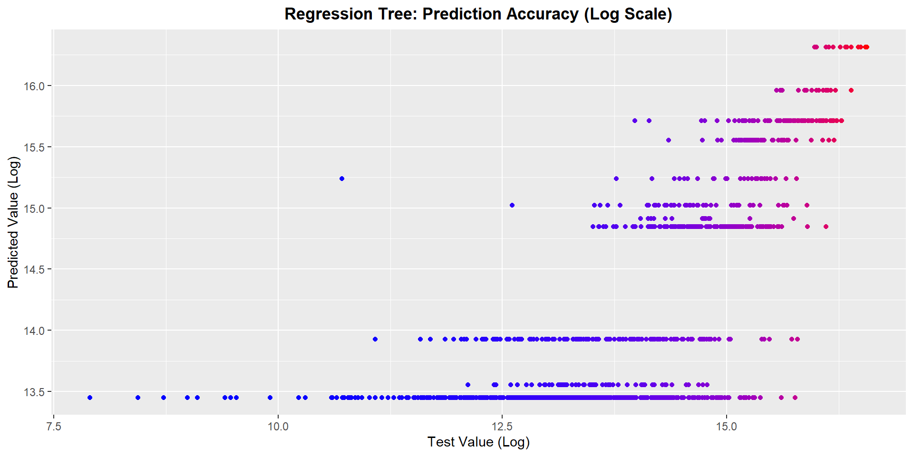

NBA Salary Prediction
Marc Pastor
30th June 2020
NBA Salary Calculator
In this project I am going to develop a model to predict the average salary of an NBA player, based on multiple variables and using tree methods. I will be using a regression tree as the base model, as well as bagging and random forests. The goal of this project is to create an “NBA Salary Calculator” through a Shiny App which is already in development.

The Data
The data to train the model has been obtained from data.world. It consists of two datasets: the players dataset and the salaries_1985to2018 table. Now we load these two datasets into two new variables:
setwd("C:/Users/marct/OneDrive - Tecnocampus Mataro-Maresme/Documentos/CURSOS/PROJECTES/SALARIOS NBA/data")
players <- read.csv("./players.csv", sep = ",", dec = ".")
salaries <- read.csv("./salaries_1985to2018.csv", sep = ",", dec = ".")Players dataset
This dataset contains the 35 following variables:
str(players)## 'data.frame': 4685 obs. of 24 variables:
## $ X_id : chr "abdelal01" "abdulza01" "abdulka01" "abdulma02" ...
## $ birthDate : chr "June 24, 1968" "April 7, 1946" "April 16, 1947" "March 9, 1969" ...
## $ birthPlace : chr "Cairo, Egypt" "Brooklyn, New York" "New York, New York" "Gulfport, Mississippi" ...
## $ career_AST : num 0.3 1.2 3.6 3.5 1.1 2.5 1.2 1 0.7 0.5 ...
## $ career_FG. : chr "50.2" "42.8" "55.9" "44.2" ...
## $ career_FG3.: chr "0.0" "" "5.6" "35.4" ...
## $ career_FT. : chr "70.1" "72.8" "72.1" "90.5" ...
## $ career_G : int 256 505 1560 586 236 830 319 1 56 174 ...
## $ career_PER : chr "13.0" "15.1" "24.6" "15.4" ...
## $ career_PTS : num 5.7 9 24.6 14.6 7.8 18.1 5.6 0 9.5 5.3 ...
## $ career_TRB : chr "3.3" "8.0" "11.2" "1.9" ...
## $ career_WS : chr "4.8" "17.5" "273.4" "25.2" ...
## $ career_eFG.: chr "50.2" "" "55.9" "47.2" ...
## $ college : chr "Duke University" "Iowa State University" "University of California, Los Angeles" "Louisiana State University" ...
## $ draft_pick : chr "25th overall" "5th overall" "1st overall" "3rd overall" ...
## $ draft_round: chr "1st round" "1st round" "1st round" "1st round" ...
## $ draft_team : chr "Portland Trail Blazers" "Cincinnati Royals" "Milwaukee Bucks" "Denver Nuggets" ...
## $ draft_year : chr "1990" "1968" "1969" "1990" ...
## $ height : chr "6-10" "6-9" "7-2" "6-1" ...
## $ highSchool : chr "Bloomfield in Bloomfield, New Jersey" "John Jay in Brooklyn, New York" "Power Memorial in New York, New York" "Gulfport in Gulfport, Mississippi" ...
## $ name : chr "Alaa Abdelnaby" "Zaid Abdul-Aziz" "Kareem Abdul-Jabbar" "Mahmoud Abdul-Rauf" ...
## $ position : chr "Power Forward" "Power Forward and Center" "Center" "Point Guard" ...
## $ shoots : chr "Right" "Right" "Right" "Right" ...
## $ weight : chr "240lb" "235lb" "225lb" "162lb" ...Salaries dataset
This dataset contains the 7 following variables:
str(salaries)## 'data.frame': 14163 obs. of 7 variables:
## $ league : chr "NBA" "NBA" "NBA" "NBA" ...
## $ player_id : chr "abdelal01" "abdelal01" "abdelal01" "abdelal01" ...
## $ salary : int 395000 494000 500000 805000 650000 1530000 2030000 2000000 3000000 1660000 ...
## $ season : chr "1990-91" "1991-92" "1992-93" "1993-94" ...
## $ season_end : int 1991 1992 1993 1994 1995 1985 1986 1988 1989 1991 ...
## $ season_start: int 1990 1991 1992 1993 1994 1984 1985 1987 1988 1990 ...
## $ team : chr "Portland Trail Blazers" "Portland Trail Blazers" "Boston Celtics" "Boston Celtics" ...Data Wrangling
First of all I load three packages that will come in handy during the cleaning process.
library(tidyverse)
library(stringr)
library(lubridate)Secondly I use the lubridate library to convert the players birthdate to a “month-year-day” format (european), and extract the year, month, day, weekday of the players birthday.
players$birthDate <- mdy(players$birthDate)
players$birthyear <- year(players$birthDate)
players$birthmonth <- month(players$birthDate)
players$birthday <- day(players$birthDate)
players$birthweekday <- wday(players$birthDate, label = F)Since I am Spanish, I change the units system, for the weight and height variables (from lbs to kgs, and from inches to centimeters, respectively).
players$height_ft <- as.numeric(sapply(str_split(players$height, pattern = "-"), "[[", 1))
players$height_inches <- as.numeric(sapply(str_split(players$height, pattern = "-"), "[[", 2))
players$height_cm <- 30.48 * players$height_ft + 2.54 * players$height_inches
players$weight <- as.numeric(sapply(str_split(players$weight, pattern = "lb"), "[[", 1))
players$weight_kgs <- players$weight * 0.453592 Since the data in the birthPlace variable contains data in the following format: “San Francisco, California” (two components), or “Eslovenia” (one component), I use a for loop to separate the two words (in case of having to components) or repeting the first word (in case of having one word). This allows me to standarize the format and to create two new variables (birthPlace_city and birthPlace_state_country), which could be useful.
prueba <- str_split(players$birthPlace, pattern = ", ")
for(i in seq_along(prueba)){
if (length(prueba[[i]]) == 1){
prueba[[i]][2] <- prueba[[i]][1]
} else{
}
}
players$birthPlace_city <- sapply(prueba, "[[", 1)
players$birthPlace_state_country <- sapply(prueba, "[[", 2)Then I create a country column with the help of the countrycode package, which includes the official name in English of all countries in the world. For that, I initialize a new variable in the players dataset (called birthPlace_country), setting it to 0. Then I use a for loop which extracts the state name (from the variable birthPlace_state_country) and if the ith observation of this variable in the dataset is also in the state.name vector (a vector containing all the US states names), it changes that value for “United States”, because I am more interested in the country rather than the state. This way, any observation belonging to any state from the USA, will be substituted with the “United States” (country name that I was interested on). If the ith observation of the birthPlace_state_country is not a US state (it is the name of another country), then it will remain the same.
library(datasets)
library(countrycode)
players$birthPlace_country <- 0
for(i in seq_along(players$birthPlace_state_country)){
if(players$birthPlace_state_country[i] %in% state.name){
players$birthPlace_country[i] <- "United States"
} else{
players$birthPlace_country[i] <- players$birthPlace_state_country[i]
}
}Now I look up those country names that have spell mistakes. For that, I create a vector containing all the country names in the world, using the countrycode package and the function %notin%, that will come in handy when filtering the results. Then I check all the country names that are misspelled (line 100), by checking the names in the country_names vector. Then I substitute the wrong country names with the correct name. Finally I check again all the country_names, using the same command, and the only one that is detected as misspelled is “Czech Republic”, because in the country_names vector it is written as Czechoslovakia (nowadays extinct)
country_names <- levels(as.factor(countryname_dict$country.name.en)) # vector containing all country names
'%notin%' <- Negate('%in%') # we create this function in order to filter easily
distinct(players[players$birthPlace_country != "" & players$birthPlace_country %notin% country_names , c(33,34)])## birthPlace_city birthPlace_state_country
## 1 Skopje FYR Macedonia
## 2 Washington District of Columbia
## 3 St. Croix U.S. VirgIslands
## 4 Capljina Bosnia and Herzegovina
## 5 Lubumbashi Democratic Republic of the Congo
## 6 Mostar Bosnia and Herzegovina
## 7 Castries Saint Lucia
## 8 Trinidad and Tobago Trinidad and Tobago
## 9 St. Thomas U.S. VirgIslands
## 10 Sarajevo Bosnia and Herzegovina
## 11 Kinshasa Democratic Republic of the Congo
## 12 Canouan Saint Vincent and the Grenadines
## 13 Ahvaz Islamic Republic of Iran
## 14 Trinidad Trinidad and Tobago
## 15 Brazzaville Republic of the Congo
## 16 Tuzla Bosnia and Herzegovina
## 17 Doboj Bosnia and Herzegovina
## 18 Bihac Bosnia and Herzegovina
## 19 Ohrid FYR Macedonia
## 20 Trebinje Bosnia and Herzegovina
## 21 Prague Czech Republic
## 22 Seoul Republic of Korea
## 23 Dar es Salaam United Republic of Tanzania
## 24 Bosanska Gradiska Bosnia and Herzegovina
## 25 Ostrava Czech Republic
## 26 Pardubice Czech Republic
## 27 Zlin Czech Republicplayers$birthPlace_country <- gsub("FYR Macedonia", "North Macedonia", players$birthPlace_country)
players$birthPlace_country <- gsub("District of Columbia", "United States", players$birthPlace_country)
players$birthPlace_country <- gsub("U.S. VirgIslands", "Congo - Brazzaville", players$birthPlace_country)
players$birthPlace_country <- gsub("Bosnia and Herzegovina", "Bosnia & Herzegovina", players$birthPlace_country)
players$birthPlace_country <- gsub("Democratic Republic of the Congo", "Congo - Brazzaville", players$birthPlace_country)
players$birthPlace_country <- gsub("Saint Lucia", "St. Lucia", players$birthPlace_country)
players$birthPlace_country <- gsub("Trinidad and Tobago", "Trinidad & Tobago", players$birthPlace_country)
players$birthPlace_country <- gsub("Saint Vincent and the Grenadines", "St. Vincent & Grenadines", players$birthPlace_country)
players$birthPlace_country <- gsub("Islamic Republic of Iran", "Iran", players$birthPlace_country)
players$birthPlace_country <- gsub("Republic of the Congo", "Congo - Brazzaville", players$birthPlace_country)
players$birthPlace_country <- gsub("Republic of Korea", "South Korea", players$birthPlace_country)
players$birthPlace_country <- gsub("United Republic of Tanzania", "Tanzania", players$birthPlace_country)
distinct(players[players$birthPlace_country != "" & players$birthPlace_country %notin% country_names , c(33,34)]) ## birthPlace_city birthPlace_state_country
## 1 Prague Czech Republic
## 2 Ostrava Czech Republic
## 3 Pardubice Czech Republic
## 4 Zlin Czech RepublicNow I change the values in the draft_pick and draft_round variables because they are inconsistent, and I will try to convert them to an homogeneous format. First we observe the different levels of the variable with the following code:
players$draft_pick %>% as.factor() %>% levels()## [1] "" "100th overall"
## [3] "101st overall" "102nd overall"
## [5] "103rd overall" "104th overall"
## [7] "106th overall" "107th overall"
## [9] "108th overall" "109th overall"
## [11] "10th overall" "110th overall"
## [13] "111th overall" "112th overall"
## [15] "113th overall" "115th overall"
## [17] "116th overall" "117th overall"
## [19] "118th overall" "119th overall"
## [21] "11th overall" "120th overall"
## [23] "121st overall" "122nd overall"
## [25] "123rd overall" "124th overall"
## [27] "125th overall" "126th overall"
## [29] "127th overall" "128th overall"
## [31] "129th overall" "12th overall"
## [33] "130th overall" "131st overall"
## [35] "132nd overall" "133rd overall"
## [37] "134th overall" "135th overall"
## [39] "136th overall" "138th overall"
## [41] "139th overall" "13th overall"
## [43] "140th overall" "141st overall"
## [45] "142nd overall" "144th overall"
## [47] "145th overall" "146th overall"
## [49] "147th overall" "148th overall"
## [51] "149th overall" "14th overall"
## [53] "150th overall" "151st overall"
## [55] "152nd overall" "153rd overall"
## [57] "154th overall" "155th overall"
## [59] "156th overall" "157th overall"
## [61] "158th overall" "159th overall"
## [63] "15th overall" "160th overall"
## [65] "162nd overall" "163rd overall"
## [67] "165th overall" "166th overall"
## [69] "167th overall" "168th overall"
## [71] "169th overall" "16th overall"
## [73] "175th overall" "178th overall"
## [75] "17th overall" "180th overall"
## [77] "182nd overall" "185th overall"
## [79] "187th overall" "189th overall"
## [81] "18th overall" "190th overall"
## [83] "1949 BAA Draft" "1950 NBA Draft"
## [85] "1952 NBA Draft" "1953 NBA Draft"
## [87] "1956 NBA Draft" "197th overall"
## [89] "198th overall" "19th overall"
## [91] "1st overall" "202nd overall"
## [93] "204th overall" "205th overall"
## [95] "207th overall" "20th overall"
## [97] "211th overall" "214th overall"
## [99] "215th overall" "21st overall"
## [101] "221st overall" "224th overall"
## [103] "227th overall" "22nd overall"
## [105] "23rd overall" "24th overall"
## [107] "25th overall" "26th overall"
## [109] "27th overall" "28th overall"
## [111] "29th overall" "2nd overall"
## [113] "30th overall" "31st overall"
## [115] "32nd overall" "33rd overall"
## [117] "34th overall" "35th overall"
## [119] "36th overall" "37th overall"
## [121] "38th overall" "39th overall"
## [123] "3rd overall" "40th overall"
## [125] "41st overall" "42nd overall"
## [127] "43rd overall" "44th overall"
## [129] "45th overall" "46th overall"
## [131] "47th overall" "48th overall"
## [133] "49th overall" "4th overall"
## [135] "50th overall" "51st overall"
## [137] "52nd overall" "53rd overall"
## [139] "54th overall" "55th overall"
## [141] "56th overall" "57th overall"
## [143] "58th overall" "59th overall"
## [145] "5th overall" "60th overall"
## [147] "61st overall" "62nd overall"
## [149] "63rd overall" "64th overall"
## [151] "65th overall" "66th overall"
## [153] "67th overall" "68th overall"
## [155] "69th overall" "6th overall"
## [157] "70th overall" "71st overall"
## [159] "72nd overall" "73rd overall"
## [161] "74th overall" "75th overall"
## [163] "76th overall" "77th overall"
## [165] "78th overall" "79th overall"
## [167] "7th overall" "80th overall"
## [169] "81st overall" "82nd overall"
## [171] "83rd overall" "84th overall"
## [173] "85th overall" "86th overall"
## [175] "87th overall" "88th overall"
## [177] "89th overall" "8th overall"
## [179] "90th overall" "91st overall"
## [181] "92nd overall" "93rd overall"
## [183] "94th overall" "95th overall"
## [185] "96th overall" "97th overall"
## [187] "98th overall" "99th overall"
## [189] "9th overall" "and Baltimore Bullets"
## [191] "and Boston Celtics" "and Minneapolis Lakers"
## [193] "and New York Knicks" "and Philadelphia Warriors"
## [195] "and Rochester Royals" "and St. Louis Bombers"We can see that the final levels (“and Baltimore Bullets”, “and Boston Celtics”, etc) have a similar format (all of them contain the expression “and”). We use this fact in the gsub function, in order to convert those values to a homogeneous format (“ith overall”). Now we use the same method to substitute those observations containing “rd”, “nd”, “st”, with “th”, in order to have homogeneous data.
players[grepl("and", players$draft_pick), "draft_pick"] <- "0th overall"
players[players$draft_pick == "", "draft_pick"] <- "0th overall"
players$draft_pick <- str_replace_all(players$draft_pick, "st|nd|rd", "th") Now I filter those rows that for the same variable (draft_pick), are not in the “ith overall” format, and since they don’t show any information of the draft_pick, I substitute the value with “Oth overall”, which I will filter out later. Finally, when all observations of the variable are in a homogeneous format, I delete the " overall" part of each observation, and then the “th” and extract only the number.
players[!grepl('th', players$draft_pick), "draft_pick"]## [1] "1953 NBA Draft" "1949 BAA Draft" "1949 BAA Draft" "1950 NBA Draft"
## [5] "1949 BAA Draft" "1950 NBA Draft" "1949 BAA Draft" "1950 NBA Draft"
## [9] "1949 BAA Draft" "1950 NBA Draft" "1950 NBA Draft" "1950 NBA Draft"
## [13] "1952 NBA Draft" "1950 NBA Draft" "1949 BAA Draft" "1950 NBA Draft"
## [17] "1952 NBA Draft" "1950 NBA Draft" "1950 NBA Draft" "1949 BAA Draft"
## [21] "1950 NBA Draft" "1949 BAA Draft" "1949 BAA Draft" "1949 BAA Draft"
## [25] "1950 NBA Draft" "1949 BAA Draft" "1950 NBA Draft" "1953 NBA Draft"
## [29] "1953 NBA Draft" "1952 NBA Draft" "1953 NBA Draft" "1950 NBA Draft"
## [33] "1949 BAA Draft" "1950 NBA Draft" "1949 BAA Draft" "1949 BAA Draft"
## [37] "1950 NBA Draft" "1950 NBA Draft" "1950 NBA Draft" "1950 NBA Draft"
## [41] "1949 BAA Draft" "1950 NBA Draft" "1949 BAA Draft" "1949 BAA Draft"
## [45] "1950 NBA Draft" "1950 NBA Draft" "1949 BAA Draft" "1950 NBA Draft"
## [49] "1949 BAA Draft" "1950 NBA Draft" "1949 BAA Draft" "1950 NBA Draft"
## [53] "1949 BAA Draft" "1950 NBA Draft" "1949 BAA Draft" "1953 NBA Draft"
## [57] "1950 NBA Draft" "1949 BAA Draft" "1950 NBA Draft" "1950 NBA Draft"
## [61] "1956 NBA Draft" "1953 NBA Draft" "1949 BAA Draft"players[!grepl('th', players$draft_pick), "draft_pick"] <- "0th overall"
players$draft_pick <- gsub(" overall", "", players$draft_pick)
players$draft_pick <- gsub("th", "", players$draft_pick)Now I check if all the levels are homogeneous:
players$draft_pick %>% as.factor() %>% levels()## [1] "0" "1" "10" "100" "101" "102" "103" "104" "106" "107" "108" "109"
## [13] "11" "110" "111" "112" "113" "115" "116" "117" "118" "119" "12" "120"
## [25] "121" "122" "123" "124" "125" "126" "127" "128" "129" "13" "130" "131"
## [37] "132" "133" "134" "135" "136" "138" "139" "14" "140" "141" "142" "144"
## [49] "145" "146" "147" "148" "149" "15" "150" "151" "152" "153" "154" "155"
## [61] "156" "157" "158" "159" "16" "160" "162" "163" "165" "166" "167" "168"
## [73] "169" "17" "175" "178" "18" "180" "182" "185" "187" "189" "19" "190"
## [85] "197" "198" "2" "20" "202" "204" "205" "207" "21" "211" "214" "215"
## [97] "22" "221" "224" "227" "23" "24" "25" "26" "27" "28" "29" "3"
## [109] "30" "31" "32" "33" "34" "35" "36" "37" "38" "39" "4" "40"
## [121] "41" "42" "43" "44" "45" "46" "47" "48" "49" "5" "50" "51"
## [133] "52" "53" "54" "55" "56" "57" "58" "59" "6" "60" "61" "62"
## [145] "63" "64" "65" "66" "67" "68" "69" "7" "70" "71" "72" "73"
## [157] "74" "75" "76" "77" "78" "79" "8" "80" "81" "82" "83" "84"
## [169] "85" "86" "87" "88" "89" "9" "90" "91" "92" "93" "94" "95"
## [181] "96" "97" "98" "99"Now I do the same with the draft_round variable, but now using a for loop:
players$draft_round <- str_replace_all(players$draft_round, "st|nd|rd", "th")
players[!grepl('th', players$draft_round), "draft_round"] <- "0th overall"
players$draft_round <- as.factor(players$draft_round)
players$draft_round %>% as.factor() %>% levels() # we use this in order to see which are the patterns to substitute## [1] "0th overall"
## [2] "10th roun"
## [3] "10th routh"
## [4] "11th routh"
## [5] "12th routh"
## [6] "13th routh"
## [7] "14th routh"
## [8] "15th routh"
## [9] "16th routh"
## [10] "17th routh"
## [11] "19th routh"
## [12] "1th overall in the 1971 Supplemental Hathship Draf"
## [13] "1th routh"
## [14] "2th overall in the 1971 Supplemental Hathship Draf"
## [15] "2th roun"
## [16] "2th routh"
## [17] "3th roun"
## [18] "3th routh"
## [19] "4th overall in the 1971 Supplemental Hathship Draf"
## [20] "4th roun"
## [21] "4th routh"
## [22] "5th roun"
## [23] "5th routh"
## [24] "6th roun"
## [25] "6th routh"
## [26] "7th roun"
## [27] "7th routh"
## [28] "8th roun"
## [29] "8th routh"
## [30] "9th roun"
## [31] "9th routh"levels_draftround <- levels(as.factor(players$draft_round))
for(i in seq_along(levels_draftround)){
patterns <- c(" overall", " routh", " in the 1971 Supplemental Hathship Draf", " roun")
for(j in seq_along(patterns)){
if(str_detect(levels_draftround[i], patterns[j] ) == TRUE){
levels_draftround[i] <- gsub(patterns[j], "", levels_draftround[i])
} else {
}
}
}
levels_draftround <- gsub("th", "", levels_draftround)
levels(players$draft_round) <- levels_draftroundNow we check the draft team variable, but we will solve the problem of NA’s and empty values later
players$draft_team %>% as.factor() %>% levels()## [1] "" "Atlanta Hawks"
## [3] "Baltimore Bullets" "Boston Celtics"
## [5] "Brooklyn Nets" "Buffalo Braves"
## [7] "Capital Bullets" "Charlotte Bobcats"
## [9] "Charlotte Hornets" "Chicago Bulls"
## [11] "Chicago Packers" "Chicago Stags"
## [13] "Chicago Zephyrs" "Cincinnati Royals"
## [15] "Cleveland Cavaliers" "Dallas Mavericks"
## [17] "Denver Nuggets" "Detroit Pistons"
## [19] "Fort Wayne Pistons" "Golden State Warriors"
## [21] "Houston Rockets" "Indiana Pacers"
## [23] "Indianapolis Jets" "Indianapolis Olympians"
## [25] "Kansas City-Omaha Kings" "Kansas City Kings"
## [27] "Los Angeles Clippers" "Los Angeles Lakers"
## [29] "Memphis Grizzlies" "Miami Heat"
## [31] "Milwaukee Bucks" "Milwaukee Hawks"
## [33] "Minneapolis Lakers" "Minnesota Timberwolves"
## [35] "New Jersey Nets" "New Orleans Hornets"
## [37] "New Orleans Jazz" "New Orleans Pelicans"
## [39] "New Orleans/Oklahoma City Hornets" "New York Knicks"
## [41] "Oklahoma City Thunder" "Orlando Magic"
## [43] "Philadelphia 76ers" "Philadelphia Warriors"
## [45] "Phoenix Suns" "Pittsburgh Ironmen"
## [47] "Portland Trail Blazers" "Providence Steamrollers"
## [49] "Rochester Royals" "Sacramento Kings"
## [51] "San Antonio Spurs" "San Diego Clippers"
## [53] "San Diego Rockets" "San Francisco Warriors"
## [55] "Seattle SuperSonics" "St. Louis Bombers"
## [57] "St. Louis Hawks" "Syracuse Nationals"
## [59] "Toronto Huskies" "Toronto Raptors"
## [61] "Tri-Cities Blackhawks" "Utah Jazz"
## [63] "Vancouver Grizzlies" "Washington Bullets"
## [65] "Washington Capitols" "Washington Wizards"Now I delete the useless variables in the salaries dataset, and rearrange the columns.
salaries$league <- NULL
salaries$season <- NULL
salaries <- salaries[, c(1,4,3,2,5)]
head(salaries)## player_id season_start season_end salary team
## 1 abdelal01 1990 1991 395000 Portland Trail Blazers
## 2 abdelal01 1991 1992 494000 Portland Trail Blazers
## 3 abdelal01 1992 1993 500000 Boston Celtics
## 4 abdelal01 1993 1994 805000 Boston Celtics
## 5 abdelal01 1994 1995 650000 Sacramento Kings
## 6 abdulka01 1984 1985 1530000 Los Angeles Lakerslibrary(modeest)## Registered S3 method overwritten by 'rmutil':
## method from
## print.response httrThen I create dummy variables for each team, with the value 1 if the player played in that team during a year, in order to know how many years did the player play for each team. Then I change the name of the dummy variables with the for loop.
library(fastDummies)
levels(as.factor(salaries$team))## [1] "" "Atlanta Hawks"
## [3] "Boston Celtics" "Brooklyn Nets"
## [5] "Charlotte Bobcats" "Charlotte Hornets"
## [7] "Chicago Bulls" "Cleveland Cavaliers"
## [9] "Dallas Mavericks" "Denver Nuggets"
## [11] "Detroit Pistons" "Golden State Warriors"
## [13] "Houston Rockets" "Indiana Pacers"
## [15] "Kansas City Kings" "Los Angeles Clippers"
## [17] "Los Angeles Lakers" "Memphis Grizzlies"
## [19] "Miami Heat" "Milwaukee Bucks"
## [21] "Minnesota Timberwolves" "New Jersey Nets"
## [23] "New Orleans Hornets" "New Orleans Pelicans"
## [25] "New Orleans/Oklahoma City Hornets" "New York Knicks"
## [27] "Oklahoma City Thunder" "Orlando Magic"
## [29] "Philadelphia 76ers" "Phoenix Suns"
## [31] "Portland Trail Blazers" "Sacramento Kings"
## [33] "San Antonio Spurs" "Seattle SuperSonics"
## [35] "Toronto Raptors" "Utah Jazz"
## [37] "Vancouver Grizzlies" "Washington Bullets"
## [39] "Washington Wizards"salaries <- dummy_cols(salaries, select_columns = "team")[,-6] # I remove the 6th column because it didn't represent any team
salaries$team <- NULL
# Now we cange the names of the dummy variables
for(i in 5:ncol(salaries)){
colnames(salaries)[i] <- gsub("team", "yearsplayed", colnames(salaries)[i])
colnames(salaries)[i] <- gsub(" ", "", colnames(salaries)[i])
}
head(salaries)## player_id season_start season_end salary yearsplayed_AtlantaHawks
## 1 abdelal01 1990 1991 395000 0
## 2 abdelal01 1991 1992 494000 0
## 3 abdelal01 1992 1993 500000 0
## 4 abdelal01 1993 1994 805000 0
## 5 abdelal01 1994 1995 650000 0
## 6 abdulka01 1984 1985 1530000 0
## yearsplayed_BostonCeltics yearsplayed_BrooklynNets
## 1 0 0
## 2 0 0
## 3 1 0
## 4 1 0
## 5 0 0
## 6 0 0
## yearsplayed_CharlotteBobcats yearsplayed_CharlotteHornets
## 1 0 0
## 2 0 0
## 3 0 0
## 4 0 0
## 5 0 0
## 6 0 0
## yearsplayed_ChicagoBulls yearsplayed_ClevelandCavaliers
## 1 0 0
## 2 0 0
## 3 0 0
## 4 0 0
## 5 0 0
## 6 0 0
## yearsplayed_DallasMavericks yearsplayed_DenverNuggets
## 1 0 0
## 2 0 0
## 3 0 0
## 4 0 0
## 5 0 0
## 6 0 0
## yearsplayed_DetroitPistons yearsplayed_GoldenStateWarriors
## 1 0 0
## 2 0 0
## 3 0 0
## 4 0 0
## 5 0 0
## 6 0 0
## yearsplayed_HoustonRockets yearsplayed_IndianaPacers
## 1 0 0
## 2 0 0
## 3 0 0
## 4 0 0
## 5 0 0
## 6 0 0
## yearsplayed_KansasCityKings yearsplayed_LosAngelesClippers
## 1 0 0
## 2 0 0
## 3 0 0
## 4 0 0
## 5 0 0
## 6 0 0
## yearsplayed_LosAngelesLakers yearsplayed_MemphisGrizzlies
## 1 0 0
## 2 0 0
## 3 0 0
## 4 0 0
## 5 0 0
## 6 1 0
## yearsplayed_MiamiHeat yearsplayed_MilwaukeeBucks
## 1 0 0
## 2 0 0
## 3 0 0
## 4 0 0
## 5 0 0
## 6 0 0
## yearsplayed_MinnesotaTimberwolves yearsplayed_NewJerseyNets
## 1 0 0
## 2 0 0
## 3 0 0
## 4 0 0
## 5 0 0
## 6 0 0
## yearsplayed_NewOrleansHornets yearsplayed_NewOrleansPelicans
## 1 0 0
## 2 0 0
## 3 0 0
## 4 0 0
## 5 0 0
## 6 0 0
## yearsplayed_NewOrleans/OklahomaCityHornets yearsplayed_NewYorkKnicks
## 1 0 0
## 2 0 0
## 3 0 0
## 4 0 0
## 5 0 0
## 6 0 0
## yearsplayed_OklahomaCityThunder yearsplayed_OrlandoMagic
## 1 0 0
## 2 0 0
## 3 0 0
## 4 0 0
## 5 0 0
## 6 0 0
## yearsplayed_Philadelphia76ers yearsplayed_PhoenixSuns
## 1 0 0
## 2 0 0
## 3 0 0
## 4 0 0
## 5 0 0
## 6 0 0
## yearsplayed_PortlandTrailBlazers yearsplayed_SacramentoKings
## 1 1 0
## 2 1 0
## 3 0 0
## 4 0 0
## 5 0 1
## 6 0 0
## yearsplayed_SanAntonioSpurs yearsplayed_SeattleSuperSonics
## 1 0 0
## 2 0 0
## 3 0 0
## 4 0 0
## 5 0 0
## 6 0 0
## yearsplayed_TorontoRaptors yearsplayed_UtahJazz
## 1 0 0
## 2 0 0
## 3 0 0
## 4 0 0
## 5 0 0
## 6 0 0
## yearsplayed_VancouverGrizzlies yearsplayed_WashingtonBullets
## 1 0 0
## 2 0 0
## 3 0 0
## 4 0 0
## 5 0 0
## 6 0 0
## yearsplayed_WashingtonWizards
## 1 0
## 2 0
## 3 0
## 4 0
## 5 0
## 6 0Now I separate the salaries dataframe into two dataframes, to ease the process of summarizing. This gives me the carreer average salary for each player, as well as the number of years he played for each team.
salaries_1 <- salaries[, c(1, 4)]
salaries_2 <- salaries[, c(1, 5:ncol(salaries))]
salaries_1 <- salaries_1 %>% group_by(player_id) %>% summarize(carreer_avg_salary = mean(salary)) %>% as.data.frame()## `summarise()` ungrouping output (override with `.groups` argument)salaries_2 <- salaries_2 %>% group_by(player_id) %>% summarise_all("sum") %>% as.data.frame()
salaries <- inner_join(salaries_1, salaries_2, by = "player_id")
head(salaries)## player_id carreer_avg_salary yearsplayed_AtlantaHawks
## 1 abdelal01 568800 0
## 2 abdulka01 2140000 0
## 3 abdulma02 2205500 0
## 4 abdulta01 3798280 0
## 5 abdursh01 8715091 3
## 6 abrinal01 5859882 0
## yearsplayed_BostonCeltics yearsplayed_BrooklynNets
## 1 2 0
## 2 0 0
## 3 0 0
## 4 0 0
## 5 0 0
## 6 0 0
## yearsplayed_CharlotteBobcats yearsplayed_CharlotteHornets
## 1 0 0
## 2 0 0
## 3 0 0
## 4 0 0
## 5 0 0
## 6 0 0
## yearsplayed_ChicagoBulls yearsplayed_ClevelandCavaliers
## 1 0 0
## 2 0 0
## 3 0 0
## 4 0 0
## 5 0 0
## 6 0 0
## yearsplayed_DallasMavericks yearsplayed_DenverNuggets
## 1 0 0
## 2 0 0
## 3 0 6
## 4 5 3
## 5 0 0
## 6 0 0
## yearsplayed_DetroitPistons yearsplayed_GoldenStateWarriors
## 1 0 0
## 2 0 0
## 3 0 0
## 4 0 0
## 5 0 0
## 6 0 0
## yearsplayed_HoustonRockets yearsplayed_IndianaPacers
## 1 0 0
## 2 0 0
## 3 0 0
## 4 0 0
## 5 0 0
## 6 0 0
## yearsplayed_KansasCityKings yearsplayed_LosAngelesClippers
## 1 0 0
## 2 0 0
## 3 0 0
## 4 0 0
## 5 0 0
## 6 0 0
## yearsplayed_LosAngelesLakers yearsplayed_MemphisGrizzlies
## 1 0 0
## 2 4 0
## 3 0 0
## 4 0 0
## 5 0 0
## 6 0 0
## yearsplayed_MiamiHeat yearsplayed_MilwaukeeBucks
## 1 0 0
## 2 0 0
## 3 0 0
## 4 0 0
## 5 0 0
## 6 0 0
## yearsplayed_MinnesotaTimberwolves yearsplayed_NewJerseyNets
## 1 0 0
## 2 0 0
## 3 0 0
## 4 0 0
## 5 0 0
## 6 0 0
## yearsplayed_NewOrleansHornets yearsplayed_NewOrleansPelicans
## 1 0 0
## 2 0 0
## 3 0 0
## 4 0 0
## 5 0 0
## 6 0 0
## yearsplayed_NewOrleans/OklahomaCityHornets yearsplayed_NewYorkKnicks
## 1 0 0
## 2 0 0
## 3 0 0
## 4 0 0
## 5 0 0
## 6 0 0
## yearsplayed_OklahomaCityThunder yearsplayed_OrlandoMagic
## 1 0 0
## 2 0 0
## 3 0 0
## 4 0 0
## 5 0 0
## 6 2 0
## yearsplayed_Philadelphia76ers yearsplayed_PhoenixSuns
## 1 0 0
## 2 0 0
## 3 0 0
## 4 0 0
## 5 0 0
## 6 0 0
## yearsplayed_PortlandTrailBlazers yearsplayed_SacramentoKings
## 1 2 1
## 2 0 0
## 3 0 2
## 4 0 2
## 5 1 4
## 6 0 0
## yearsplayed_SanAntonioSpurs yearsplayed_SeattleSuperSonics
## 1 0 0
## 2 0 0
## 3 0 0
## 4 0 0
## 5 0 0
## 6 0 0
## yearsplayed_TorontoRaptors yearsplayed_UtahJazz
## 1 0 0
## 2 0 0
## 3 0 0
## 4 0 0
## 5 0 0
## 6 0 0
## yearsplayed_VancouverGrizzlies yearsplayed_WashingtonBullets
## 1 0 0
## 2 0 0
## 3 1 0
## 4 0 0
## 5 3 0
## 6 0 0
## yearsplayed_WashingtonWizards
## 1 0
## 2 0
## 3 0
## 4 0
## 5 0
## 6 0Finally I use the same name for the primary key column (player_id) and merge the two datasets (players and salaries) into de nba_dataset
colnames(players)[1] <- "player_id"
nba_dataset <- inner_join(players, salaries, by = "player_id")
head(nba_dataset)## player_id birthDate birthPlace career_AST career_FG.
## 1 abdelal01 1968-06-24 Cairo, Egypt 0.3 50.2
## 2 abdulka01 1947-04-16 New York, New York 3.6 55.9
## 3 abdulma02 1969-03-09 Gulfport, Mississippi 3.5 44.2
## 4 abdulta01 1974-11-03 Maisons Alfort, France 1.1 41.7
## 5 abdursh01 1976-12-11 Marietta, Georgia 2.5 47.2
## 6 abrinal01 1993-08-01 Palma de Mallorca, Spain 0.5 38.7
## career_FG3. career_FT. career_G career_PER career_PTS career_TRB career_WS
## 1 0.0 70.1 256 13.0 5.7 3.3 4.8
## 2 5.6 72.1 1560 24.6 24.6 11.2 273.4
## 3 35.4 90.5 586 15.4 14.6 1.9 25.2
## 4 23.7 70.3 236 11.4 7.8 3.3 3.5
## 5 29.7 81.0 830 19.0 18.1 7.5 71.2
## 6 36.8 88.0 174 8.8 5.3 1.4 5.0
## career_eFG. college draft_pick
## 1 50.2 Duke University 25
## 2 55.9 University of California, Los Angeles 1
## 3 47.2 Louisiana State University 3
## 4 42.2 University of Michigan, San Jose State University 11
## 5 47.9 University of California 3
## 6 52.5 32
## draft_round draft_team draft_year height
## 1 1 Portland Trail Blazers 1990 6-10
## 2 1 Milwaukee Bucks 1969 7-2
## 3 1 Denver Nuggets 1990 6-1
## 4 1 Sacramento Kings 1997 6-6
## 5 1 Vancouver Grizzlies 1996 6-9
## 6 2 Oklahoma City Thunder 2013 6-6
## highSchool name
## 1 Bloomfield in Bloomfield, New Jersey Alaa Abdelnaby
## 2 Power Memorial in New York, New York Kareem Abdul-Jabbar
## 3 Gulfport in Gulfport, Mississippi Mahmoud Abdul-Rauf
## 4 Lycee Aristide Briand in Evreux, France Tariq Abdul-Wahad
## 5 Wheeler in Marietta, Georgia Shareef Abdur-Rahim
## 6 Alex Abrines
## position shoots weight birthyear birthmonth
## 1 Power Forward Right 240 1968 6
## 2 Center Right 225 1947 4
## 3 Point Guard Right 162 1969 3
## 4 Shooting Guard Right 223 1974 11
## 5 Center and Small Forward and Power Forward Right 225 1976 12
## 6 Shooting Guard Right 200 1993 8
## birthday birthweekday height_ft height_inches height_cm weight_kgs
## 1 24 2 6 10 208.28 108.8621
## 2 16 4 7 2 218.44 102.0582
## 3 9 1 6 1 185.42 73.4819
## 4 3 1 6 6 198.12 101.1510
## 5 11 7 6 9 205.74 102.0582
## 6 1 1 6 6 198.12 90.7184
## birthPlace_city birthPlace_state_country birthPlace_country
## 1 Cairo Egypt Egypt
## 2 New York New York United States
## 3 Gulfport Mississippi United States
## 4 Maisons Alfort France France
## 5 Marietta Georgia United States
## 6 Palma de Mallorca Spain Spain
## carreer_avg_salary yearsplayed_AtlantaHawks yearsplayed_BostonCeltics
## 1 568800 0 2
## 2 2140000 0 0
## 3 2205500 0 0
## 4 3798280 0 0
## 5 8715091 3 0
## 6 5859882 0 0
## yearsplayed_BrooklynNets yearsplayed_CharlotteBobcats
## 1 0 0
## 2 0 0
## 3 0 0
## 4 0 0
## 5 0 0
## 6 0 0
## yearsplayed_CharlotteHornets yearsplayed_ChicagoBulls
## 1 0 0
## 2 0 0
## 3 0 0
## 4 0 0
## 5 0 0
## 6 0 0
## yearsplayed_ClevelandCavaliers yearsplayed_DallasMavericks
## 1 0 0
## 2 0 0
## 3 0 0
## 4 0 5
## 5 0 0
## 6 0 0
## yearsplayed_DenverNuggets yearsplayed_DetroitPistons
## 1 0 0
## 2 0 0
## 3 6 0
## 4 3 0
## 5 0 0
## 6 0 0
## yearsplayed_GoldenStateWarriors yearsplayed_HoustonRockets
## 1 0 0
## 2 0 0
## 3 0 0
## 4 0 0
## 5 0 0
## 6 0 0
## yearsplayed_IndianaPacers yearsplayed_KansasCityKings
## 1 0 0
## 2 0 0
## 3 0 0
## 4 0 0
## 5 0 0
## 6 0 0
## yearsplayed_LosAngelesClippers yearsplayed_LosAngelesLakers
## 1 0 0
## 2 0 4
## 3 0 0
## 4 0 0
## 5 0 0
## 6 0 0
## yearsplayed_MemphisGrizzlies yearsplayed_MiamiHeat yearsplayed_MilwaukeeBucks
## 1 0 0 0
## 2 0 0 0
## 3 0 0 0
## 4 0 0 0
## 5 0 0 0
## 6 0 0 0
## yearsplayed_MinnesotaTimberwolves yearsplayed_NewJerseyNets
## 1 0 0
## 2 0 0
## 3 0 0
## 4 0 0
## 5 0 0
## 6 0 0
## yearsplayed_NewOrleansHornets yearsplayed_NewOrleansPelicans
## 1 0 0
## 2 0 0
## 3 0 0
## 4 0 0
## 5 0 0
## 6 0 0
## yearsplayed_NewOrleans/OklahomaCityHornets yearsplayed_NewYorkKnicks
## 1 0 0
## 2 0 0
## 3 0 0
## 4 0 0
## 5 0 0
## 6 0 0
## yearsplayed_OklahomaCityThunder yearsplayed_OrlandoMagic
## 1 0 0
## 2 0 0
## 3 0 0
## 4 0 0
## 5 0 0
## 6 2 0
## yearsplayed_Philadelphia76ers yearsplayed_PhoenixSuns
## 1 0 0
## 2 0 0
## 3 0 0
## 4 0 0
## 5 0 0
## 6 0 0
## yearsplayed_PortlandTrailBlazers yearsplayed_SacramentoKings
## 1 2 1
## 2 0 0
## 3 0 2
## 4 0 2
## 5 1 4
## 6 0 0
## yearsplayed_SanAntonioSpurs yearsplayed_SeattleSuperSonics
## 1 0 0
## 2 0 0
## 3 0 0
## 4 0 0
## 5 0 0
## 6 0 0
## yearsplayed_TorontoRaptors yearsplayed_UtahJazz
## 1 0 0
## 2 0 0
## 3 0 0
## 4 0 0
## 5 0 0
## 6 0 0
## yearsplayed_VancouverGrizzlies yearsplayed_WashingtonBullets
## 1 0 0
## 2 0 0
## 3 1 0
## 4 0 0
## 5 3 0
## 6 0 0
## yearsplayed_WashingtonWizards
## 1 0
## 2 0
## 3 0
## 4 0
## 5 0
## 6 0Then I delete the unnecessary columns and rearrange the columns of the new dataset
nba_dataset$birthPlace <- NULL
nba_dataset$height <- NULL
nba_dataset$weight <- NULL
nba_dataset$height_ft <- NULL
nba_dataset$height_inches <- NULL
nba_dataset$birthPlace_city <- NULL
nba_dataset$birthPlace_state_country <- NULL
nba_dataset$highSchool <- NULL
nba_dataset <- nba_dataset[, c(1, 18, 21, 22, 23, 24, 25, 26, 27, 13, 17,
14, 15, 16, 19, 20, 28, 3, 4, 5, 6, 7,
8, 9, 10, 11, 12, 29:ncol(nba_dataset))]
head(nba_dataset)## player_id name birthyear birthmonth birthday birthweekday
## 1 abdelal01 Alaa Abdelnaby 1968 6 24 2
## 2 abdulka01 Kareem Abdul-Jabbar 1947 4 16 4
## 3 abdulma02 Mahmoud Abdul-Rauf 1969 3 9 1
## 4 abdulta01 Tariq Abdul-Wahad 1974 11 3 1
## 5 abdursh01 Shareef Abdur-Rahim 1976 12 11 7
## 6 abrinal01 Alex Abrines 1993 8 1 1
## height_cm weight_kgs birthPlace_country
## 1 208.28 108.8621 Egypt
## 2 218.44 102.0582 United States
## 3 185.42 73.4819 United States
## 4 198.12 101.1510 France
## 5 205.74 102.0582 United States
## 6 198.12 90.7184 Spain
## college draft_year draft_pick
## 1 Duke University 1990 25
## 2 University of California, Los Angeles 1969 1
## 3 Louisiana State University 1990 3
## 4 University of Michigan, San Jose State University 1997 11
## 5 University of California 1996 3
## 6 2013 32
## draft_round draft_team position
## 1 1 Portland Trail Blazers Power Forward
## 2 1 Milwaukee Bucks Center
## 3 1 Denver Nuggets Point Guard
## 4 1 Sacramento Kings Shooting Guard
## 5 1 Vancouver Grizzlies Center and Small Forward and Power Forward
## 6 2 Oklahoma City Thunder Shooting Guard
## shoots carreer_avg_salary career_AST career_FG. career_FG3. career_FT.
## 1 Right 568800 0.3 50.2 0.0 70.1
## 2 Right 2140000 3.6 55.9 5.6 72.1
## 3 Right 2205500 3.5 44.2 35.4 90.5
## 4 Right 3798280 1.1 41.7 23.7 70.3
## 5 Right 8715091 2.5 47.2 29.7 81.0
## 6 Right 5859882 0.5 38.7 36.8 88.0
## career_G career_PER career_PTS career_TRB career_WS career_eFG.
## 1 256 13.0 5.7 3.3 4.8 50.2
## 2 1560 24.6 24.6 11.2 273.4 55.9
## 3 586 15.4 14.6 1.9 25.2 47.2
## 4 236 11.4 7.8 3.3 3.5 42.2
## 5 830 19.0 18.1 7.5 71.2 47.9
## 6 174 8.8 5.3 1.4 5.0 52.5
## yearsplayed_AtlantaHawks yearsplayed_BostonCeltics yearsplayed_BrooklynNets
## 1 0 2 0
## 2 0 0 0
## 3 0 0 0
## 4 0 0 0
## 5 3 0 0
## 6 0 0 0
## yearsplayed_CharlotteBobcats yearsplayed_CharlotteHornets
## 1 0 0
## 2 0 0
## 3 0 0
## 4 0 0
## 5 0 0
## 6 0 0
## yearsplayed_ChicagoBulls yearsplayed_ClevelandCavaliers
## 1 0 0
## 2 0 0
## 3 0 0
## 4 0 0
## 5 0 0
## 6 0 0
## yearsplayed_DallasMavericks yearsplayed_DenverNuggets
## 1 0 0
## 2 0 0
## 3 0 6
## 4 5 3
## 5 0 0
## 6 0 0
## yearsplayed_DetroitPistons yearsplayed_GoldenStateWarriors
## 1 0 0
## 2 0 0
## 3 0 0
## 4 0 0
## 5 0 0
## 6 0 0
## yearsplayed_HoustonRockets yearsplayed_IndianaPacers
## 1 0 0
## 2 0 0
## 3 0 0
## 4 0 0
## 5 0 0
## 6 0 0
## yearsplayed_KansasCityKings yearsplayed_LosAngelesClippers
## 1 0 0
## 2 0 0
## 3 0 0
## 4 0 0
## 5 0 0
## 6 0 0
## yearsplayed_LosAngelesLakers yearsplayed_MemphisGrizzlies
## 1 0 0
## 2 4 0
## 3 0 0
## 4 0 0
## 5 0 0
## 6 0 0
## yearsplayed_MiamiHeat yearsplayed_MilwaukeeBucks
## 1 0 0
## 2 0 0
## 3 0 0
## 4 0 0
## 5 0 0
## 6 0 0
## yearsplayed_MinnesotaTimberwolves yearsplayed_NewJerseyNets
## 1 0 0
## 2 0 0
## 3 0 0
## 4 0 0
## 5 0 0
## 6 0 0
## yearsplayed_NewOrleansHornets yearsplayed_NewOrleansPelicans
## 1 0 0
## 2 0 0
## 3 0 0
## 4 0 0
## 5 0 0
## 6 0 0
## yearsplayed_NewOrleans/OklahomaCityHornets yearsplayed_NewYorkKnicks
## 1 0 0
## 2 0 0
## 3 0 0
## 4 0 0
## 5 0 0
## 6 0 0
## yearsplayed_OklahomaCityThunder yearsplayed_OrlandoMagic
## 1 0 0
## 2 0 0
## 3 0 0
## 4 0 0
## 5 0 0
## 6 2 0
## yearsplayed_Philadelphia76ers yearsplayed_PhoenixSuns
## 1 0 0
## 2 0 0
## 3 0 0
## 4 0 0
## 5 0 0
## 6 0 0
## yearsplayed_PortlandTrailBlazers yearsplayed_SacramentoKings
## 1 2 1
## 2 0 0
## 3 0 2
## 4 0 2
## 5 1 4
## 6 0 0
## yearsplayed_SanAntonioSpurs yearsplayed_SeattleSuperSonics
## 1 0 0
## 2 0 0
## 3 0 0
## 4 0 0
## 5 0 0
## 6 0 0
## yearsplayed_TorontoRaptors yearsplayed_UtahJazz
## 1 0 0
## 2 0 0
## 3 0 0
## 4 0 0
## 5 0 0
## 6 0 0
## yearsplayed_VancouverGrizzlies yearsplayed_WashingtonBullets
## 1 0 0
## 2 0 0
## 3 1 0
## 4 0 0
## 5 3 0
## 6 0 0
## yearsplayed_WashingtonWizards
## 1 0
## 2 0
## 3 0
## 4 0
## 5 0
## 6 0Now we delete the missing and strange values, and we also convert the columns to their most adequate data type.
nba_dataset[, c(1, 2, 9, 10, 14, 15, 16)] <- data.frame(lapply(nba_dataset[, c(1, 2, 9, 10, 14, 15, 16)], as.factor)) # Categorical Data
lapply(nba_dataset[, c(1,2,9,10,14,15,16)], levels) # we observe the levels in order to spot strange values## $player_id
## [1] "abdelal01" "abdulka01" "abdulma02" "abdulta01" "abdursh01" "abrinal01"
## [7] "ackeral01" "acresma01" "acyqu01" "adamsal01" "adamsha01" "adamsjo01"
## [13] "adamsmi01" "adamsst01" "addisra01" "adebaba01" "adrieje01" "afflaar01"
## [19] "agerma01" "aguirma01" "ahearbl01" "aingeda01" "ajincal01" "akognjo01"
## [25] "alabiso01" "alarima01" "aldemfu01" "aldrico01" "aldrila01" "alexacl01"
## [31] "alexaco01" "alexaco02" "alexaga01" "alexajo01" "alexavi01" "alforst01"
## [37] "allenja01" "allenje01" "allenla01" "allenma01" "allenra02" "allento01"
## [43] "almonmo01" "alstode01" "alstora01" "amaecjo01" "amayaas01" "aminual01"
## [49] "amundlo01" "anderal01" "anderch01" "anderda03" "anderde01" "anderer01"
## [55] "andergr01" "anderja01" "anderju01" "anderke01" "anderky01" "anderni01"
## [61] "anderri01" "anderro01" "anderry01" "andersh01" "anderwi01" "andrima01"
## [67] "anigbik01" "anslemi01" "anstech01" "antetgi01" "antetth01" "anthoca01"
## [73] "anthogr01" "anthojo01" "anticpe01" "anunoog01" "applike01" "araujra01"
## [79] "archiro01" "arenagi01" "arizatr01" "armstbj01" "armstbr01" "armstda01"
## [85] "armsthi01" "arroyca01" "artesro01" "arthuda01" "asikom01" "askewvi01"
## [91] "askinke01" "atkinch01" "augmost01" "augusdj01" "augusja01" "austiis01"
## [97] "aventan01" "averywi01" "ayongu01" "azubuke01" "babbch01" "babbilu01"
## [103] "babicmi01" "bacondw01" "bagarda01" "baglejo01" "baileja01" "baileth01"
## [109] "baileto01" "bairsca01" "bakerro01" "bakervi01" "balkmre01" "ballagr01"
## [115] "balllo01" "banksge01" "banksma01" "bannike01" "barbole01" "bardost01"
## [121] "bareajo01" "bargnan01" "barklch01" "barkler01" "barneha02" "barnema02"
## [127] "barrean01" "barroda01" "barroea01" "barrybr01" "barrydr01" "barryjo01"
## [133] "bartowi01" "basdeed01" "bassbr01" "bastoma01" "bateeme01" "batises01"
## [139] "batismi01" "battish01" "battito01" "battljo01" "battlke01" "batumni01"
## [145] "baxtelo01" "bayleje01" "baynear01" "bazarse01" "bazemke01" "bealbr01"
## [151] "beaslje01" "beaslma01" "beaslmi01" "beaubro01" "beckco01" "bedfowi01"
## [157] "belinma01" "bellch01" "belljo01" "bellra01" "belltr01" "bembrde01"
## [163] "bendedr01" "bendejo01" "benimje01" "benjabe01" "benjaco01" "bennean01"
## [169] "bennema01" "benneto01" "bennewi01" "benoida01" "bensoke01" "bensoke02"
## [175] "bentibe01" "berryri01" "berrywa01" "bertada01" "besttr01" "beverpa01"
## [181] "bhullsi01" "bibbymi01" "biedran01" "billuch01" "birchkh01" "birdla01"
## [187] "birdsot01" "biyombi01" "bjeline01" "blabuw01" "blackal01" "blackro01"
## [193] "blackta01" "blairde01" "blakest01" "blalowi01" "blankla01" "blantri01"
## [199] "blatcan01" "blaylmo01" "bledser01" "blounco01" "blounma01" "bobbito01"
## [205] "boganke01" "bogdabo01" "bogdabo02" "boguemu01" "bogutan01" "bohanet01"
## [211] "bolma01" "bondwa01" "bonnean01" "bonnema01" "bookede01" "booketr01"
## [217] "boonejo01" "boothca01" "boothke01" "boozeca01" "borchcu01" "borrela01"
## [223] "boshch01" "bosweto01" "boumtru01" "bowdlca01" "bowenbr01" "bowenry01"
## [229] "bowiean01" "bowiesa01" "bowmair01" "boycedo01" "boykiea01" "bozemce01"
## [235] "brackcr01" "bradlav01" "bradldu01" "bradlmi01" "bradlsh01" "bradlto01"
## [241] "bradtma01" "braggma01" "braggto01" "bramlaj01" "brancad01" "brandel01"
## [247] "brandte01" "breauti01" "bremejr01" "breuera01" "breweco01" "breweja01"
## [253] "brewero02" "brezepr01" "brickfr01" "bridgju01" "brittmi01" "brockjo01"
## [259] "brogdma01" "brookaa01" "brookdi01" "brookke01" "brookma01" "brookmi01"
## [265] "brooksc01" "brownan01" "brownbo02" "brownch01" "brownda02" "brownde01"
## [271] "brownde02" "brownde03" "brownde04" "browner01" "brownge02" "brownja01"
## [277] "brownja02" "brownke01" "brownkw01" "brownma01" "brownmi01" "brownmy01"
## [283] "brownpj01" "brownra02" "brownri01" "brownsh01" "brownst02" "brownti01"
## [289] "brownto01" "brunsri01" "brussni01" "bryanko01" "bryanma01" "bryanth01"
## [295] "bryanwa01" "buckngr01" "bucknqu01" "budinch01" "buechju01" "buforro01"
## [301] "bullama01" "bullore01" "burkepa01" "burketr01" "burksal01" "burksan01"
## [307] "burleke01" "burnsev01" "burresc01" "burroju01" "burtowi01" "burttst01"
## [313] "busedo01" "butleca01" "butlegr01" "butleja01" "butleji01" "butlemi02"
## [319] "butlera01" "buyckdw01" "bynuman01" "bynumwi01" "cabarza01" "cabocbr01"
## [325] "caffeja01" "cagemi01" "calatni01" "caldejo01" "caldwad01" "caldwke01"
## [331] "callori01" "cambrde01" "cambyma01" "campbel01" "campbto01" "canaais01"
## [337] "capelca01" "caracde01" "cardibr01" "carlige01" "carliri01" "carnero01"
## [343] "carran01" "carrch01" "carrco01" "carrke01" "carrml01" "carrode01"
## [349] "carrojo01" "carroma01" "cartean01" "cartebu01" "cartemi01" "cartevi01"
## [355] "cartwbi01" "cassesa01" "casspom01" "catchha01" "catlete01" "catoke01"
## [361] "cattabo01" "caulewi01" "causwdu01" "cavanty01" "cavenro01" "cebalce01"
## [367] "celesjo01" "chalmli01" "chalmma01" "chambto01" "chandty01" "chandwi01"
## [373] "chapmre01" "charllo01" "cheanca01" "cheekma01" "cherrwi01" "chievde01"
## [379] "chilcpe01" "childch01" "childjo01" "childra01" "chrisdi01" "chrisdo01"
## [385] "chrisma01" "chrisra01" "chrisse01" "clarkca01" "clarkco01" "clarkea01"
## [391] "clarkia01" "clarkjo01" "clarkke01" "clavevi01" "claxtsp01" "cleavma01"
## [397] "closske01" "cofferi01" "cofiefr01" "cokerjo01" "colembe01" "colemde01"
## [403] "coleno01" "colesbi01" "collida01" "collija01" "collija02" "collija03"
## [409] "collija04" "collijo01" "collima01" "collini01" "collish01" "colliza01"
## [415] "coltest01" "comegda01" "conlemi01" "conloma01" "connapa01" "connele01"
## [421] "conrowi01" "cookan01" "cookbr01" "cookda01" "cookda02" "cookje01"
## [427] "cookom01" "coopedu01" "coopemi01" "coopewa01" "copato01" "copelch01"
## [433] "copella01" "corbity01" "corchch01" "corzida01" "cottobr01" "cottoja02"
## [439] "courtjo01" "couside01" "covinro01" "crabbal01" "crawfch01" "crawfja01"
## [445] "crawfjo02" "crispjo01" "critewi01" "crittja01" "croshau01" "crottjo01"
## [451] "crowdco01" "crowdja01" "cummipa01" "cummite01" "cummivo01" "cunnida01"
## [457] "cunnija01" "cunniwi01" "curcira01" "curetea01" "curlebi01" "curryde01"
## [463] "curryed01" "curryja01" "currymi01" "curryse01" "curryst01" "cvetkra01"
## [469] "dailequ01" "dalemsa01" "dampier01" "daniean01" "danieer01" "daniell01"
## [475] "daniema01" "danietr01" "danilsa01" "dantlad01" "dareyi01" "datomlu01"
## [481] "daughbr01" "davidje01" "davidko01" "davisan01" "davisan02" "davisba01"
## [487] "davisbe01" "davisbr01" "davisbr02" "davisch02" "davisda01" "davisde01"
## [493] "davised01" "davisem01" "davisgl01" "davishu01" "davisjo01" "davisjo02"
## [499] "davisma02" "davispa01" "davisri01" "daviste01" "daviswa03" "dawkian01"
## [505] "dawkida01" "dawkijo01" "dawsobr01" "dawsoer01" "dayeau01" "dayeda01"
## [511] "dayto01" "declean01" "decolna01" "dedmode01" "deherte01" "dejeabr01"
## [517] "dekkesa01" "delanma01" "delebi01" "delfica01" "delkto01" "dellama01"
## [523] "delnevi01" "dembofe01" "dempsde01" "denglu01" "derozde01" "dialde01"
## [529] "diallch01" "diawaya01" "diawbo01" "diazgu01" "dickada01" "dickeka01"
## [535] "dickemi01" "dienetr01" "dienggo01" "dinwisp01" "dioguik01" "diopde01"
## [541] "divacvl01" "dixonju01" "doleami01" "donalja01" "doolike01" "dorsejo01"
## [547] "dorsety01" "dotsoda01" "doubyqu01" "douglch01" "douglsh01" "douglto01"
## [553] "dowdeza01" "dragigo01" "dragizo01" "dreilgr01" "drewbr01" "drewjo01"
## [559] "drewla01" "drewla02" "drexlcl01" "drobnpr01" "drumman01" "duckwke01"
## [565] "dudlech02" "dudleja01" "duhonch01" "dukandu01" "dumarjo01" "dumasri02"
## [571] "dumasto01" "duncati01" "dunlemi01" "dunlemi02" "dunnkr01" "dunntr01"
## [577] "duprero01" "duranke01" "durhapa01" "eacklle01" "earlac01" "earlycl01"
## [583] "eatonma01" "ebankde01" "ebind01" "eddieja01" "eddiepa01" "edneyty01"
## [589] "edwarbl01" "edwarco01" "edwardo01" "edwarfr01" "edwarja01" "edwarjo01"
## [595] "edwarke01" "ehlocr01" "eisleho01" "ekeziob01" "elamikh01" "eliema01"
## [601] "ellenhe01" "ellinwa01" "elliose01" "ellisda01" "ellisha01" "ellisla01"
## [607] "ellisle02" "ellismo01" "ellispe01" "elsonfr01" "elyme01" "embiijo01"
## [613] "emmetan01" "englech01" "englewa01" "engliaj01" "englial01" "englijo01"
## [619] "engliki01" "ennisja01" "ennisty01" "erdense01" "ervinju01" "eschmev01"
## [625] "esposvi01" "evansbr01" "evansja01" "evansje01" "evansma01" "evansmi01"
## [631] "evansre01" "evansty01" "ewingda01" "ewingpa01" "exumda01" "eyengch01"
## [637] "ezelife01" "farieke01" "farmajo01" "farmede01" "farmeji01" "farmeto01"
## [643] "favervi01" "favorde01" "fazekni01" "feickja01" "feitlda01" "feliccr01"
## [649] "felixca01" "feltora01" "fergute01" "fernaru01" "ferredu01" "ferrero01"
## [655] "ferreyo01" "ferryda01" "fesenky01" "fieldke01" "fieldla01" "finlemi01"
## [661] "finnedo01" "fishede01" "fishma01" "fitchge01" "fizerma01" "flemive01"
## [667] "florelu01" "floydsl01" "flynnjo01" "footeje01" "forbebr01" "forbega01"
## [673] "fordal02" "fordsh01" "fordsh02" "fordtj01" "fortejo01" "fortsco01"
## [679] "fortsda01" "fostegr01" "fosteje01" "fostero01" "fotsian01" "fournev01"
## [685] "fowlktr01" "foxde01" "foxri01" "foyera01" "foylead01" "frahmri01"
## [691] "francst01" "frankja01" "frankte01" "fraziti01" "fredean01" "fredeji01"
## [697] "freeljo01" "freewo01" "freijma01" "fryech01" "fulleto02" "fultzma01"
## [703] "fundela01" "gadzuda01" "gaide01" "gaineco01" "gainere01" "gainesu01"
## [709] "gallida01" "gallola01" "gamblke01" "garbajo01" "garceru01" "garcial01"
## [715] "garcifr01" "gardnth01" "garinpa01" "garlawi01" "garnebi02" "garnech01"
## [721] "garneke01" "garnema01" "garrede01" "garredi02" "garriki01" "garripa01"
## [727] "garrito01" "gasolma01" "gasolpa01" "gatlich01" "gattike01" "gayru01"
## [733] "gazean01" "gbinimi01" "gearyre01" "geeal01" "geigema01" "gelabmi01"
## [739] "georgde01" "georgma01" "georgpa01" "georgta01" "gervide01" "gervige01"
## [745] "gibsoda01" "gibsojo01" "gibsomi01" "gibsota01" "giddejr01" "gildetr01"
## [751] "gilesha01" "gillebe01" "gilled01" "gilliar01" "gillke01" "gilmoar01"
## [757] "ginobma01" "giricgo01" "gladnmi01" "glassge01" "gloucge01" "glovedi01"
## [763] "glynian01" "gminsmi01" "goberru01" "godfrda01" "goldwan01" "gomesry01"
## [769] "gondrgr01" "goodedr01" "goodrst01" "goodwar01" "gordoaa01" "gordobe01"
## [775] "gordodr01" "gordoer01" "gordola01" "gortama01" "goudean01" "grahagr01"
## [781] "grahajo01" "grahapa01" "grahast01" "grahatr01" "grandji01" "grandro01"
## [787] "grangda01" "grantbr01" "grantga01" "grantgr01" "grantha01" "grantho01"
## [793] "grantje01" "grantje02" "grantjo01" "grantpa01" "grayaa01" "grayde01"
## [799] "grayed01" "grayeje01" "grayjo01" "grayst01" "graysy01" "greenac01"
## [805] "greenda01" "greenda02" "greende01" "greendo01" "greendr01" "greener01"
## [811] "greenge01" "greenja01" "greenje02" "greenke02" "greenli01" "greenor01"
## [817] "greenri01" "greense01" "greensi02" "greenta01" "greenwi01" "greerly01"
## [823] "gregocl01" "greveke01" "griffad01" "griffbl01" "griffda01" "griffed01"
## [829] "griffta01" "grimmde01" "grunfer01" "gudmupe01" "guglito01" "guibean01"
## [835] "guidija01" "gutiejo01" "guytoaj01" "haddaha01" "haffnsc01" "hairsma01"
## [841] "hairspj02" "haislma01" "haleyja01" "hallmi01" "hamda01" "hamerst01"
## [847] "hamiljo02" "hamilju01" "hamilri01" "hamilta01" "hamilth01" "hamilze01"
## [853] "hammige01" "hammoaj01" "hammoto01" "hancoda01" "handlbe01" "hansbbe01"
## [859] "hansbty01" "hansebo01" "hansetr01" "hanzlbi01" "haranlu01" "hardaan01"
## [865] "hardati01" "hardati02" "hardeja01" "harklma01" "harpede01" "harpeju01"
## [871] "harpero01" "harprma01" "harrejo01" "harremo01" "harriaa01" "harriad01"
## [877] "harrial01" "harrian01" "harrida01" "harride01" "harriga01" "harrijo01"
## [883] "harriju01" "harrilu01" "harrima01" "harrimi01" "harriot01" "harrish01"
## [889] "harrist01" "harrite01" "harrito01" "harrito02" "hartja01" "hartjo01"
## [895] "harvean01" "harvedo01" "haskisc01" "hasleud01" "hassetr01" "hastisc01"
## [901] "hastoki01" "hawessp01" "hawkihe01" "hawkiju01" "hawkimi01" "hayesch01"
## [907] "hayesja01" "hayesni01" "hayesst01" "haywago01" "haywala01" "haywobr01"
## [913] "headlu01" "healsh01" "hendeal01" "hendece02" "hendeda01" "hendege01"
## [919] "hendege02" "hendejr01" "hendeke01" "hendrma01" "henryca01" "henryco01"
## [925] "henryxa01" "hensojo01" "hensost01" "hernaju01" "hernawi01" "herreca01"
## [931] "herrech01" "herrmwa01" "hezonma01" "hibbero01" "hicksjj01" "hieldbu01"
## [937] "higgico01" "higgiro01" "higgise01" "hilarne01" "hillge01" "hillgr01"
## [943] "hilljo01" "hillso01" "hillst01" "hillty01" "hinriki01" "hinsoro01"
## [949] "hitero01" "hobsoda01" "hodgecr01" "hodgedo01" "hodgeju01" "hoibefr01"
## [955] "holcora01" "holidjr01" "holidju01" "holliro01" "holliry01" "holmeri01"
## [961] "holtomi01" "honeyje01" "honeyty01" "hoodde01" "hoodro01" "hoppeda01"
## [967] "hopsode01" "hopsosc01" "horfoal01" "horfoti01" "hornaje01" "hornede01"
## [973] "horryro01" "houseed01" "houstal01" "houstby01" "hovasto01" "howarbr01"
## [979] "howardw01" "howarjo01" "howarju01" "howarst01" "hubbaph01" "hudsole01"
## [985] "hudsotr01" "huertma01" "huestjo01" "huffmna01" "hugheed01" "hughela01"
## [991] "hugheri01" "hugheri02" "hummero01" "humphja01" "humphkr01" "humphry01"
## [997] "huntebr01" "huntech01" "hunteli01" "hunteot01" "huntest01" "hurlebo01"
## [1003] "hustoge01" "iavarma01" "ibakase01" "iguodan01" "ilgauzy01" "ilicmi01"
## [1009] "ilyaser01" "inglejo01" "inglida01" "ingraan01" "ingrabr01" "irvinby01"
## [1015] "irvinky01" "isaacjo01" "isselda01" "iuzzomi01" "iversal01" "iveyro01"
## [1021] "iwundwe01" "jackja01" "jacksaa01" "jacksbo01" "jacksce01" "jacksda01"
## [1027] "jacksfr01" "jacksja01" "jacksje01" "jacksji01" "jacksjo02" "jacksju01"
## [1033] "jackslu02" "jacksma01" "jacksma02" "jacksmi02" "jackspi01" "jacksra02"
## [1039] "jacksre01" "jacksst02" "jacobca01" "jacobsa01" "jamerda01" "jamesbe01"
## [1045] "jamesda01" "jameshe01" "jamesje01" "jamesle01" "jamesmi01" "jamesti01"
## [1051] "jamisan01" "jamisha01" "jaricma01" "jasiksa01" "jawaina01" "jeffeal01"
## [1057] "jeffeam01" "jeffech01" "jeffeco01" "jefferi01" "jeffrja01" "jenkich01"
## [1063] "jenkiho01" "jenkijo01" "jennibr01" "jennike01" "jentch01" "jepsele01"
## [1069] "jerebjo01" "jerregr01" "jetereu01" "jianlyi01" "johnsal01" "johnsam01"
## [1075] "johnsan02" "johnsar02" "johnsav01" "johnsbr01" "johnsbr02" "johnsbu01"
## [1081] "johnsca01" "johnsch03" "johnsch04" "johnscl01" "johnsda01" "johnsda03"
## [1087] "johnsda04" "johnsde01" "johnsde02" "johnsde03" "johnsed02" "johnsed03"
## [1093] "johnser02" "johnsfr01" "johnsge02" "johnsiv01" "johnsja01" "johnsja02"
## [1099] "johnsjo02" "johnske01" "johnske02" "johnske03" "johnsla02" "johnsli01"
## [1105] "johnsma01" "johnsma02" "johnsmi01" "johnsni01" "johnsom01" "johnsor01"
## [1111] "johnsst03" "johnsst04" "johnstr01" "johnsty01" "johnsvi01" "johnswe01"
## [1117] "jokicni01" "jonesal01" "jonesas01" "jonesbo01" "jonesbo02" "jonesca01"
## [1123] "jonesch01" "jonesch02" "jonesch03" "jonesda01" "jonesda02" "jonesda03"
## [1129] "jonesde01" "jonesdo01" "jonesdo02" "jonesdw02" "jonesed01" "jonesed02"
## [1135] "jonesfr01" "jonesja02" "jonesju01" "joneske01" "jonesma01" "jonespe01"
## [1141] "jonespo01" "jonesso01" "joneste01" "jonesty01" "jordaad01" "jordade01"
## [1147] "jordaje01" "jordami01" "jordare01" "josepco01" "josepga01" "josepkr01"
## [1153] "kamanch01" "kaminfr01" "kanteen01" "kaponja01" "karasse01" "karlco01"
## [1159] "kasunma01" "kaunsa01" "keefead01" "kelleri01" "kellocl01" "kellyry01"
## [1165] "kempsh01" "kemptti01" "kennalu01" "kennedj01" "kernejo01" "kerrst01"
## [1171] "kerseje01" "kesslal01" "ketnela01" "keysra01" "khryavi01" "kiddgmi01"
## [1177] "kiddja01" "kilpase01" "kimblbo01" "kimbrst01" "kingal01" "kingbe01"
## [1183] "kingch01" "kingfr01" "kingge02" "kingji02" "kingre01" "kingri01"
## [1189] "kingst01" "kinseta01" "kirilan01" "kirkal01" "kitegr01" "kittlke01"
## [1195] "klebima01" "kleinjo01" "kleizli01" "knighbi01" "knighbr01" "knighbr03"
## [1201] "knighne01" "knightr01" "kofoeba01" "koncajo01" "kopicjo01" "korkmfu01"
## [1207] "kornefr01" "korolya01" "korveky01" "koufoko01" "kravtvi01" "krstine01"
## [1213] "krystla01" "kukocto01" "kupchmi01" "kurzro01" "kutluib01" "kuzmaky01"
## [1219] "kuzmimi01" "kuzmiog01" "labissk01" "laettch01" "lafrera01" "laimbbi01"
## [1225] "lambdo01" "lambje01" "lampema01" "lampje01" "lamplse01" "landrca01"
## [1231] "landrma01" "laneje01" "langan01" "langan02" "langdtr01" "langfke01"
## [1237] "langhda01" "langja01" "laproni01" "larkish01" "larueru01" "lasmest01"
## [1243] "laudepr01" "lauvejo01" "lavinza01" "lawac01" "lawalga01" "lawsoja01"
## [1249] "lawsoty01" "laymaja01" "leaftj01" "leaveal01" "leckner01" "ledori01"
## [1255] "leeco01" "leeda02" "leeda03" "leedo01" "leeke01" "leeku01"
## [1261] "leema01" "legleti01" "lemonwa01" "lenal01" "lenarvo01" "leonaga01"
## [1267] "leonaka01" "leoname01" "lesji01" "leslitr01" "lestero01" "leuerjo01"
## [1273] "leverca01" "leverfa01" "levincl01" "lewisma01" "lewisqu01" "lewisra01"
## [1279] "lewisra02" "lewisre01" "liberma01" "lichtto01" "liggide01" "lillada01"
## [1285] "linje01" "listeal01" "livinra01" "livinsh01" "llamaho01" "lloydle01"
## [1291] "lockhia01" "lohaubr01" "longar01" "longgr01" "longjo01" "longllu01"
## [1297] "longsh01" "looneke01" "lopezbr01" "lopezfe01" "lopezra01" "lopezro01"
## [1303] "loveke01" "lowryky01" "lucasjo01" "lucasjo02" "lucasma01" "luety01"
## [1309] "luwawti01" "lydonty01" "lylestr01" "lynchge01" "lynchke01" "maccuto01"
## [1315] "machasc01" "macijar01" "mackema01" "macklve01" "macksa01" "macksh01"
## [1321] "macledo01" "maconma01" "macyky01" "maddoti01" "madkige01" "madsema01"
## [1327] "maggeco01" "magloja01" "mahinia01" "mahorri01" "majerda01" "majorre01"
## [1333] "makerth01" "malonje01" "malonka01" "malonma01" "malonmo01" "mannida01"
## [1339] "mannipa01" "manniri01" "marblde01" "marbust01" "marcisa01" "mariosh01"
## [1345] "marjabo01" "markkla01" "markoda01" "marksse01" "marshdo01" "marshdo02"
## [1351] "marshke01" "marshra01" "martibi01" "martibo01" "martica01" "martida01"
## [1357] "martija01" "martije01" "martike01" "martike02" "martima01" "mashbja01"
## [1363] "masonan01" "masonde01" "masonfr01" "masonro01" "masseto01" "matthwe01"
## [1369] "matthwe02" "maxeyma01" "maxieja01" "maxwece01" "maxweve01" "maybele01"
## [1375] "mayesth01" "maynoer01" "mayooj01" "mayse01" "maystr01" "mbahalu01"
## [1381] "mbengdj01" "mcadobo01" "mccalra01" "mccanbo01" "mccanra01" "mccarke01"
## [1387] "mccarwa01" "mccasam01" "mccawpa01" "mccladw01" "mcclesh01" "mccloge01"
## [1393] "mccolcj01" "mccontj01" "mccorti01" "mccoyje01" "mccrach01" "mccraro01"
## [1399] "mcculch01" "mcdancl01" "mcdankj01" "mcdanxa01" "mcderdo01" "mcdonbe01"
## [1405] "mcdyean01" "mcfariv01" "mcgarmi01" "mcgeeja01" "mcgeemi01" "mcgratr01"
## [1411] "mcgruro01" "mcguido01" "mchalke01" "mcilvji01" "mcinnje01" "mckenke01"
## [1417] "mckeyde01" "mckieaa01" "mckinal01" "mckinbi01" "mckintr01" "mclembe01"
## [1423] "mcleoke01" "mcleoro01" "mcmilna01" "mcmilto01" "mcnamma01" "mcneaje01"
## [1429] "mcphepa01" "mcraejo01" "mcrobjo01" "medvest01" "meeda01" "meeksjo01"
## [1435] "meentsc01" "mejrisa01" "mekelga01" "melofa01" "mensapo01" "mercero01"
## [1441] "meriwjo01" "meyerlo01" "mickejo01" "middlkh01" "mihmch01" "milesaa01"
## [1447] "milescj01" "milesda01" "milicda01" "milicma01" "millean01" "millean02"
## [1453] "millebr01" "milleda01" "millemi01" "milleol01" "millequ01" "millere01"
## [1459] "millsch01" "millsel01" "millspa01" "millspa02" "millste01" "minerha01"
## [1465] "mingya01" "minnidi01" "minorgr01" "mirotni01" "miskija01" "mitchdo01"
## [1471] "mitchmi01" "mitchsa01" "mitchto02" "moblecu01" "mobleer01" "mohamna01"
## [1477] "moisoje01" "mokespa01" "moncrsi01" "moniase01" "monkma01" "monrogr01"
## [1483] "monroro01" "montrer01" "moonja01" "mooreet01" "moorejo01" "mooremi01"
## [1489] "moorero01" "mooretr01" "moreler01" "mornida01" "morriad01" "morrich01"
## [1495] "morrida01" "morriis01" "morrija01" "morrima02" "morrima03" "morrira01"
## [1501] "morrite01" "morroan01" "mortodw01" "mortojo01" "motenla01" "motiedo01"
## [1507] "mottoha01" "moultar01" "mournal01" "mozgoti01" "mudiaem01" "muhamsh01"
## [1513] "mulleby01" "mullich01" "mundtto01" "murdoer01" "muresgh01" "murpher01"
## [1519] "murphja01" "murphke01" "murphro01" "murphto01" "murphtr01" "murrade01"
## [1525] "murraja01" "murrala01" "murraro01" "murratr01" "murryto01" "muscami01"
## [1531] "mustaje01" "mutomdi01" "muursma01" "myerspe01" "nachbbo01" "naderab01"
## [1537] "nailole01" "najered01" "nancela01" "nancela02" "napiesh01" "nashst01"
## [1543] "nattca01" "navarju01" "ndiayha01" "ndiayma01" "ndiayma02" "ndongbo01"
## [1549] "ndourma01" "nealcr01" "nealga01" "nealyed01" "nedovne01" "nelsode01"
## [1555] "nelsoja01" "nembhru01" "nesbyty01" "nestera01" "netora01" "nevitch01"
## [1561] "newbiiv01" "newblir01" "newmajo01" "nichoan01" "nichode01" "nickega01"
## [1567] "nimphku01" "nixonno01" "noahjo01" "nocioan01" "noelda01" "noelne01"
## [1573] "noguelu01" "nordgje01" "normake01" "norriau01" "norrimo01" "novakst01"
## [1579] "nowitdi01" "ntilila01" "nurkiju01" "nwabada01" "nwosuju01" "oaklech01"
## [1585] "obannch01" "obanned01" "obertfa01" "obriejj01" "obryajo01" "obryapa01"
## [1591] "ochefda01" "odengr01" "odomla01" "oggal01" "ohlbrti01" "ojelese01"
## [1597] "okafoem01" "okafoja01" "okoremi01" "okurme01" "oladivi01" "olajuha01"
## [1603] "olberma01" "oldhaja01" "olivebr01" "olivede01" "oliveji01" "ollieke01"
## [1609] "olowomi01" "olynyke01" "onealje01" "onealro01" "onealsh01" "onuakar01"
## [1615] "onuakch01" "oquinky01" "orrlo01" "ortizjo01" "ortonda01" "osmande01"
## [1621] "ostergr01" "osullda01" "othicma01" "oubreke01" "outlabo01" "outlatr01"
## [1627] "overtdo01" "owensan01" "owensbi01" "owensch01" "owenske01" "owensla01"
## [1633] "owesra01" "oyedeol01" "pachuza01" "packro01" "paddige01" "padgesc01"
## [1639] "palacmi01" "palmewa01" "pankoan01" "papagge01" "papanko01" "pargoja01"
## [1645] "pargoje01" "parisro01" "parkean01" "parkeja01" "parkesm01" "parketo01"
## [1651] "parksch02" "parsoch01" "pattean01" "pattela01" "pattepa01" "patteru01"
## [1657] "pattoju01" "paulbr01" "paulch01" "pavloal01" "paxsoji02" "paxsojo01"
## [1663] "payneca01" "payneke01" "paytoel01" "paytoga01" "pecheol01" "peelean01"
## [1669] "pekovni01" "penbemi01" "pendeje02" "penneki01" "peplomi01" "perduwi01"
## [1675] "perkike01" "perkisa01" "perovko01" "perryel01" "perryti01" "persoch01"
## [1681] "persowe01" "peterji01" "petermo01" "petrodr01" "petrojo01" "petruri01"
## [1687] "phelpmi01" "phillbo01" "piatker01" "piercpa01" "piercri01" "pietrmi01"
## [1693] "pincked01" "pippesc01" "pittmch01" "pittmde01" "planizo01" "pleisti01"
## [1699] "plumlma01" "plumlmi01" "plummga01" "podkopa01" "poeltja01" "pollasc01"
## [1705] "polynol01" "pondequ01" "popema01" "popsoda01" "poquebe01" "portech01"
## [1711] "porteot01" "portete01" "portibo01" "porzikr01" "poseyja01" "postela01"
## [1717] "potapvi01" "poweldw01" "powele01" "poweljo01" "powelno01" "powelro01"
## [1723] "poythal01" "pressha01" "presspa01" "pressph01" "priceaj01" "pricebr01"
## [1729] "pricema01" "pricero01" "prigipa01" "princta01" "princta02" "pritcke01"
## [1735] "profila01" "pruitga01" "przybjo01" "pullaan01" "purviro01" "qizh01"
## [1741] "quartti01" "quinnbr01" "quinnch01" "rabbiv01" "radjadi01" "radmavl01"
## [1747] "radojal01" "radulmi01" "rakocig01" "rambiku01" "ramospe01" "randama01"
## [1753] "randlch01" "randlju01" "randoan01" "randosh01" "randoza01" "ranseke01"
## [1759] "rasmubl01" "rathaxa01" "ratlith01" "rautian01" "rayal01" "rebraze01"
## [1765] "recasel01" "reddmi01" "redicjj01" "reedda01" "reedju01" "reedwi02"
## [1771] "reevebr01" "reevekh01" "reiddo01" "reidjr01" "reidro01" "reidry01"
## [1777] "reineja01" "renchte01" "rentzef01" "respesh01" "reynoje01" "rhodero01"
## [1783] "ricegl01" "ricegl02" "richach01" "richacl01" "richaja01" "richaje01"
## [1789] "richajo01" "richama01" "richami01" "richano01" "richapo01" "richaqu01"
## [1795] "richmmi01" "rideris01" "ridnolu01" "rileyer01" "rivasra01" "riverau01"
## [1801] "riverda01" "riverdo01" "roberal01" "roberan02" "roberan03" "roberbr01"
## [1807] "roberfr01" "roberla01" "roberry01" "roberst01" "roberte01" "robeyri01"
## [1813] "robinbe01" "robinch01" "robincl01" "robincl02" "robinda01" "robined01"
## [1819] "robingl01" "robingl02" "robinja02" "robinja03" "robinla01" "robinna01"
## [1825] "robinru01" "robinth01" "robintr01" "rodmade01" "rodrise01" "roelo01"
## [1831] "rogerca01" "rogerjo01" "rogerro01" "rogerro02" "rollitr01" "rondora01"
## [1837] "rooksse01" "rosede01" "roseja01" "rosema01" "rossqu01" "rosste01"
## [1843] "rothsc01" "roundda01" "rowsobr01" "royaldo01" "roybr01" "roziecl01"
## [1849] "roziete01" "rubiori01" "ruckegu01" "ruddde01" "rudezda01" "ruffimi01"
## [1855] "ruffitr01" "rulanje01" "ruscost01" "rushbr01" "rushka01" "russebr01"
## [1861] "russeda01" "russewa02" "sabonar01" "sabondo01" "sacrero01" "sallejo01"
## [1867] "salmojo01" "salvake01" "samakso01" "sambch01" "sampsja01" "sampsra01"
## [1873] "samuesa01" "sanchpe01" "sandeje01" "sandela01" "sandeme01" "sandemi01"
## [1879] "santida01" "saricda01" "sasseja01" "sasseje01" "satorto01" "satteke01"
## [1885] "savovpr01" "scalabr01" "scaleal01" "schayda01" "schefst01" "schenlu01"
## [1891] "schindw01" "schoeru01" "schrede01" "schrode01" "scolalu01" "scottal01"
## [1897] "scottbr01" "scottby01" "scottde01" "scottja01" "scottmi01" "scottsh01"
## [1903] "scurrca01" "sealssh01" "sealyma01" "sefolth01" "seikaro01" "selbyjo01"
## [1909] "seldewa01" "sellebr01" "senesa01" "serapke01" "sesayan01" "sessira01"
## [1915] "seungha01" "sewelto01" "shackch01" "shakumu01" "shammgo01" "sharpwa01"
## [1921] "shaskjo01" "shawbr01" "shawca01" "sheltlo01" "sheppje01" "shirlpa01"
## [1927] "shortpu01" "shumpim01" "shvedal01" "siakapa01" "siberjo01" "sichtje01"
## [1933] "sikmaja01" "silasxa01" "silerga01" "simiewa01" "simmobe01" "simmobo01"
## [1939] "simmoce01" "simmojo02" "simmoli01" "simonmi01" "simpkdi01" "simsco01"
## [1945] "simshe01" "singlch01" "singlja01" "singlky01" "singlse01" "sivape01"
## [1951] "skilesc01" "skinnbr01" "slatere01" "slayta01" "sloando01" "slokaur01"
## [1957] "smartma01" "smithch01" "smithch02" "smithch03" "smithch04" "smithcr01"
## [1963] "smithde02" "smithde03" "smithdo03" "smithdo04" "smithgr02" "smithis01"
## [1969] "smithja01" "smithja02" "smithjo02" "smithjo03" "smithjr01" "smithke01"
## [1975] "smithla01" "smithla02" "smithle01" "smithmi01" "smithmi02" "smithmi03"
## [1981] "smithno01" "smithot01" "smithre01" "smithru01" "smithst01" "smithst03"
## [1987] "smithth01" "smithto02" "smitsri01" "smrekmi01" "snellto01" "snower01"
## [1993] "snydeki01" "soberri01" "solomwi01" "songada01" "sowpa01" "spanova01"
## [1999] "sparrro01" "speigma01" "spencan01" "spencel01" "spencfe01" "splitti01"
## [2005] "sprewla01" "sprigla01" "stackje01" "stackry01" "stanste01" "starkjo01"
## [2011] "stausni01" "stepavl01" "stephal01" "stephdj01" "stephev01" "stephjo01"
## [2017] "stephla01" "steppbr01" "stevede01" "stewake01" "stewala01" "stewami01"
## [2023] "stiemgr01" "stipast01" "stithbr01" "stivral01" "stockda01" "stockjo01"
## [2029] "stojape01" "stokeed01" "stokegr01" "stokeja01" "stonedi01" "stoneju01"
## [2035] "storeaw01" "stoudam01" "stoudda01" "stoudsa01" "strawdj01" "stricer01"
## [2041] "stricma01" "stricro02" "stroejo01" "stronde01" "strotla01" "stuckro01"
## [2047] "sullija01" "summeda01" "sundobr01" "sundvjo01" "surabo01" "suttogr01"
## [2053] "swanica01" "sweetmi01" "swiftro01" "swiftst01" "swinsaa01" "sypa01"
## [2059] "szabobr01" "szczewa02" "tabakza01" "tabusyu01" "taftch01" "tarladr01"
## [2065] "tarplro01" "tatumja01" "tavarwa01" "tayloan01" "taylodo01" "taylois01"
## [2071] "tayloje02" "tayloje03" "taylojo01" "tayloma01" "taylomi01" "tayloty01"
## [2077] "teaglte01" "teaguje01" "teaguma01" "teletmi01" "telfase01" "templga01"
## [2083] "teodomi01" "terryja01" "thabeha01" "theisda01" "theusre01" "thibepe01"
## [2089] "thomaad01" "thomabi01" "thomaca01" "thomach01" "thomaet01" "thomair01"
## [2095] "thomais01" "thomais02" "thomaja01" "thomaja02" "thomaji01" "thomajo02"
## [2101] "thomake01" "thomaku01" "thomala01" "thomama01" "thomati01" "thomaty01"
## [2107] "thompbe01" "thompbi01" "thompbr01" "thompdi01" "thompho01" "thompja02"
## [2113] "thompke01" "thompkl01" "thompla01" "thompmy01" "thompmy02" "thomppa01"
## [2119] "thomptr01" "thomptr02" "thornal01" "thornbo01" "thornma01" "thornsi01"
## [2125] "thorpot01" "threase01" "tinslja01" "tisdawa01" "tobeymi01" "tolbera01"
## [2131] "tolbeto01" "tollian01" "toneyan01" "toneyse01" "toolsan01" "torreos01"
## [2137] "toupaax01" "towerke01" "townska01" "traylro01" "trentga01" "trepaje01"
## [2143] "tripuke01" "trybace01" "tsakaja01" "tskitni01" "tuckeal02" "tuckean01"
## [2149] "tuckepj01" "tucketr01" "turiaro01" "turkcmi01" "turkohe01" "turnean01"
## [2155] "turneel01" "turneev01" "turnehe02" "turneje01" "turnejo01" "turnemy01"
## [2161] "turnewa01" "turpime01" "tylerbj01" "tylerje01" "tylerte01" "udohek01"
## [2167] "udokaim01" "udrihbe01" "ukicro01" "ulisty01" "upshake01" "uthofja01"
## [2173] "uzohbe01" "valanjo01" "valenda01" "valende01" "vandeki01" "vandelo01"
## [2179] "vanexni01" "vanhoke01" "vanosni01" "vanvlfr01" "vardara01" "varejan01"
## [2185] "varnaja01" "vasqugr01" "vaughda02" "vaughja01" "vaughlo01" "vaughra01"
## [2191] "verhope01" "veselja01" "vetragu01" "villach01" "vinceja01" "vincesa01"
## [2197] "vincima01" "vinsofr01" "vocega01" "volkoal01" "vonleno01" "voskuja01"
## [2203] "vraneda01" "vranesl01" "vrankst01" "vromaja01" "vucevni01" "vujacsa01"
## [2209] "wadedw01" "wafervo01" "wagneda02" "wagnemi01" "waitedi01" "waitegr01"
## [2215] "walkean02" "walkebi01" "walkeda01" "walkeke01" "walkeke02" "walkesa01"
## [2221] "wallabe01" "wallage01" "wallajo01" "wallara01" "walljo01" "walshma01"
## [2227] "waltere01" "waltobi01" "waltolu01" "wardch01" "warneja01" "warretj01"
## [2233] "warrewi01" "warribr01" "warriha01" "washbch01" "washida01" "washidu01"
## [2239] "washier01" "washipe01" "watkida01" "watsocj01" "watsoea01" "watsoja01"
## [2245] "waynsma01" "wearda01" "weartr01" "weathcl01" "weaveky01" "webbech01"
## [2251] "webbma01" "webbsp01" "webstma01" "webstma02" "wedmasc01" "weemsso01"
## [2257] "wellsbo01" "wellsbu01" "welpch01" "welscji01" "wennibi01" "wenstma01"
## [2263] "werdaro01" "wesleda01" "westbru01" "westda01" "westde01" "westdo01"
## [2269] "westma01" "westma02" "whalero01" "whatlen01" "wheatde01" "wheelcl01"
## [2275] "whitede01" "whitedj01" "whitedo01" "whiteer01" "whiteha01" "whiteis01"
## [2281] "whiteja01" "whiteja02" "whiteje01" "whiteok01" "whitera01" "whitero01"
## [2287] "whitero02" "whitero03" "whiteto01" "whitewi01" "whitnch01" "whittsh01"
## [2293] "wiggian01" "wiggimi01" "wilcoch01" "wileymo01" "wilkeja01" "wilkida01"
## [2299] "wilkida02" "wilkido01" "wilkied01" "wilkige01" "wilkije01" "wilksmi01"
## [2305] "williaa01" "willial02" "willial03" "willibr01" "willibu01" "willico01"
## [2311] "willico02" "willide01" "willide02" "williel01" "willier01" "willifr02"
## [2317] "willigu01" "willihe01" "williho01" "willija01" "willija02" "willija03"
## [2323] "willija04" "willije01" "willijo02" "willijo03" "williju01" "willike01"
## [2329] "willike02" "willike03" "willilo01" "willilo02" "willima01" "willima02"
## [2335] "willima03" "willima04" "willimi02" "willimo01" "willipe01" "willire01"
## [2341] "willire02" "williro02" "willisc01" "willise01" "willish01" "willish02"
## [2347] "willish03" "willisl01" "willite01" "willitr01" "willitr02" "williwa02"
## [2353] "willode01" "wilsodj01" "wilsori02" "wilsotr01" "winchke01" "wingada01"
## [2359] "wingfdo01" "winslju01" "wintetr01" "wintevo01" "witheje01" "wittmra01"
## [2365] "wolfjo01" "wolkoru01" "woodal01" "woodch01" "woodda01" "woodle01"
## [2371] "woodslo01" "woodsmi01" "woodsqy01" "woodsra01" "woolror01" "workmha01"
## [2377] "worthja01" "wrighan01" "wrighbr02" "wrighbr03" "wrighch01" "wrighde01"
## [2383] "wrighdo01" "wrighho02" "wrighju01" "wrighlo02" "wrighlu01" "wrighsh01"
## [2389] "wroteto01" "wyndeaj01" "yabusgu01" "youngda01" "youngjo01" "youngko01"
## [2395] "youngni01" "youngsa01" "youngth01" "youngti01" "yuesu01" "zelleco01"
## [2401] "zellelu01" "zellety01" "zhizhwa01" "zidekge01" "zimmest01" "zipsepa01"
## [2407] "zizican01" "zubaciv01"
##
## $name
## [1] "A.C. Green" "A.J. Bramlett"
## [3] "A.J. English" "A.J. Guyton"
## [5] "A.J. Hammons" "A.J. Price"
## [7] "A.J. Wynder" "Aaron Brooks"
## [9] "Aaron Gordon" "Aaron Gray"
## [11] "Aaron Harrison" "Aaron Jackson"
## [13] "Aaron McKie" "Aaron Miles"
## [15] "Aaron Swinson" "Aaron Williams"
## [17] "Abdel Nader" "Acie Earl"
## [19] "Acie Law" "Adam Harrington"
## [21] "Adam Keefe" "Adam Morrison"
## [23] "Adonal Foyle" "Adonis Jordan"
## [25] "Adonis Thomas" "Adrian Branch"
## [27] "Adrian Caldwell" "Adrian Dantley"
## [29] "Adrian Griffin" "Al-Farouq Aminu"
## [31] "Al Harrington" "Al Horford"
## [33] "Al Jefferson" "Al Thornton"
## [35] "Al Wood" "Alaa Abdelnaby"
## [37] "Alan Anderson" "Alan Henderson"
## [39] "Alan Ogg" "Alan Williams"
## [41] "Alando Tucker" "Albert King"
## [43] "Alec Burks" "Alec Kessler"
## [45] "Aleksandar Radojevic" "Alex Abrines"
## [47] "Alex Acker" "Alex Blackwell"
## [49] "Alex English" "Alex Garcia"
## [51] "Alex Kirk" "Alex Len"
## [53] "Alex Poythress" "Alex Scales"
## [55] "Alex Stepheson" "Alex Stivrins"
## [57] "Alexander Johnson" "Alexander Volkov"
## [59] "Alexey Shved" "Alexis Ajinca"
## [61] "Alfonzo McKinnie" "Alfredrick Hughes"
## [63] "Allan Houston" "Allan Ray"
## [65] "Allen Crabbe" "Allen Iverson"
## [67] "Allen Leavell" "Alonzo Gee"
## [69] "Alonzo Mourning" "Alton Ford"
## [71] "Alton Lister" "Alvan Adams"
## [73] "Alvin Jones" "Alvin Robertson"
## [75] "Alvin Scott" "Alvin Williams"
## [77] "Amal McCaskill" "Amar'e Stoudemire"
## [79] "Amile Jefferson" "Amir Johnson"
## [81] "Anderson Varejao" "Andrae Patterson"
## [83] "Andray Blatche" "Andre Barrett"
## [85] "Andre Brown" "Andre Dawkins"
## [87] "Andre Drummond" "Andre Emmett"
## [89] "Andre Iguodala" "Andre Ingram"
## [91] "Andre Miller" "Andre Owens"
## [93] "Andre Roberson" "Andre Spencer"
## [95] "Andre Turner" "Andrea Bargnani"
## [97] "Andreas Glyniadakis" "Andrei Kirilenko"
## [99] "Andres Guibert" "Andres Nocioni"
## [101] "Andrew Bogut" "Andrew Bynum"
## [103] "Andrew DeClercq" "Andrew Gaze"
## [105] "Andrew Goudelock" "Andrew Harrison"
## [107] "Andrew Lang" "Andrew Nicholson"
## [109] "Andrew Toney" "Andrew Wiggins"
## [111] "Andris Biedrins" "Andy Panko"
## [113] "Andy Rautins" "Andy Toolson"
## [115] "Anfernee Hardaway" "Ansu Sesay"
## [117] "Antawn Jamison" "Ante Zizic"
## [119] "Anthony Avent" "Anthony Bennett"
## [121] "Anthony Bonner" "Anthony Bowie"
## [123] "Anthony Carter" "Anthony Cook"
## [125] "Anthony Davis" "Anthony Frederick"
## [127] "Anthony Goldwire" "Anthony Johnson"
## [129] "Anthony Mason" "Anthony Miller"
## [131] "Anthony Morrow" "Anthony Parker"
## [133] "Anthony Peeler" "Anthony Pullard"
## [135] "Anthony Randolph" "Anthony Roberson"
## [137] "Anthony Taylor" "Anthony Tolliver"
## [139] "Anthony Tucker" "Antoine Carr"
## [141] "Antoine Walker" "Antoine Wright"
## [143] "Antonio Burks" "Antonio Daniels"
## [145] "Antonio Davis" "Antonio Harvey"
## [147] "Antonio Lang" "Antonio McDyess"
## [149] "Antonis Fotsis" "Archie Goodwin"
## [151] "Arinze Onuaku" "Armen Gilliam"
## [153] "Armon Johnson" "Arnett Moultrie"
## [155] "Aron Baynes" "Arron Afflalo"
## [157] "Art Long" "Artis Gilmore"
## [159] "Arvydas Macijauskas" "Arvydas Sabonis"
## [161] "Ashraf Amaya" "Askia Jones"
## [163] "Audie Norris" "Austin Croshere"
## [165] "Austin Daye" "Austin Rivers"
## [167] "Avery Bradley" "Avery Johnson"
## [169] "Awvee Storey" "Axel Toupane"
## [171] "B.J. Armstrong" "B.J. Tyler"
## [173] "Bam Adebayo" "Baron Davis"
## [175] "Bart Kofoed" "Ben Bentil"
## [177] "Ben Coleman" "Ben Davis"
## [179] "Ben Gillery" "Ben Gordon"
## [181] "Ben Handlogten" "Ben Hansbrough"
## [183] "Ben McDonald" "Ben McLemore"
## [185] "Ben Poquette" "Ben Simmons"
## [187] "Ben Uzoh" "Ben Wallace"
## [189] "Beno Udrih" "Benoit Benjamin"
## [191] "Bernard James" "Bernard King"
## [193] "Bernard Robinson" "Bernard Thompson"
## [195] "Bill Cartwright" "Bill Curley"
## [197] "Bill Garnett" "Bill Hanzlik"
## [199] "Bill Laimbeer" "Bill Martin"
## [201] "Bill Walton" "Bill Wennington"
## [203] "Billy Knight" "Billy McKinney"
## [205] "Billy Owens" "Billy Thomas"
## [207] "Billy Thompson" "Bimbo Coles"
## [209] "Bismack Biyombo" "Bison Dele"
## [211] "Blair Rasmussen" "Blake Ahearn"
## [213] "Blake Griffin" "Blue Edwards"
## [215] "Bo Kimble" "Bo Outlaw"
## [217] "Bob Hansen" "Bob Martin"
## [219] "Bob McAdoo" "Bob McCann"
## [221] "Bob Sura" "Bob Thornton"
## [223] "Boban Marjanovic" "Bobby Brown"
## [225] "Bobby Cattage" "Bobby Hurley"
## [227] "Bobby Jackson" "Bobby Jones"
## [229] "Bobby Phills" "Bobby Portis"
## [231] "Bobby Simmons" "Bogdan Bogdanovic"
## [233] "Bojan Bogdanovic" "Boniface N'Dong"
## [235] "Bonzi Wells" "Boris Diaw"
## [237] "Bostjan Nachbar" "Bracey Wright"
## [239] "Brad Daugherty" "Brad Davis"
## [241] "Brad Lohaus" "Brad Miller"
## [243] "Brad Sellers" "Bradley Beal"
## [245] "Brandan Wright" "Branden Dawson"
## [247] "Brandon Armstrong" "Brandon Bass"
## [249] "Brandon Hunter" "Brandon Ingram"
## [251] "Brandon Jennings" "Brandon Knight"
## [253] "Brandon Paul" "Brandon Roy"
## [255] "Brandon Rush" "Brandon Williams"
## [257] "Brendan Haywood" "Brent Barry"
## [259] "Brent Price" "Brent Scott"
## [261] "Brett Szabo" "Brevin Knight"
## [263] "Brian Cardinal" "Brian Cook"
## [265] "Brian Davis" "Brian Evans"
## [267] "Brian Grant" "Brian Howard"
## [269] "Brian Oliver" "Brian Quinnett"
## [271] "Brian Roberts" "Brian Rowsom"
## [273] "Brian Scalabrine" "Brian Shaw"
## [275] "Brian Skinner" "Brice Johnson"
## [277] "Britton Johnsen" "Brook Lopez"
## [279] "Brook Steppe" "Brooks Thompson"
## [281] "Bruce Bowen" "Bruno Caboclo"
## [283] "Bruno Sundov" "Bryan Warrick"
## [285] "Bryant Reeves" "Bryant Stith"
## [287] "Bryce Cotton" "Bryce Dejean-Jones"
## [289] "Bryce Drew" "Bryn Forbes"
## [291] "Bryon Russell" "Bubba Wells"
## [293] "Buck Johnson" "Buck Williams"
## [295] "Buddy Hield" "Butch Carter"
## [297] "Byron Houston" "Byron Irvin"
## [299] "Byron Mullens" "Byron Scott"
## [301] "C.J. Miles" "C.J. Watson"
## [303] "Cal Bowdler" "Calbert Cheaney"
## [305] "Caldwell Jones" "Caleb Swanigan"
## [307] "Calvin Booth" "Calvin Natt"
## [309] "Cameron Bairstow" "Cameron Payne"
## [311] "Carey Scurry" "Caris LeVert"
## [313] "Carl Henry" "Carl Herrera"
## [315] "Carl Landry" "Carl Thomas"
## [317] "Carldell Johnson" "Carlos Arroyo"
## [319] "Carlos Boozer" "Carlos Clark"
## [321] "Carlos Delfino" "Carlos Rogers"
## [323] "Carmelo Anthony" "Caron Butler"
## [325] "Carrick Felix" "Cartier Martin"
## [327] "Casey Jacobsen" "Casey Shaw"
## [329] "Cedi Osman" "Cedric Bozeman"
## [331] "Cedric Ceballos" "Cedric Henderson"
## [333] "Cedric Jackson" "Cedric Maxwell"
## [335] "Cedric Simmons" "Cezary Trybanski"
## [337] "Chandler Parsons" "Channing Frye"
## [339] "Charles Barkley" "Charles Davis"
## [341] "Charles Jenkins" "Charles Jones"
## [343] "Charles O'Bannon" "Charles Oakley"
## [345] "Charles Pittman" "Charles Shackleford"
## [347] "Charles Smith" "Charles Thomas"
## [349] "Charlie Bell" "Charlie Villanueva"
## [351] "Charlie Ward" "Chase Budinger"
## [353] "Chasson Randle" "Chauncey Billups"
## [355] "Cheick Diallo" "Cheikh Samb"
## [357] "Cherokee Parks" "Chinanu Onuaku"
## [359] "Chris Andersen" "Chris Anstey"
## [361] "Chris Babb" "Chris Bosh"
## [363] "Chris Carr" "Chris Childs"
## [365] "Chris Copeland" "Chris Corchiani"
## [367] "Chris Crawford" "Chris Douglas-Roberts"
## [369] "Chris Dudley" "Chris Duhon"
## [371] "Chris Engler" "Chris Garner"
## [373] "Chris Gatling" "Chris Herren"
## [375] "Chris Hunter" "Chris Jefferies"
## [377] "Chris Jent" "Chris Johnson"
## [379] "Chris Kaman" "Chris King"
## [381] "Chris McCray" "Chris McCullough"
## [383] "Chris Mihm" "Chris Mills"
## [385] "Chris Morris" "Chris Mullin"
## [387] "Chris Owens" "Chris Paul"
## [389] "Chris Porter" "Chris Quinn"
## [391] "Chris Richard" "Chris Robinson"
## [393] "Chris Singleton" "Chris Smith"
## [395] "Chris Taft" "Chris Washburn"
## [397] "Chris Webber" "Chris Welp"
## [399] "Chris Whitney" "Chris Wilcox"
## [401] "Chris Wright" "Christian Eyenga"
## [403] "Christian Laettner" "Christian Wood"
## [405] "Chuck Hayes" "Chuck Nevitt"
## [407] "Chuck Person" "Chucky Atkins"
## [409] "Chucky Brown" "CJ McCollum"
## [411] "Clarence Weatherspoon" "Clark Kellogg"
## [413] "Claude Gregory" "Cleanthony Early"
## [415] "Clemon Johnson" "Cliff Alexander"
## [417] "Cliff Levingston" "Cliff Robinson"
## [419] "Clifford Robinson" "Clifford Rozier"
## [421] "Clint Capela" "Clint McDaniel"
## [423] "Clint Richardson" "Clinton Wheeler"
## [425] "Clyde Drexler" "Coby Karl"
## [427] "Cody Zeller" "Cole Aldrich"
## [429] "Conner Henry" "Corey Beck"
## [431] "Corey Benjamin" "Corey Brewer"
## [433] "Corey Crowder" "Corey Gaines"
## [435] "Corey Maggette" "Corey Williams"
## [437] "Corie Blount" "Corliss Williamson"
## [439] "Corsley Edwards" "Cory Alexander"
## [441] "Cory Carr" "Cory Higgins"
## [443] "Cory Jefferson" "Cory Joseph"
## [445] "Coty Clarke" "Courtney Alexander"
## [447] "Courtney Fortson" "Courtney Lee"
## [449] "Courtney Sims" "Craig Brackins"
## [451] "Craig Ehlo" "Craig Hodges"
## [453] "Craig Neal" "Craig Smith"
## [455] "Cristiano Felicio" "Curtis Borchardt"
## [457] "Cuttino Mobley" "D'Angelo Russell"
## [459] "D.J. Augustin" "D.J. Kennedy"
## [461] "D.J. Mbenga" "D.J. Stephens"
## [463] "D.J. Strawberry" "D.J. White"
## [465] "D.J. Wilson" "Daequan Cook"
## [467] "Dahntay Jones" "DaJuan Summers"
## [469] "Dajuan Wagner" "Dakari Johnson"
## [471] "Dale Davis" "Dale Ellis"
## [473] "Dale Wilkinson" "Dalibor Bagaric"
## [475] "Dallas Comegys" "Damian Jones"
## [477] "Damian Lillard" "Damien Inglis"
## [479] "Damien Wilkins" "Damion James"
## [481] "Damion Lee" "Damir Markota"
## [483] "Damjan Rudez" "Damon Jones"
## [485] "Damon Stoudamire" "Damone Brown"
## [487] "Damyean Dotson" "Dan Dickau"
## [489] "Dan Gadzuric" "Dan Godfread"
## [491] "Dan Issel" "Dan Langhi"
## [493] "Dan Majerle" "Dan O'Sullivan"
## [495] "Dan Roundfield" "Dana Barros"
## [497] "Daniel Ewing" "Daniel Gibson"
## [499] "Daniel Ochefu" "Daniel Orton"
## [501] "Daniel Santiago" "Daniel Theis"
## [503] "Danilo Gallinari" "Danny Ainge"
## [505] "Danny Ferry" "Danny Fortson"
## [507] "Danny Granger" "Danny Green"
## [509] "Danny Manning" "Danny Schayes"
## [511] "Danny Vranes" "Danny Young"
## [513] "Dante Cunningham" "Dante Exum"
## [515] "Darington Hobson" "Dario Saric"
## [517] "Darius Johnson-Odom" "Darius Miles"
## [519] "Darius Miller" "Darius Morris"
## [521] "Darius Songaila" "Darius Washington"
## [523] "Darko Milicic" "Darnell Jackson"
## [525] "Darnell Mee" "Darnell Valentine"
## [527] "Darrell Armstrong" "Darrell Arthur"
## [529] "Darrell Griffith" "Darrell Walker"
## [531] "Darren Collison" "Darren Daye"
## [533] "Darren Morningstar" "Darrick Martin"
## [535] "Darrin Hancock" "Darryl Dawkins"
## [537] "Darryl Watkins" "Darvin Ham"
## [539] "Darwin Cook" "Dave Corzine"
## [541] "Dave Feitl" "Dave Greenwood"
## [543] "Dave Henderson" "Dave Hoppen"
## [545] "Dave Jamerson" "Dave Johnson"
## [547] "Dave Popson" "David Andersen"
## [549] "David Benoit" "David Harrison"
## [551] "David Lee" "David Noel"
## [553] "David Nwaba" "David Rivers"
## [555] "David Robinson" "David Stockton"
## [557] "David Vaughn" "David Wear"
## [559] "David Wesley" "David West"
## [561] "David Wingate" "David Wood"
## [563] "Davis Bertans" "Davon Reed"
## [565] "De'Aaron Fox" "Dean Garrett"
## [567] "Dean Oliver" "DeAndre' Bembry"
## [569] "DeAndre Jordan" "DeAndre Liggins"
## [571] "Dedric Willoughby" "Dee Brown"
## [573] "Dejounte Murray" "DeJuan Blair"
## [575] "DeJuan Wheat" "Delaney Rudd"
## [577] "Dell Curry" "Dell Demps"
## [579] "Delon Wright" "Delonte West"
## [581] "DeMar DeRozan" "DeMarco Johnson"
## [583] "DeMarcus Cousins" "DeMarcus Nelson"
## [585] "DeMarre Carroll" "Demetris Nichols"
## [587] "Deng Gai" "Dennis Hopson"
## [589] "Dennis Horner" "Dennis Johnson"
## [591] "Dennis Rodman" "Dennis Schroder"
## [593] "Dennis Scott" "Dennis Smith Jr."
## [595] "Denzel Valentine" "DeQuan Jones"
## [597] "Derek Anderson" "Derek Fisher"
## [599] "Derek Grimm" "Derek Harper"
## [601] "Derek Hood" "Derek Smith"
## [603] "Derek Strong" "DerMarr Johnson"
## [605] "Deron Williams" "Derrick Alston"
## [607] "Derrick Brown" "Derrick Caracter"
## [609] "Derrick Chievous" "Derrick Coleman"
## [611] "Derrick Dial" "Derrick Favors"
## [613] "Derrick Gervin" "Derrick McKey"
## [615] "Derrick Rose" "Derrick White"
## [617] "Derrick Williams" "DeSagana Diop"
## [619] "DeShawn Stevenson" "Desmon Farmer"
## [621] "Desmond Mason" "Detlef Schrempf"
## [623] "Devean George" "Devin Booker"
## [625] "Devin Brown" "Devin Ebanks"
## [627] "Devin Gray" "Devin Green"
## [629] "Devin Harris" "Devyn Marble"
## [631] "Dewayne Dedmon" "Dexter Cambridge"
## [633] "Dexter Pittman" "Deyonta Davis"
## [635] "Diamond Stone" "Diante Garrett"
## [637] "Dickey Simpkins" "Dijon Thompson"
## [639] "Dikembe Mutombo" "Dillon Brooks"
## [641] "Dino Radja" "Dion Glover"
## [643] "Dion Waiters" "Dionte Christmas"
## [645] "Dirk Minniefield" "Dirk Nowitzki"
## [647] "Doc Rivers" "Domantas Sabonis"
## [649] "Dominic McGuire" "Dominique Jones"
## [651] "Dominique Wilkins" "Don Buse"
## [653] "Don MacLean" "Don Reid"
## [655] "Donald Hodge" "Donald Royal"
## [657] "Donald Sloan" "Donald Whiteside"
## [659] "Donatas Motiejunas" "Donell Taylor"
## [661] "Donnell Harvey" "Donnie Boyce"
## [663] "Donny Marshall" "Donovan Mitchell"
## [665] "Donta Smith" "Dontae' Jones"
## [667] "Donte Greene" "Dontonio Wingfield"
## [669] "Donyell Marshall" "Dorell Wright"
## [671] "Dorian Finney-Smith" "Doron Lamb"
## [673] "Doug Christie" "Doug Edwards"
## [675] "Doug Lee" "Doug McDermott"
## [677] "Doug Overton" "Doug Smith"
## [679] "Doug West" "Dragan Bender"
## [681] "Dragan Tarlac" "Draymond Green"
## [683] "Drazen Petrovic" "Drew Barry"
## [685] "Drew Gooden" "Drew Gordon"
## [687] "Duane Causwell" "Duane Cooper"
## [689] "Duane Ferrell" "Duane Washington"
## [691] "Dudley Bradley" "Duje Dukan"
## [693] "Dwayne Bacon" "Dwayne Jones"
## [695] "Dwayne McClain" "Dwayne Morton"
## [697] "Dwayne Schintzius" "Dwight Buycks"
## [699] "Dwight Howard" "Dwight Powell"
## [701] "Dwyane Wade" "E'Twaun Moore"
## [703] "Earl Barron" "Earl Boykins"
## [705] "Earl Clark" "Earl Cureton"
## [707] "Earl Watson" "Ed Davis"
## [709] "Ed Gray" "Ed Nealy"
## [711] "Ed O'Bannon" "Ed Pinckney"
## [713] "Ed Stokes" "Eddie Basden"
## [715] "Eddie Gill" "Eddie Griffin"
## [717] "Eddie House" "Eddie Hughes"
## [719] "Eddie Johnson" "Eddie Jones"
## [721] "Eddie Lee Wilkins" "Eddie Robinson"
## [723] "Eddy Curry" "Edgar Jones"
## [725] "Eduardo Najera" "Edy Tavares"
## [727] "Efthimi Rentzias" "Ekpe Udoh"
## [729] "Elden Campbell" "Eldridge Recasner"
## [731] "Elfrid Payton" "Elijah Millsap"
## [733] "Elliot Perry" "Elliot Williams"
## [735] "Elmore Spencer" "Elston Turner"
## [737] "Elton Brand" "Emanual Davis"
## [739] "Emeka Okafor" "Emmanuel Mudiay"
## [741] "Enes Kanter" "Ennis Whatley"
## [743] "Eric Anderson" "Eric Bledsoe"
## [745] "Eric Dawson" "Eric Gordon"
## [747] "Eric Leckner" "Eric Maynor"
## [749] "Eric Mobley" "Eric Montross"
## [751] "Eric Moreland" "Eric Murdock"
## [753] "Eric Piatkowski" "Eric Riley"
## [755] "Eric Snow" "Eric Washington"
## [757] "Eric White" "Eric Williams"
## [759] "Erick Barkley" "Erick Dampier"
## [761] "Erick Green" "Erick Strickland"
## [763] "Erik Daniels" "Erik Murphy"
## [765] "Ernest Brown" "Ernie Grunfeld"
## [767] "Ersan Ilyasova" "Ervin Johnson"
## [769] "Esteban Batista" "Etan Thomas"
## [771] "Etdrick Bohannon" "Eugene Jeter"
## [773] "Evan Eschmeyer" "Evan Fournier"
## [775] "Evan Turner" "Everette Stephens"
## [777] "Evers Burns" "Fab Melo"
## [779] "Fabricio Oberto" "Fat Lever"
## [781] "Felipe Lopez" "Felton Spencer"
## [783] "Fennis Dembo" "Festus Ezeli"
## [785] "Francisco Elson" "Francisco Garcia"
## [787] "Frank Brickowski" "Frank Jackson"
## [789] "Frank Johnson" "Frank Kaminsky"
## [791] "Frank Kornet" "Frank Mason III"
## [793] "Frank Ntilikina" "Frank Williams"
## [795] "Frankie King" "Franklin Edwards"
## [797] "Fred Cofield" "Fred Hoiberg"
## [799] "Fred Jones" "Fred Roberts"
## [801] "Fred VanVleet" "Fred Vinson"
## [803] "Furkan Aldemir" "Furkan Korkmaz"
## [805] "Gabe Pruitt" "Gal Mekel"
## [807] "Gani Lawal" "Garret Siler"
## [809] "Garrett Temple" "Garth Joseph"
## [811] "Gary Alexander" "Gary Forbes"
## [813] "Gary Grant" "Gary Harris"
## [815] "Gary Leonard" "Gary Neal"
## [817] "Gary Payton" "Gary Plummer"
## [819] "Gary Trent" "Gary Voce"
## [821] "Gaylon Nickerson" "Geert Hammink"
## [823] "Gene Banks" "Geno Carlisle"
## [825] "Geoff Huston" "George Gervin"
## [827] "George Hill" "George Johnson"
## [829] "George Lynch" "George McCloud"
## [831] "George Zidek" "Georgi Glouchkov"
## [833] "Georgios Papagiannis" "Gerald Brown"
## [835] "Gerald Fitch" "Gerald Glass"
## [837] "Gerald Green" "Gerald Henderson"
## [839] "Gerald Madkins" "Gerald Paddio"
## [841] "Gerald Wallace" "Gerald Wilkins"
## [843] "Gerard King" "Gheorghe Muresan"
## [845] "Giannis Antetokounmpo" "Gigi Datome"
## [847] "Gilbert Arenas" "Glen Davis"
## [849] "Glen Rice" "Glen Rice Jr."
## [851] "Glenn Robinson" "Glenn Robinson III"
## [853] "God Shammgod" "Goran Dragic"
## [855] "Gordan Giricek" "Gordon Hayward"
## [857] "Gorgui Dieng" "Grant Gondrezick"
## [859] "Grant Hill" "Grant Jerrett"
## [861] "Grant Long" "Granville Waiters"
## [863] "Greg Anderson" "Greg Anthony"
## [865] "Greg Ballard" "Greg Buckner"
## [867] "Greg Butler" "Greg Dreiling"
## [869] "Greg Foster" "Greg Graham"
## [871] "Greg Grant" "Greg Kite"
## [873] "Greg Minor" "Greg Monroe"
## [875] "Greg Oden" "Greg Ostertag"
## [877] "Greg Smith" "Greg Stiemsma"
## [879] "Greg Stokes" "Greg Sutton"
## [881] "Greivis Vasquez" "Guerschon Yabusele"
## [883] "Guillermo Diaz" "Gundars Vetra"
## [885] "Gus Williams" "Gustavo Ayon"
## [887] "Guy Rucker" "Ha Seung-Jin"
## [889] "Hakeem Olajuwon" "Hakim Warrick"
## [891] "Hamady N'Diaye" "Hamed Haddadi"
## [893] "Hanno Mottola" "Harold Ellis"
## [895] "Harold Jamison" "Harold Miner"
## [897] "Harold Pressley" "Harrison Barnes"
## [899] "Harry Giles" "Harvey Catchings"
## [901] "Harvey Grant" "Hasheem Thabeet"
## [903] "Hassan Adams" "Hassan Whiteside"
## [905] "Haywoode Workman" "Hedo Turkoglu"
## [907] "Henry Ellenson" "Henry James"
## [909] "Henry Sims" "Henry Turner"
## [911] "Henry Walker" "Herb Williams"
## [913] "Hersey Hawkins" "Hilton Armstrong"
## [915] "Hollis Thompson" "Horace Grant"
## [917] "Horace Jenkins" "Horacio Llamas Grey"
## [919] "Hot Rod Williams" "Howard Eisley"
## [921] "Howard Wright" "Hubert Davis"
## [923] "Ian Clark" "Ian Lockhart"
## [925] "Ian Mahinmi" "Ibo Kutluay"
## [927] "Igor Rakocevic" "Ike Anigbogu"
## [929] "Ike Diogu" "Iman Shumpert"
## [931] "Ime Udoka" "Ira Bowman"
## [933] "Ira Newble" "Irving Thomas"
## [935] "Isaac Austin" "Isaiah Canaan"
## [937] "Isaiah Morris" "Isaiah Rider"
## [939] "Isaiah Taylor" "Isaiah Thomas"
## [941] "Isaiah Whitehead" "Ish Smith"
## [943] "Isiah Thomas" "Ivan Johnson"
## [945] "Ivan McFarlin" "Ivan Rabb"
## [947] "Ivano Newbill" "Ivica Zubac"
## [949] "J.J. Barea" "J.J. Hickson"
## [951] "J.J. O'Brien" "J.J. Redick"
## [953] "J.R. Bremer" "J.R. Giddens"
## [955] "J.R. Henderson" "J.R. Reid"
## [957] "J.R. Smith" "Jabari Brown"
## [959] "Jabari Parker" "Jabari Smith"
## [961] "Jack Haley" "Jack Sikma"
## [963] "Jackie Butler" "Jackson Vroman"
## [965] "Jacque Vaughn" "Jae Crowder"
## [967] "Jahidi White" "Jahlil Okafor"
## [969] "JaJuan Johnson" "Jake Layman"
## [971] "Jake Tsakalidis" "Jake Voskuhl"
## [973] "Jakob Poeltl" "Jalen Rose"
## [975] "Jamaal Franklin" "Jamaal Magloire"
## [977] "Jamaal Tinsley" "Jamaal Wilkes"
## [979] "Jamal Crawford" "Jamal Mashburn"
## [981] "Jamal Murray" "Jamal Robinson"
## [983] "Jamal Sampson" "Jamario Moon"
## [985] "Jameel Warney" "Jameer Nelson"
## [987] "Jamel Thomas" "James Anderson"
## [989] "James Augustine" "James Bailey"
## [991] "James Collins" "James Cotton"
## [993] "James Donaldson" "James Edwards"
## [995] "James Ennis" "James Harden"
## [997] "James Johnson" "James Jones"
## [999] "James Lang" "James Posey"
## [1001] "James Robinson" "James Scott"
## [1003] "James Singleton" "James Thomas"
## [1005] "James White" "James Worthy"
## [1007] "JamesOn Curry" "Jamie Feick"
## [1009] "Jamie Watson" "Jamison Brewer"
## [1011] "JaMychal Green" "Jan Vesely"
## [1013] "Jannero Pargo" "Jared Cunningham"
## [1015] "Jared Dudley" "Jared Jeffries"
## [1017] "Jared Reiner" "Jared Sullinger"
## [1019] "Jarell Eddie" "Jarell Martin"
## [1021] "Jaren Jackson" "Jarnell Stokes"
## [1023] "Jarrett Allen" "Jarrett Jack"
## [1025] "Jarrod Uthoff" "Jarron Collins"
## [1027] "Jarvis Hayes" "Jarvis Varnado"
## [1029] "Jason Caffey" "Jason Collier"
## [1031] "Jason Collins" "Jason Hart"
## [1033] "Jason Kapono" "Jason Kidd"
## [1035] "Jason Lawson" "Jason Maxiell"
## [1037] "Jason Miskiri" "Jason Richardson"
## [1039] "Jason Sasser" "Jason Smith"
## [1041] "Jason Terry" "Jason Thompson"
## [1043] "Jason Williams" "JaVale McGee"
## [1045] "Javaris Crittenton" "Jawad Williams"
## [1047] "Jawann Oldham" "Jawun Evans"
## [1049] "Jay Guidinger" "Jay Humphries"
## [1051] "Jay Murphy" "Jay Vincent"
## [1053] "Jay Williams" "Jaylen Brown"
## [1055] "Jaylen Morris" "Jayson Tatum"
## [1057] "Jayson Williams" "Jeff Adrien"
## [1059] "Jeff Ayres" "Jeff Cook"
## [1061] "Jeff Foote" "Jeff Foster"
## [1063] "Jeff Grayer" "Jeff Green"
## [1065] "Jeff Hornacek" "Jeff Lamp"
## [1067] "Jeff Malone" "Jeff Martin"
## [1069] "Jeff McInnis" "Jeff Nordgaard"
## [1071] "Jeff Ruland" "Jeff Sanders"
## [1073] "Jeff Sheppard" "Jeff Taylor"
## [1075] "Jeff Teague" "Jeff Trepagnier"
## [1077] "Jeff Turner" "Jeff Wilkins"
## [1079] "Jeff Withey" "Jelani McCoy"
## [1081] "Jerald Honeycutt" "Jerami Grant"
## [1083] "Jerel McNeal" "Jeremy Evans"
## [1085] "Jeremy Lamb" "Jeremy Lin"
## [1087] "Jeremy Pargo" "Jeremy Richardson"
## [1089] "Jeremy Tyler" "Jerian Grant"
## [1091] "Jermaine Jackson" "Jermaine O'Neal"
## [1093] "Jermaine Taylor" "Jermareo Davidson"
## [1095] "Jerome Allen" "Jerome Beasley"
## [1097] "Jerome James" "Jerome Jordan"
## [1099] "Jerome Kersey" "Jerome Lane"
## [1101] "Jerome Moiso" "Jerome Whitehead"
## [1103] "Jerome Williams" "Jerrelle Benimon"
## [1105] "Jerrod Mustaf" "Jerry Reynolds"
## [1107] "Jerry Sichting" "Jerry Stackhouse"
## [1109] "Jerryd Bayless" "Jeryl Sasser"
## [1111] "Jim Farmer" "Jim Grandholm"
## [1113] "Jim Jackson" "Jim Les"
## [1115] "Jim McIlvaine" "Jim Paxson"
## [1117] "Jim Petersen" "Jim Thomas"
## [1119] "Jimmer Fredette" "Jimmy Butler"
## [1121] "Jimmy King" "Jimmy Oliver"
## [1123] "Jiri Welsch" "Jo Jo English"
## [1125] "Joakim Noah" "Jodie Meeks"
## [1127] "Joe Alexander" "Joe Barry Carroll"
## [1129] "Joe Courtney" "Joe Crispin"
## [1131] "Joe Dumars" "Joe Harris"
## [1133] "Joe Ingles" "Joe Johnson"
## [1135] "Joe Kleine" "Joe Kopicki"
## [1137] "Joe Meriweather" "Joe Smith"
## [1139] "Joe Stephens" "Joe Wolf"
## [1141] "Joe Young" "Joel Anthony"
## [1143] "Joel Embiid" "Joel Freeland"
## [1145] "Joel Przybilla" "Joey Dorsey"
## [1147] "Joey Graham" "Joffrey Lauvergne"
## [1149] "Johan Petro" "John Amaechi"
## [1151] "John Bagley" "John Battle"
## [1153] "John Celestand" "John Coker"
## [1155] "John Collins" "John Crotty"
## [1157] "John Drew" "John Edwards"
## [1159] "John Henson" "John Jenkins"
## [1161] "John Long" "John Lucas"
## [1163] "John Lucas III" "John Morton"
## [1165] "John Paxson" "John Salley"
## [1167] "John Salmons" "John Shasky"
## [1169] "John Starks" "John Stockton"
## [1171] "John Stroeder" "John Thomas"
## [1173] "John Turner" "John Wall"
## [1175] "John Wallace" "John Williams"
## [1177] "Johnny Davis" "Johnny Dawkins"
## [1179] "Johnny Moore" "Johnny Newman"
## [1181] "Johnny O'Bryant" "Johnny Rogers"
## [1183] "Johnny Taylor" "Jon Barry"
## [1185] "Jon Brockman" "Jon Koncak"
## [1187] "Jon Leuer" "Jon Sundvold"
## [1189] "Jonas Jerebko" "Jonas Valanciunas"
## [1191] "Jonathan Bender" "Jonathan Gibson"
## [1193] "Jonathan Isaac" "Jonathan Kerner"
## [1195] "Jonathon Simmons" "Jonny Flynn"
## [1197] "Jordan Adams" "Jordan Bell"
## [1199] "Jordan Clarkson" "Jordan Crawford"
## [1201] "Jordan Farmar" "Jordan Hamilton"
## [1203] "Jordan Hill" "Jordan McRae"
## [1205] "Jordan Mickey" "Jordan Sibert"
## [1207] "Jordan Williams" "Jorge Garbajosa"
## [1209] "Jorge Gutierrez" "Jose Calderon"
## [1211] "Jose Ortiz" "Joseph Forte"
## [1213] "Josh Akognon" "Josh Boone"
## [1215] "Josh Childress" "Josh Davis"
## [1217] "Josh Grant" "Josh Gray"
## [1219] "Josh Harrellson" "Josh Hart"
## [1221] "Josh Howard" "Josh Huestis"
## [1223] "Josh Jackson" "Josh McRoberts"
## [1225] "Josh Powell" "Josh Richardson"
## [1227] "Josh Selby" "Josh Smith"
## [1229] "Jrue Holiday" "Juan Carlos Navarro"
## [1231] "Juan Dixon" "Juan Hernangomez"
## [1233] "Juaquin Hawkins" "Jud Buechler"
## [1235] "Julian Wright" "Julius Erving"
## [1237] "Julius Hodge" "Julius Nwosu"
## [1239] "Julius Randle" "Julyan Stone"
## [1241] "Jumaine Jones" "Junior Bridgeman"
## [1243] "Junior Burrough" "Junior Harrington"
## [1245] "Justin Anderson" "Justin Hamilton"
## [1247] "Justin Harper" "Justin Holiday"
## [1249] "Justin Jackson" "Justin Patton"
## [1251] "Justin Reed" "Justin Williams"
## [1253] "Justise Winslow" "Jusuf Nurkic"
## [1255] "Juwan Howard" "K.J. McDaniels"
## [1257] "Kaniel Dickens" "Kareem Abdul-Jabbar"
## [1259] "Kareem Rush" "Karl-Anthony Towns"
## [1261] "Karl Malone" "Kawhi Leonard"
## [1263] "Kebu Stewart" "Kedrick Brown"
## [1265] "Keith Appling" "Keith Askins"
## [1267] "Keith Benson" "Keith Bogans"
## [1269] "Keith Booth" "Keith Closs"
## [1271] "Keith Jennings" "Keith Langford"
## [1273] "Keith Lee" "Keith McLeod"
## [1275] "Keith Owens" "Keith Tower"
## [1277] "Keith Van Horn" "Kelenna Azubuike"
## [1279] "Kelly McCarty" "Kelly Olynyk"
## [1281] "Kelly Oubre Jr." "Kelly Tripucka"
## [1283] "Kelvin Cato" "Kelvin Ransey"
## [1285] "Kelvin Upshaw" "Kemba Walker"
## [1287] "Ken Bannister" "Ken Johnson"
## [1289] "Ken Norman" "Kendall Gill"
## [1291] "Kendall Marshall" "Kendrick Perkins"
## [1293] "Kennard Winchester" "Kenneth Faried"
## [1295] "Kenny Anderson" "Kenny Battle"
## [1297] "Kenny Carr" "Kenny Fields"
## [1299] "Kenny Gattison" "Kenny Green"
## [1301] "Kenny Payne" "Kenny Satterfield"
## [1303] "Kenny Smith" "Kenny Thomas"
## [1305] "Kenny Walker" "Kenny Williams"
## [1307] "Kent Bazemore" "Kent Benson"
## [1309] "Kentavious Caldwell-Pope" "Kenyon Martin"
## [1311] "Keon Clark" "Kerry Kittles"
## [1313] "Kevin Brooks" "Kevin Burleson"
## [1315] "Kevin Duckworth" "Kevin Durant"
## [1317] "Kevin Edwards" "Kevin Gamble"
## [1319] "Kevin Garnett" "Kevin Grevey"
## [1321] "Kevin Henderson" "Kevin Johnson"
## [1323] "Kevin Jones" "Kevin Love"
## [1325] "Kevin Lynch" "Kevin Martin"
## [1327] "Kevin McHale" "Kevin McKenna"
## [1329] "Kevin Murphy" "Kevin Ollie"
## [1331] "Kevin Pritchard" "Kevin Salvadori"
## [1333] "Kevin Seraphin" "Kevin Thompson"
## [1335] "Kevin Williams" "Kevin Willis"
## [1337] "Kevon Looney" "Keyon Dooling"
## [1339] "Khalid El-Amin" "Khalid Reeves"
## [1341] "Khem Birch" "Khris Middleton"
## [1343] "Kiki Vandeweghe" "Kim English"
## [1345] "Kirk Haston" "Kirk Hinrich"
## [1347] "Kirk Penney" "Kirk Snyder"
## [1349] "Kiwane Garris" "Klay Thompson"
## [1351] "Kobe Bryant" "Korleone Young"
## [1353] "Kornel David" "Kosta Koufos"
## [1355] "Kosta Perovic" "Kostas Papanikolaou"
## [1357] "Kris Dunn" "Kris Humphries"
## [1359] "Kris Joseph" "Kristaps Porzingis"
## [1361] "Kurk Lee" "Kurt Nimphius"
## [1363] "Kurt Rambis" "Kurt Thomas"
## [1365] "Kwame Brown" "Kyle Anderson"
## [1367] "Kyle Korver" "Kyle Kuzma"
## [1369] "Kyle Lowry" "Kyle Macy"
## [1371] "Kyle O'Quinn" "Kyle Singler"
## [1373] "Kyle Weaver" "Kyrie Irving"
## [1375] "Kyrylo Fesenko" "LaBradford Smith"
## [1377] "Lamar Odom" "Lamar Patterson"
## [1379] "LaMarcus Aldridge" "Lamond Murray"
## [1381] "Lamont Strothers" "Lanard Copeland"
## [1383] "Lancaster Gordon" "Lance Blanks"
## [1385] "Lance Stephenson" "Lance Thomas"
## [1387] "Landry Fields" "Langston Galloway"
## [1389] "LaPhonso Ellis" "Lari Ketner"
## [1391] "Laron Profit" "Larry Bird"
## [1393] "Larry Drew" "Larry Drew II"
## [1395] "Larry Hughes" "Larry Johnson"
## [1397] "Larry Krystkowiak" "Larry Nance"
## [1399] "Larry Nance Jr." "Larry Owens"
## [1401] "Larry Robinson" "Larry Sanders"
## [1403] "Larry Smith" "Larry Spriggs"
## [1405] "Larry Stewart" "LaSalle Thompson"
## [1407] "Latrell Sprewell" "Lauri Markkanen"
## [1409] "Lavor Postell" "Lavoy Allen"
## [1411] "Lawrence Funderburke" "Lawrence Moten"
## [1413] "Lawrence Roberts" "Lazar Hayward"
## [1415] "Lazaro Borrell" "Leandro Barbosa"
## [1417] "LeBron James" "Ledell Eackles"
## [1419] "Lee Mayberry" "Lee Nailon"
## [1421] "Leon Powe" "Leon Smith"
## [1423] "Leon Wood" "LeRon Ellis"
## [1425] "Les Jepsen" "Lester Conner"
## [1427] "Lester Hudson" "Lewis Lloyd"
## [1429] "Linas Kleiza" "Lindsey Hunter"
## [1431] "Linton Johnson" "Lionel Chalmers"
## [1433] "Lionel Simmons" "Litterial Green"
## [1435] "Lloyd Daniels" "Logan Vander Velden"
## [1437] "Lonnie Shelton" "Lonny Baxter"
## [1439] "Lonzo Ball" "Loren Meyer"
## [1441] "Loren Woods" "Lorenzen Wright"
## [1443] "Lorenzo Charles" "Lorenzo Williams"
## [1445] "Lou Amundson" "Lou Roe"
## [1447] "Lou Williams" "Louis Orr"
## [1449] "Loy Vaught" "Luc Longley"
## [1451] "Luc Mbah a Moute" "Lucas Nogueira"
## [1453] "Lucious Harris" "Luis Flores"
## [1455] "Luis Scola" "Luke Babbitt"
## [1457] "Luke Harangody" "Luke Jackson"
## [1459] "Luke Kennard" "Luke Ridnour"
## [1461] "Luke Schenscher" "Luke Walton"
## [1463] "Luke Zeller" "Luol Deng"
## [1465] "Luther Head" "Luther Wright"
## [1467] "Lynn Greer" "M.L. Carr"
## [1469] "Maalik Wayns" "Maceo Baston"
## [1471] "Maciej Lampe" "Magic Johnson"
## [1473] "Mahmoud Abdul-Rauf" "Major Jones"
## [1475] "Makhtar N'Diaye" "Malachi Richardson"
## [1477] "Malcolm Brogdon" "Malcolm Delaney"
## [1479] "Malcolm Lee" "Malcolm Mackey"
## [1481] "Malcolm Thomas" "Malik Allen"
## [1483] "Malik Beasley" "Malik Hairston"
## [1485] "Malik Monk" "Malik Rose"
## [1487] "Malik Sealy" "Mamadou N'Diaye"
## [1489] "Manny Harris" "Manu Ginobili"
## [1491] "Manute Bol" "Marc Gasol"
## [1493] "Marc Iavaroni" "Marc Jackson"
## [1495] "Marcelo Huertas" "Marcin Gortat"
## [1497] "Marco Belinelli" "Marcus Banks"
## [1499] "Marcus Brown" "Marcus Camby"
## [1501] "Marcus Fizer" "Marcus Georges-Hunt"
## [1503] "Marcus Haislip" "Marcus Landry"
## [1505] "Marcus Liberty" "Marcus Morris"
## [1507] "Marcus Smart" "Marcus Thornton"
## [1509] "Marcus Vinicius" "Marcus Webb"
## [1511] "Marcus Williams" "Mardy Collins"
## [1513] "Mario Bennett" "Mario Chalmers"
## [1515] "Mario Elie" "Mario Hezonja"
## [1517] "Mario Kasun" "Mario West"
## [1519] "Mark Acres" "Mark Aguirre"
## [1521] "Mark Alarie" "Mark Blount"
## [1523] "Mark Bradtke" "Mark Bryant"
## [1525] "Mark Davis" "Mark Eaton"
## [1527] "Mark Hendrickson" "Mark Jackson"
## [1529] "Mark Macon" "Mark Madsen"
## [1531] "Mark McNamara" "Mark Olberding"
## [1533] "Mark Pope" "Mark Price"
## [1535] "Mark Randall" "Mark Strickland"
## [1537] "Mark West" "Markelle Fultz"
## [1539] "Markieff Morris" "Marko Jaric"
## [1541] "Marko Milic" "Marlon Garnett"
## [1543] "Marlon Maxey" "Marques Bragg"
## [1545] "Marques Johnson" "Marquese Chriss"
## [1547] "Marquis Daniels" "Marquis Teague"
## [1549] "Marreese Speights" "MarShon Brooks"
## [1551] "Martell Webster" "Martin Lewis"
## [1553] "Martin Muursepp" "Marty Conlon"
## [1555] "Martynas Andriuskevicius" "Marvin Webster"
## [1557] "Marvin Williams" "Mason Plumlee"
## [1559] "Mateen Cleaves" "Matt Barnes"
## [1561] "Matt Bonner" "Matt Bullard"
## [1563] "Matt Carroll" "Matt Fish"
## [1565] "Matt Freije" "Matt Geiger"
## [1567] "Matt Harpring" "Matt Maloney"
## [1569] "Matt Othick" "Matt Walsh"
## [1571] "Matt Wenstrom" "Matthew Dellavedova"
## [1573] "Maurice Ager" "Maurice Cheeks"
## [1575] "Maurice Evans" "Maurice Harkless"
## [1577] "Maurice Lucas" "Maurice Martin"
## [1579] "Maurice Ndour" "Maurice Taylor"
## [1581] "Maxi Kleber" "Mehmet Okur"
## [1583] "Melvin Ely" "Melvin Sanders"
## [1585] "Melvin Turpin" "Mengke Bateer"
## [1587] "Metta World Peace" "Meyers Leonard"
## [1589] "Michael Adams" "Michael Ansley"
## [1591] "Michael Beasley" "Michael Bradley"
## [1593] "Michael Brooks" "Michael Cage"
## [1595] "Michael Carter-Williams" "Michael Cooper"
## [1597] "Michael Curry" "Michael Dickerson"
## [1599] "Michael Doleac" "Michael Finley"
## [1601] "Michael Gbinije" "Michael Hawkins"
## [1603] "Michael Jackson" "Michael Jordan"
## [1605] "Michael Kidd-Gilchrist" "Michael Olowokandi"
## [1607] "Michael Phelps" "Michael Redd"
## [1609] "Michael Ruffin" "Michael Smith"
## [1611] "Michael Stewart" "Micheal Ray Richardson"
## [1613] "Micheal Williams" "Mickael Gelabale"
## [1615] "Mickael Pietrus" "Mickell Gladness"
## [1617] "Mickey Johnson" "Mike Batiste"
## [1619] "Mike Bibby" "Mike Brittain"
## [1621] "Mike Brown" "Mike Conley"
## [1623] "Mike Dunleavy" "Mike Evans"
## [1625] "Mike Gibson" "Mike Gminski"
## [1627] "Mike Hall" "Mike Harris"
## [1629] "Mike Holton" "Mike Iuzzolino"
## [1631] "Mike James" "Mike McGee"
## [1633] "Mike Miller" "Mike Mitchell"
## [1635] "Mike Muscala" "Mike O'Koren"
## [1637] "Mike Penberthy" "Mike Peplowski"
## [1639] "Mike Sanders" "Mike Scott"
## [1641] "Mike Smith" "Mike Smrek"
## [1643] "Mike Sweetney" "Mike Taylor"
## [1645] "Mike Tobey" "Mike Wilks"
## [1647] "Mike Woodson" "Mikki Moore"
## [1649] "Mile Ilic" "Miles Plumlee"
## [1651] "Miles Simon" "Milos Babic"
## [1653] "Milos Teodosic" "Milt Palacio"
## [1655] "Milt Wagner" "Mindaugas Kuzminskas"
## [1657] "Miroslav Raduljica" "Mirsad Turkcan"
## [1659] "Mirza Teletovic" "Mitch Kupchak"
## [1661] "Mitch McGary" "Mitch Richmond"
## [1663] "Mitchell Butler" "Mitchell Wiggins"
## [1665] "Mo Williams" "Monta Ellis"
## [1667] "Montrezl Harrell" "Monty Williams"
## [1669] "Moochie Norris" "Mookie Blaylock"
## [1671] "Morlon Wiley" "Morris Almond"
## [1673] "Morris Peterson" "Moses Malone"
## [1675] "Mouhamed Sene" "Muggsy Bogues"
## [1677] "Mustafa Shakur" "Mychal Thompson"
## [1679] "Mychel Thompson" "Myles Turner"
## [1681] "Myron Brown" "Nando De Colo"
## [1683] "Nate Huffman" "Nate McMillan"
## [1685] "Nate Robinson" "Nathan Jawai"
## [1687] "Nazr Mohammed" "Ndudi Ebi"
## [1689] "Negele Knight" "Nemanja Bjelica"
## [1691] "Nemanja Nedovic" "Nenad Krstic"
## [1693] "Nene" "Nerlens Noel"
## [1695] "Nick Anderson" "Nick Calathes"
## [1697] "Nick Collison" "Nick Fazekas"
## [1699] "Nick Johnson" "Nick Van Exel"
## [1701] "Nick Vanos" "Nick Young"
## [1703] "Nicolas Batum" "Nicolas Brussino"
## [1705] "Nicolas Laprovittola" "Nigel Hayes"
## [1707] "Nik Stauskas" "Nikola Jokic"
## [1709] "Nikola Mirotic" "Nikola Pekovic"
## [1711] "Nikola Vucevic" "Nikoloz Tskitishvili"
## [1713] "Noah Vonleh" "Nolan Smith"
## [1715] "Norm Nixon" "Norm Richardson"
## [1717] "Norman Powell" "Norris Cole"
## [1719] "O.J. Mayo" "Obinna Ekezie"
## [1721] "OG Anunoby" "Ognjen Kuzmic"
## [1723] "Okaro White" "Olden Polynice"
## [1725] "Oleksiy Pecherov" "Oliver Miller"
## [1727] "Olumide Oyedeji" "Omar Cook"
## [1729] "Omari Johnson" "Omer Asik"
## [1731] "Omri Casspi" "Orien Greene"
## [1733] "Orlando Johnson" "Orlando Woolridge"
## [1735] "Oscar Torres" "Othella Harrington"
## [1737] "Othello Hunter" "Otis Birdsong"
## [1739] "Otis Smith" "Otis Thorpe"
## [1741] "Otto Porter" "P.J. Brown"
## [1743] "P.J. Hairston" "P.J. Tucker"
## [1745] "Pablo Prigioni" "Pace Mannion"
## [1747] "Pape Sow" "Pape Sy"
## [1749] "Pascal Siakam" "Pat Burke"
## [1751] "Pat Connaughton" "Pat Cummings"
## [1753] "Pat Durham" "Pat Garrity"
## [1755] "Patricio Garino" "Patrick Beverley"
## [1757] "Patrick Eddie" "Patrick Ewing"
## [1759] "Patrick McCaw" "Patrick O'Bryant"
## [1761] "Patrick Patterson" "Patty Mills"
## [1763] "Pau Gasol" "Paul Davis"
## [1765] "Paul George" "Paul Graham"
## [1767] "Paul Grant" "Paul McPherson"
## [1769] "Paul Millsap" "Paul Mokeski"
## [1771] "Paul Pierce" "Paul Pressey"
## [1773] "Paul Shirley" "Paul Thompson"
## [1775] "Paul Zipser" "Pavel Podkolzin"
## [1777] "Pearl Washington" "Peja Stojakovic"
## [1779] "Pepe Sanchez" "Pero Antic"
## [1781] "Perry Jones" "Pervis Ellison"
## [1783] "Pete Chilcutt" "Pete Myers"
## [1785] "Pete Verhoeven" "Pete Williams"
## [1787] "Peter John Ramos" "Peter Thibeaux"
## [1789] "Petur Gudmundsson" "Peyton Siva"
## [1791] "Phil Hubbard" "Phil Pressey"
## [1793] "Pierre Jackson" "Pooh Richardson"
## [1795] "Popeye Jones" "Pops Mensah-Bonsu"
## [1797] "Predrag Drobnjak" "Predrag Savovic"
## [1799] "Priest Lauderdale" "Primoz Brezec"
## [1801] "Purvis Short" "Quentin Richardson"
## [1803] "Quincy Acy" "Quincy Douby"
## [1805] "Quincy Lewis" "Quincy Miller"
## [1807] "Quincy Pondexter" "Quinn Buckner"
## [1809] "Quintin Dailey" "Quinton Ross"
## [1811] "Qyntel Woods" "Radisav Curcic"
## [1813] "Raef LaFrentz" "Rafael Addison"
## [1815] "Rafael Araujo" "Rafer Alston"
## [1817] "Raja Bell" "Rajon Rondo"
## [1819] "Rakeem Christmas" "Ralph Lewis"
## [1821] "Ralph Sampson" "Ramon Rivas"
## [1823] "Ramon Sessions" "Randell Jackson"
## [1825] "Randolph Childress" "Randolph Keys"
## [1827] "Randolph Morris" "Randy Breuer"
## [1829] "Randy Brown" "Randy Foye"
## [1831] "Randy Holcomb" "Randy Livingston"
## [1833] "Randy White" "Randy Wittman"
## [1835] "Randy Woods" "Rashad McCants"
## [1837] "Rashad Vaughn" "Rashard Lewis"
## [1839] "Rasheed Wallace" "Rasho Nesterovic"
## [1841] "Rastko Cvetkovic" "Rasual Butler"
## [1843] "Ratko Varda" "Raul Lopez"
## [1845] "Raul Neto" "Rawle Marshall"
## [1847] "Ray Allen" "Ray McCallum"
## [1849] "Ray Owes" "Ray Tolbert"
## [1851] "Raymond Felton" "Reece Gaines"
## [1853] "Reggie Bullock" "Reggie Evans"
## [1855] "Reggie Geary" "Reggie Jackson"
## [1857] "Reggie Jordan" "Reggie King"
## [1859] "Reggie Lewis" "Reggie Miller"
## [1861] "Reggie Slater" "Reggie Smith"
## [1863] "Reggie Theus" "Reggie Williams"
## [1865] "Renaldo Balkman" "Renaldo Major"
## [1867] "Rex Chapman" "Rex Walters"
## [1869] "Rich Kelley" "Rich King"
## [1871] "Rich Manning" "Richard Anderson"
## [1873] "Richard Coffey" "Richard Dumas"
## [1875] "Richard Hamilton" "Richard Jefferson"
## [1877] "Richard Petruska" "Richaun Holmes"
## [1879] "Richie Frahm" "Rick Brunson"
## [1881] "Rick Calloway" "Rick Carlisle"
## [1883] "Rick Fox" "Rick Hughes"
## [1885] "Rick Mahorn" "Rick Robey"
## [1887] "Rickey Brown" "Rickey Green"
## [1889] "Ricky Berry" "Ricky Blanton"
## [1891] "Ricky Davis" "Ricky Ledo"
## [1893] "Ricky Pierce" "Ricky Rubio"
## [1895] "Ricky Sobers" "Ricky Wilson"
## [1897] "Rik Smits" "Rob Kurz"
## [1899] "Rob Williams" "Robbie Hummel"
## [1901] "Robert Archibald" "Robert Covington"
## [1903] "Robert Hite" "Robert Horry"
## [1905] "Robert Pack" "Robert Parish"
## [1907] "Robert Reid" "Robert Sacre"
## [1909] "Robert Swift" "Robert Traylor"
## [1911] "Robert Werdann" "Robert Whaley"
## [1913] "Robin Lopez" "Rod Foster"
## [1915] "Rod Higgins" "Rod Strickland"
## [1917] "Rodney Buford" "Rodney Carney"
## [1919] "Rodney Hood" "Rodney McCray"
## [1921] "Rodney McGruder" "Rodney Monroe"
## [1923] "Rodney Purvis" "Rodney Rogers"
## [1925] "Rodney Stuckey" "Rodney White"
## [1927] "Rodrick Rhodes" "Rodrigue Beaubois"
## [1929] "Roger Mason" "Roger Powell"
## [1931] "Roko Ukic" "Rolando Blackman"
## [1933] "Rolando Ferreira" "Ron Anderson"
## [1935] "Ron Baker" "Ron Cavenall"
## [1937] "Ron Grandison" "Ron Harper"
## [1939] "Ron Mercer" "Ron Moore"
## [1941] "Ronald Dupree" "Ronald Murray"
## [1943] "Rondae Hollis-Jefferson" "Ronnie Brewer"
## [1945] "Ronnie Lester" "Ronnie Murphy"
## [1947] "Ronnie Price" "Ronny Turiaf"
## [1949] "Rony Seikaly" "Rory Sparrow"
## [1951] "Rory White" "Roshown McLeod"
## [1953] "Roy Hibbert" "Roy Hinson"
## [1955] "Roy Rogers" "Roy Tarpley"
## [1957] "Royal Ivey" "Royce O'Neale"
## [1959] "Royce White" "Ruben Boumtje-Boumtje"
## [1961] "Ruben Garces" "Ruben Nembhard"
## [1963] "Ruben Patterson" "Ruben Wolkowyski"
## [1965] "Rudy Fernandez" "Rudy Gay"
## [1967] "Rudy Gobert" "Rumeal Robinson"
## [1969] "Russ Schoene" "Russ Smith"
## [1971] "Russell Westbrook" "Rusty LaRue"
## [1973] "Ryan Anderson" "Ryan Bowen"
## [1975] "Ryan Gomes" "Ryan Hollins"
## [1977] "Ryan Humphrey" "Ryan Kelly"
## [1979] "Ryan Reid" "Ryan Robertson"
## [1981] "Ryan Stack" "Salah Mejri"
## [1983] "Salim Stoudamire" "Sam Bowie"
## [1985] "Sam Cassell" "Sam Dekker"
## [1987] "Sam Jacobson" "Sam Mack"
## [1989] "Sam Mitchell" "Sam Perkins"
## [1991] "Sam Vincent" "Sam Young"
## [1993] "Samaki Walker" "Samardo Samuels"
## [1995] "Samuel Dalembert" "Sarunas Jasikevicius"
## [1997] "Sarunas Marciulionis" "Sasha Danilovic"
## [1999] "Sasha Kaun" "Sasha Pavlovic"
## [2001] "Sasha Vujacic" "Scot Pollard"
## [2003] "Scott Brooks" "Scott Burrell"
## [2005] "Scott Haffner" "Scott Haskin"
## [2007] "Scott Hastings" "Scott Machado"
## [2009] "Scott Meents" "Scott Padgett"
## [2011] "Scott Roth" "Scott Skiles"
## [2013] "Scott Wedman" "Scott Williams"
## [2015] "Scottie Pippen" "Scotty Hopson"
## [2017] "Sean Elliott" "Sean Green"
## [2019] "Sean Higgins" "Sean Kilpatrick"
## [2021] "Sean Lampley" "Sean Marks"
## [2023] "Sean May" "Sean Rooks"
## [2025] "Sean Singletary" "Sean Williams"
## [2027] "Sebastian Telfair" "Sedale Threatt"
## [2029] "Sedric Toney" "Semaj Christon"
## [2031] "Semi Ojeleye" "Semih Erden"
## [2033] "Serge Ibaka" "Sergei Bazarevich"
## [2035] "Sergei Monia" "Sergey Karasev"
## [2037] "Sergio Rodriguez" "Seth Curry"
## [2039] "Shabazz Muhammad" "Shabazz Napier"
## [2041] "Shammond Williams" "Shandon Anderson"
## [2043] "Shane Battier" "Shane Heal"
## [2045] "Shane Larkin" "Shannon Brown"
## [2047] "Shaquille Harrison" "Shaquille O'Neal"
## [2049] "Shareef Abdur-Rahim" "Sharone Wright"
## [2051] "Sharrod Ford" "Shaun Livingston"
## [2053] "Shavlik Randolph" "Shawn Bradley"
## [2055] "Shawn Kemp" "Shawn Long"
## [2057] "Shawn Marion" "Shawn Respert"
## [2059] "Shawne Williams" "Shawnelle Scott"
## [2061] "Shayne Whittington" "Shea Seals"
## [2063] "Shelden Williams" "Sheldon Mac"
## [2065] "Shelvin Mack" "Sherell Ford"
## [2067] "Sherman Douglas" "Sherron Collins"
## [2069] "Sidney Green" "Sidney Moncrief"
## [2071] "Sim Bhullar" "Sindarius Thornwell"
## [2073] "Skal Labissiere" "Slavko Vranes"
## [2075] "Sleepy Floyd" "Sly Williams"
## [2077] "Smush Parker" "Solomon Alabi"
## [2079] "Solomon Hill" "Solomon Jones"
## [2081] "Sonny Weems" "Soumaila Samake"
## [2083] "Speedy Claxton" "Spencer Dinwiddie"
## [2085] "Spencer Hawes" "Spud Webb"
## [2087] "Stacey Augmon" "Stacey King"
## [2089] "Stan Kimbrough" "Stanislav Medvedenko"
## [2091] "Stanley Johnson" "Stanley Roberts"
## [2093] "Stefano Rusconi" "Stephane Lasme"
## [2095] "Stephen Curry" "Stephen Graham"
## [2097] "Stephen Howard" "Stephen Jackson"
## [2099] "Stephen Zimmerman" "Stephon Marbury"
## [2101] "Sterling Brown" "Steve Alford"
## [2103] "Steve Bardo" "Steve Blake"
## [2105] "Steve Burtt" "Steve Colter"
## [2107] "Steve Francis" "Steve Goodrich"
## [2109] "Steve Hamer" "Steve Harris"
## [2111] "Steve Hayes" "Steve Henson"
## [2113] "Steve Johnson" "Steve Kerr"
## [2115] "Steve Nash" "Steve Novak"
## [2117] "Steve Scheffler" "Steve Smith"
## [2119] "Steve Stipanovich" "Steven Adams"
## [2121] "Steven Hill" "Steven Hunter"
## [2123] "Steven Smith" "Stojko Vrankovic"
## [2125] "Stromile Swift" "Stuart Gray"
## [2127] "Sun Yue" "Sundiata Gaines"
## [2129] "Sylvester Gray" "T.J. Ford"
## [2131] "T.J. Leaf" "T.J. McConnell"
## [2133] "T.J. Warren" "T.R. Dunn"
## [2135] "Taj Gibson" "Tamar Slay"
## [2137] "Tang Hamilton" "Tarence Kinsey"
## [2139] "Tarik Black" "Tariq Abdul-Wahad"
## [2141] "Tate George" "Taurean Green"
## [2143] "Taurean Prince" "Taylor Griffin"
## [2145] "Tayshaun Prince" "Tellis Frank"
## [2147] "Terence Morris" "Terence Stansbury"
## [2149] "Terrance Ferguson" "Terrance Roberson"
## [2151] "Terrel Harris" "Terrell Brandon"
## [2153] "Terrence Jones" "Terrence Rencher"
## [2155] "Terrence Ross" "Terrence Williams"
## [2157] "Terry Catledge" "Terry Cummings"
## [2159] "Terry Davis" "Terry Dehere"
## [2161] "Terry Mills" "Terry Porter"
## [2163] "Terry Rozier" "Terry Teagle"
## [2165] "Terry Tyler" "Thabo Sefolosha"
## [2167] "Thaddeus Young" "Thanasis Antetokounmpo"
## [2169] "Tharon Mayes" "Theo Ratliff"
## [2171] "Theron Smith" "Thomas Bryant"
## [2173] "Thomas Gardner" "Thomas Hamilton"
## [2175] "Thomas Robinson" "Thon Maker"
## [2177] "Thurl Bailey" "Tiago Splitter"
## [2179] "Tibor Pleiss" "Tierre Brown"
## [2181] "Tim Breaux" "Tim Duncan"
## [2183] "Tim Frazier" "Tim Hardaway"
## [2185] "Tim Hardaway Jr." "Tim James"
## [2187] "Tim Kempton" "Tim Legler"
## [2189] "Tim McCormick" "Tim Ohlbrecht"
## [2191] "Tim Perry" "Tim Quarterman"
## [2193] "Tim Thomas" "Tim Young"
## [2195] "Timofey Mozgov" "Timothe Luwawu-Cabarrot"
## [2197] "Tito Horford" "Tito Maddox"
## [2199] "Tobias Harris" "Toby Bailey"
## [2201] "Tod Murphy" "Todd Day"
## [2203] "Todd Fuller" "Todd Lichti"
## [2205] "Todd MacCulloch" "Todd Mundt"
## [2207] "Tom Boswell" "Tom Chambers"
## [2209] "Tom Copa" "Tom Garrick"
## [2211] "Tom Gugliotta" "Tom Hammonds"
## [2213] "Tom Hovasse" "Tom McMillen"
## [2215] "Tom Sewell" "Tom Tolbert"
## [2217] "Tomas Satoransky" "Toney Douglas"
## [2219] "Toni Kukoc" "Tony Allen"
## [2221] "Tony Battie" "Tony Bennett"
## [2223] "Tony Bobbitt" "Tony Bradley"
## [2225] "Tony Brown" "Tony Campbell"
## [2227] "Tony Delk" "Tony Dumas"
## [2229] "Tony Farmer" "Tony Harris"
## [2231] "Tony Massenburg" "Tony Mitchell"
## [2233] "Tony Parker" "Tony Smith"
## [2235] "Tony Snell" "Tony White"
## [2237] "Tony Wroten" "Torraye Braggs"
## [2239] "Toure' Murry" "Tracy McGrady"
## [2241] "Tracy Moore" "Tracy Murray"
## [2243] "Trajan Langdon" "Travis Best"
## [2245] "Travis Diener" "Travis Hansen"
## [2247] "Travis Knight" "Travis Leslie"
## [2249] "Travis Mays" "Travis Outlaw"
## [2251] "Travis Wear" "Travis Williams"
## [2253] "Tree Rollins" "Tremaine Fowlkes"
## [2255] "Trent Tucker" "Trenton Hassell"
## [2257] "Treveon Graham" "Trevor Ariza"
## [2259] "Trevor Booker" "Trevor Ruffin"
## [2261] "Trevor Wilson" "Trevor Winter"
## [2263] "Trey Burke" "Trey Gilder"
## [2265] "Trey Johnson" "Trey Lyles"
## [2267] "Trey McKinney-Jones" "Trey Thompkins"
## [2269] "Tristan Thompson" "Troy Bell"
## [2271] "Troy Daniels" "Troy Hudson"
## [2273] "Troy Murphy" "Troy Williams"
## [2275] "Truck Robinson" "Ty Lawson"
## [2277] "Tyler Cavanaugh" "Tyler Dorsey"
## [2279] "Tyler Ennis" "Tyler Hansbrough"
## [2281] "Tyler Honeycutt" "Tyler Johnson"
## [2283] "Tyler Lydon" "Tyler Ulis"
## [2285] "Tyler Zeller" "Tyreke Evans"
## [2287] "Tyrone Corbin" "Tyrone Hill"
## [2289] "Tyrone Nesby" "Tyronn Lue"
## [2291] "Tyrus Thomas" "Tyshawn Taylor"
## [2293] "Tyson Chandler" "Tyus Edney"
## [2295] "Tyus Jones" "Udonis Haslem"
## [2297] "Uros Slokar" "Uwe Blab"
## [2299] "Vassilis Spanoulis" "Vern Fleming"
## [2301] "Vernon Macklin" "Vernon Maxwell"
## [2303] "Viacheslav Kravtsov" "Victor Alexander"
## [2305] "Victor Claver" "Victor Oladipo"
## [2307] "Viktor Khryapa" "Vin Baker"
## [2309] "Vince Carter" "Vincent Askew"
## [2311] "Vincenzo Esposito" "Vinnie Johnson"
## [2313] "Vinny Del Negro" "Vitaly Potapenko"
## [2315] "Vitor Faverani" "Vlade Divac"
## [2317] "Vladimir Radmanovic" "Vladimir Stepania"
## [2319] "Voise Winters" "Von Wafer"
## [2321] "Vonteego Cummings" "Voshon Lenard"
## [2323] "Walker Russell" "Wallace Bryant"
## [2325] "Wally Szczerbiak" "Walt Lemon Jr."
## [2327] "Walt Williams" "Walter Berry"
## [2329] "Walter Bond" "Walter Davis"
## [2331] "Walter Herrmann" "Walter McCarty"
## [2333] "Walter Palmer" "Walter Sharpe"
## [2335] "Wang Zhizhi" "Wayman Tisdale"
## [2337] "Wayne Cooper" "Wayne Ellington"
## [2339] "Wayne Englestad" "Wayne Selden"
## [2341] "Wayne Simien" "Wayne Turner"
## [2343] "Wes Matthews" "Wesley Iwundu"
## [2345] "Wesley Johnson" "Wesley Matthews"
## [2347] "Wesley Person" "Will Barton"
## [2349] "Will Blalock" "Will Bynum"
## [2351] "Will Cherry" "Will Conroy"
## [2353] "Will Perdue" "Will Solomon"
## [2355] "William Avery" "William Bedford"
## [2357] "William Cunningham" "Willie Anderson"
## [2359] "Willie Burton" "Willie Cauley-Stein"
## [2361] "Willie Green" "Willie Reed"
## [2363] "Willie Warren" "Willie White"
## [2365] "Willy Hernangomez" "Wilson Chandler"
## [2367] "Winston Bennett" "Winston Crite"
## [2369] "Winston Garland" "World B. Free"
## [2371] "Xavier Henry" "Xavier McDaniel"
## [2373] "Xavier Rathan-Mayes" "Xavier Silas"
## [2375] "Yakhouba Diawara" "Yao Ming"
## [2377] "Yaroslav Korolev" "Yi Jianlian"
## [2379] "Yinka Dare" "Yogi Ferrell"
## [2381] "Yuta Tabuse" "Zabian Dowdell"
## [2383] "Zach Collins" "Zach LaVine"
## [2385] "Zach Randolph" "Zan Tabak"
## [2387] "Zarko Cabarkapa" "Zaza Pachulia"
## [2389] "Zeljko Rebraca" "Zendon Hamilton"
## [2391] "Zhou Qi" "Zoran Dragic"
## [2393] "Zoran Planinic" "Zydrunas Ilgauskas"
##
## $birthPlace_country
## [1] "Argentina" "Australia"
## [3] "Austria" "Bahamas"
## [5] "Belgium" "Bosnia & Herzegovina"
## [7] "Brazil" "Bulgaria"
## [9] "Cameroon" "Canada"
## [11] "Cape Verde" "China"
## [13] "Congo - Brazzaville" "Croatia"
## [15] "Cuba" "Czech Republic"
## [17] "Dominica" "Dominican Republic"
## [19] "Egypt" "Estonia"
## [21] "Finland" "France"
## [23] "French Guiana" "Gabon"
## [25] "Germany" "Ghana"
## [27] "Greece" "Guadeloupe"
## [29] "Guyana" "Haiti"
## [31] "Hungary" "Iceland"
## [33] "Iran" "Ireland"
## [35] "Israel" "Italy"
## [37] "Jamaica" "Japan"
## [39] "Latvia" "Lebanon"
## [41] "Lithuania" "Luxembourg"
## [43] "Mali" "Martinique"
## [45] "Mexico" "Montenegro"
## [47] "Netherlands" "New Zealand"
## [49] "Nigeria" "North Macedonia"
## [51] "Panama" "Poland"
## [53] "Puerto Rico" "Romania"
## [55] "Russia" "Senegal"
## [57] "Serbia" "Slovakia"
## [59] "Slovenia" "South Africa"
## [61] "South Korea" "South Sudan"
## [63] "Spain" "St. Vincent & Grenadines"
## [65] "Sweden" "Switzerland"
## [67] "Taiwan" "Tanzania"
## [69] "Trinidad & Tobago" "Tunisia"
## [71] "Turkey" "Ukraine"
## [73] "United Kingdom" "United States"
## [75] "Uruguay" "Venezuela"
##
## $college
## [1] ""
## [2] "Alabama A&M University"
## [3] "Albany State University"
## [4] "Alcorn State University"
## [5] "Alcorn State University, Jackson State University"
## [6] "American International College"
## [7] "American University"
## [8] "Arizona State University"
## [9] "Arkansas State University, University of Mississippi"
## [10] "Auburn University"
## [11] "Auburn University, Florida State University"
## [12] "Auburn University, Georgia Institute of Technology"
## [13] "Auburn University, University of West Florida"
## [14] "Augsburg College"
## [15] "Augusta State University"
## [16] "Augustana College (SD)"
## [17] "Aurora University"
## [18] "Austin Peay State University"
## [19] "Ball State University"
## [20] "Ball State University, Oakland University"
## [21] "Barton County Community College"
## [22] "Barton County Community College, University of Cincinnati, Walsh University"
## [23] "Baylor University"
## [24] "Baylor University, Mississippi State University"
## [25] "Baylor University, Oklahoma State University"
## [26] "Belmont University"
## [27] "Blinn College"
## [28] "Boise State University"
## [29] "Boston College"
## [30] "Boston College, California State University, Fresno"
## [31] "Boston College, University of Wisconsin"
## [32] "Boston University"
## [33] "Boston University, Florida International University"
## [34] "Bowling Green State University"
## [35] "Bradley University"
## [36] "Bradley University, University of New Mexico"
## [37] "Brigham Young University"
## [38] "Brigham Young University Hawaii"
## [39] "Bucknell University"
## [40] "Butler County Community College"
## [41] "Butler County Community College, Oklahoma State University"
## [42] "Butler County Community College, Seward County Community College"
## [43] "Butler County Community College, Texas Christian University"
## [44] "Butler University"
## [45] "California Polytechnic State University, San Luis Obispo"
## [46] "California State University, Fresno"
## [47] "California State University, Fresno, San Diego State University"
## [48] "California State University, Fullerton"
## [49] "California State University, Long Beach"
## [50] "Cameron University, Southern University and A&M College"
## [51] "Canisius College"
## [52] "Centenary College of Louisiana"
## [53] "Central Connecticut State University"
## [54] "Central Michigan University"
## [55] "Central State University"
## [56] "Christopher Newport University"
## [57] "Clemson University"
## [58] "Clemson University, Florida State University"
## [59] "Clemson University, University of Oklahoma"
## [60] "Cleveland State University"
## [61] "Cleveland State University, Bradley University"
## [62] "Colgate University"
## [63] "College of Charleston"
## [64] "College of Saint Rose"
## [65] "Colorado State University"
## [66] "Coppin State University"
## [67] "Cornell University"
## [68] "Creighton University"
## [69] "Creighton University, University of Colorado"
## [70] "Dartmouth College"
## [71] "Davidson College"
## [72] "Delaware State University"
## [73] "Delta State University"
## [74] "Delta State University, University of Mississippi"
## [75] "DePaul University"
## [76] "DePaul University, University of Texas at Austin"
## [77] "Dillard University"
## [78] "Drake University"
## [79] "Drexel University"
## [80] "Drexel University, University of Louisville"
## [81] "Duke University"
## [82] "Duke University, Syracuse University"
## [83] "Duke University, University of Memphis"
## [84] "Duquesne University"
## [85] "Duquesne University, University of Arizona"
## [86] "East Carolina University"
## [87] "East Tennessee State University"
## [88] "Eastern Illinois University"
## [89] "Eastern Michigan University"
## [90] "Eastern Washington University"
## [91] "Fairfield University"
## [92] "Fayetteville State University"
## [93] "Florida Agricultural and Mechanical University"
## [94] "Florida International University"
## [95] "Florida State University"
## [96] "Florida State University, East Carolina University"
## [97] "Fordham University"
## [98] "Gardner-Webb University"
## [99] "Gardner-Webb University, Jacksonville University"
## [100] "George Mason University"
## [101] "George Washington University"
## [102] "Georgetown University"
## [103] "Georgetown University, Phillips University"
## [104] "Georgetown University, Towson University"
## [105] "Georgetown University, University of Florida"
## [106] "Georgetown University, Wake Forest University"
## [107] "Georgia Institute of Technology"
## [108] "Georgia Southern University"
## [109] "Georgia State University"
## [110] "Gonzaga University"
## [111] "Grand Canyon University"
## [112] "Guilford College"
## [113] "Hampton University"
## [114] "Hardin-Simmons University"
## [115] "Harvard University"
## [116] "Hastings College, University of Nebraska at Kearney"
## [117] "Hofstra University"
## [118] "Howard College, Texas Tech University"
## [119] "Howard University"
## [120] "Idaho State University"
## [121] "Illinois State University"
## [122] "Illinois Wesleyan University"
## [123] "Indian Hills Community College"
## [124] "Indian Hills Community College, University of Tennessee at Chattanooga"
## [125] "Indiana State University"
## [126] "Indiana State University, Saint Augustine's College"
## [127] "Indiana University"
## [128] "Indiana University-Purdue University Indianapolis"
## [129] "Indiana University, Georgia Institute of Technology"
## [130] "Indiana University, Ohio State University"
## [131] "Indiana University, University of Houston"
## [132] "Indiana University, University of Kansas"
## [133] "Indiana University, Xavier University"
## [134] "Iona College"
## [135] "Iowa State University"
## [136] "Iowa State University, Louisiana State University"
## [137] "Iowa State University, Syracuse University"
## [138] "Iowa State University, Tyler Junior College, University of Houston"
## [139] "Jackson State University"
## [140] "Jacksonville State University"
## [141] "Jacksonville University"
## [142] "Jacksonville University, University of Houston"
## [143] "James Madison University, Averett University"
## [144] "Kansas State University"
## [145] "Kent State University"
## [146] "Kentucky Wesleyan College"
## [147] "La Salle University"
## [148] "La Salle University, Towson University"
## [149] "Lamar University"
## [150] "Lamar University, University of New Orleans"
## [151] "Lebanon Valley College"
## [152] "Lehigh University"
## [153] "Liberty University"
## [154] "Liberty University, Duke University"
## [155] "Long Island University"
## [156] "Longwood University"
## [157] "Louisiana State University"
## [158] "Louisiana Tech University"
## [159] "Loyola Marymount University, University of California, Los Angeles"
## [160] "Loyola Marymount University, University of California, Santa Barbara"
## [161] "Loyola University of Chicago"
## [162] "Marist College"
## [163] "Marquette University"
## [164] "Marshall University"
## [165] "Marshall University, University of Florida"
## [166] "Master's College"
## [167] "McNeese State University"
## [168] "McNeese State University, Northwestern State University"
## [169] "Mercer University"
## [170] "Meridian Community College"
## [171] "Meridian Community College, Shaw University"
## [172] "Miami University"
## [173] "Michigan State University"
## [174] "Middle Tennessee State University"
## [175] "Midland College"
## [176] "Midland College, Colorado State University"
## [177] "Midland College, North Carolina State University"
## [178] "Midland College, University of North Dakota"
## [179] "Midland College, University of Oklahoma"
## [180] "Midwestern State University"
## [181] "Mississippi State University"
## [182] "Mississippi State University, Duke University"
## [183] "Mississippi State University, University of Alabama at Birmingham"
## [184] "Mississippi State University, University of Notre Dame"
## [185] "Mississippi State University, University of Southern Mississippi"
## [186] "Missouri State University"
## [187] "Molloy"
## [188] "Monmouth University"
## [189] "Morehead State University"
## [190] "Morehouse College"
## [191] "Morgan State University"
## [192] "Mount San Antonio College"
## [193] "Murray State University"
## [194] "New Mexico State University"
## [195] "Nicholls State University"
## [196] "Nicholls State University, Utah Valley State College"
## [197] "Norfolk State University"
## [198] "North Carolina State University"
## [199] "North Carolina State University, Auburn University"
## [200] "North Carolina State University, Iona College"
## [201] "North Carolina State University, University of Georgia"
## [202] "Northeast Mississippi Community College"
## [203] "Northeast Mississippi Community College, Mississippi State University"
## [204] "Northeastern University"
## [205] "Northern Arizona University"
## [206] "Northern Illinois University"
## [207] "Northern Illinois University, Iowa State University"
## [208] "Northern Illinois University, University of Illinois at Urbana-Champaign"
## [209] "Northwestern University"
## [210] "Northwestern University, University of California"
## [211] "Northwestern University, University of Kansas"
## [212] "Oakland University"
## [213] "Ohio State University"
## [214] "Ohio State University, University of Dayton"
## [215] "Ohio State University, University of Kentucky"
## [216] "Ohio University"
## [217] "Okaloosa-Walton Community College"
## [218] "Okaloosa-Walton Community College, University of Alabama at Birmingham"
## [219] "Oklahoma City University"
## [220] "Oklahoma City University, University of Kansas"
## [221] "Oklahoma State University"
## [222] "Old Dominion University"
## [223] "Oral Roberts University"
## [224] "Oregon State University"
## [225] "Oregon State University, San Jose State University"
## [226] "Pennsylvania State University"
## [227] "Pennsylvania State University, Iowa State University"
## [228] "Pennsylvania State University, Saint Francis University"
## [229] "Pepperdine University"
## [230] "Pepperdine University, San Diego State University"
## [231] "Princeton University"
## [232] "Providence College"
## [233] "Providence College, University of Pennsylvania"
## [234] "Purdue University"
## [235] "Purdue University, University of Kentucky"
## [236] "Rice University"
## [237] "Rider University"
## [238] "Robert Morris University (PA), University of Detroit Mercy"
## [239] "Rutgers University"
## [240] "Rutgers University, Duke University"
## [241] "Rutgers University, Long Island University"
## [242] "Rutgers University, Manhattan College"
## [243] "Saint Joseph's University"
## [244] "Saint Louis University"
## [245] "Saint Mary's College of California"
## [246] "Saint Mary's College of California, University of California, Santa Barbara"
## [247] "Salem International University, West Virginia State University"
## [248] "San Diego State University"
## [249] "San Jose State University, University of Nebraska"
## [250] "Santa Clara University"
## [251] "Santa Clara University, University of California"
## [252] "Seattle University"
## [253] "Seton Hall University"
## [254] "Seward County Community College, Oklahoma State University"
## [255] "Slippery Rock University of Pennsylvania"
## [256] "South Carolina State University"
## [257] "South Carolina State University, University of South Carolina"
## [258] "South Plains College, California State University, Fresno"
## [259] "South Plains College, St. Mary's University"
## [260] "South Plains College, University of Arkansas"
## [261] "South Plains College, University of Houston"
## [262] "Southeastern Illinois College"
## [263] "Southeastern Oklahoma State University"
## [264] "Southern Illinois University"
## [265] "Southern Illinois University, University of Georgia, Pfeiffer University"
## [266] "Southern Methodist University"
## [267] "Southern Methodist University, Lamar University"
## [268] "Southern University and A&M College"
## [269] "St. Bonaventure University"
## [270] "St. John's University"
## [271] "St. John's University, Cleveland State University"
## [272] "St. John's University, Duke University"
## [273] "St. Mary's University"
## [274] "Stanford University"
## [275] "Stanford University, University of California, Irvine"
## [276] "Stetson University"
## [277] "Stony Brook University"
## [278] "Syracuse University"
## [279] "Syracuse University, University of Washington"
## [280] "Temple University"
## [281] "Tennessee State University"
## [282] "Tennessee Technological University"
## [283] "Texas A&M University"
## [284] "Texas A&M University, Oklahoma State University"
## [285] "Texas A&M University, Purdue University"
## [286] "Texas Christian University"
## [287] "Texas Christian University, St. John's University"
## [288] "Texas Christian University, University of California, Irvine"
## [289] "Texas Southern University"
## [290] "Texas State University"
## [291] "Texas Tech University"
## [292] "Thomas More College"
## [293] "Trenton State University"
## [294] "Trinity Valley Community College"
## [295] "Trinity Valley Community College, University of Cincinnati"
## [296] "Tulane University"
## [297] "Tulane University, University of Texas at Austin"
## [298] "Tyler Junior College, University of Idaho"
## [299] "United States Naval Academy"
## [300] "United States Naval Academy, University of Pittsburgh"
## [301] "University of Alabama"
## [302] "University of Alabama at Birmingham"
## [303] "University of Alabama at Birmingham, University of Hawaii"
## [304] "University of Arizona"
## [305] "University of Arizona, California State University, Fullerton"
## [306] "University of Arizona, Georgia Institute of Technology"
## [307] "University of Arizona, University of Tennessee, Auburn University at Montgomery"
## [308] "University of Arkansas"
## [309] "University of Arkansas at Little Rock"
## [310] "University of Arkansas at Little Rock, Tennessee State University"
## [311] "University of Arkansas, California State University, Fresno"
## [312] "University of Arkansas, University of Missouri"
## [313] "University of Bridgeport"
## [314] "University of California"
## [315] "University of California, California State University, Fresno"
## [316] "University of California, Irvine"
## [317] "University of California, Irvine, University of Arizona"
## [318] "University of California, Irvine, University of New Orleans"
## [319] "University of California, Los Angeles"
## [320] "University of California, Los Angeles, Loyola Marymount University"
## [321] "University of California, Los Angeles, University of New Mexico"
## [322] "University of California, Los Angeles, University of Texas at El Paso"
## [323] "University of California, Santa Barbara"
## [324] "University of Central Arkansas"
## [325] "University of Central Florida"
## [326] "University of Central Florida, Oklahoma State University"
## [327] "University of Central Florida, Xavier University"
## [328] "University of Central Oklahoma"
## [329] "University of Cincinnati"
## [330] "University of Colorado"
## [331] "University of Colorado, Northern Illinois University"
## [332] "University of Colorado, University of Arkansas at Little Rock"
## [333] "University of Colorado, University of Iowa"
## [334] "University of Connecticut"
## [335] "University of Dayton"
## [336] "University of Detroit Mercy"
## [337] "University of Evansville"
## [338] "University of Florida"
## [339] "University of Florida, University of Cincinnati"
## [340] "University of Florida, University of Louisiana at Lafayette"
## [341] "University of Florida, University of South Florida"
## [342] "University of Georgia"
## [343] "University of Georgia, University of Nevada, Las Vegas"
## [344] "University of Hartford"
## [345] "University of Hawaii"
## [346] "University of Houston"
## [347] "University of Houston, New Mexico State University"
## [348] "University of Houston, University of Oregon"
## [349] "University of Illinois at Chicago"
## [350] "University of Illinois at Urbana-Champaign"
## [351] "University of Illinois at Urbana-Champaign, Arizona State University"
## [352] "University of Illinois at Urbana-Champaign, University of Evansville"
## [353] "University of Iowa"
## [354] "University of Kansas"
## [355] "University of Kansas, University of Arizona"
## [356] "University of Kansas, University of New Mexico"
## [357] "University of Kentucky"
## [358] "University of Kentucky, Florida State University"
## [359] "University of Kentucky, Syracuse University"
## [360] "University of Kentucky, University of Arizona"
## [361] "University of Kentucky, University of Southern California"
## [362] "University of Kentucky, Villanova University"
## [363] "University of Louisiana at Lafayette"
## [364] "University of Louisiana at Lafayette, University of Alabama at Birmingham"
## [365] "University of Louisiana at Monroe"
## [366] "University of Louisville"
## [367] "University of Louisville, University of Texas at El Paso"
## [368] "University of Maine, University of Virginia"
## [369] "University of Maryland"
## [370] "University of Maryland, University of Arizona"
## [371] "University of Massachusetts Amherst"
## [372] "University of Massachusetts Amherst, Fairfield University"
## [373] "University of Memphis"
## [374] "University of Memphis, Delta State University"
## [375] "University of Memphis, University of Kansas"
## [376] "University of Miami"
## [377] "University of Michigan"
## [378] "University of Michigan, Baylor University"
## [379] "University of Michigan, San Jose State University"
## [380] "University of Michigan, University of North Carolina"
## [381] "University of Minnesota"
## [382] "University of Minnesota Duluth"
## [383] "University of Minnesota, University of Maryland"
## [384] "University of Minnesota, University of Texas at El Paso"
## [385] "University of Minnesota, University of Wyoming"
## [386] "University of Mississippi"
## [387] "University of Missouri"
## [388] "University of Missouri-Kansas City"
## [389] "University of Missouri, Southern Illinois University"
## [390] "University of Montana"
## [391] "University of Nebraska"
## [392] "University of Nevada, Las Vegas"
## [393] "University of Nevada, Las Vegas, California State University, Bakersfield"
## [394] "University of Nevada, Reno"
## [395] "University of New Mexico"
## [396] "University of New Mexico, Saint Vincent College"
## [397] "University of New Orleans"
## [398] "University of New Orleans, Iowa State University"
## [399] "University of North Carolina"
## [400] "University of North Carolina at Charlotte"
## [401] "University of North Carolina at Wilmington"
## [402] "University of North Carolina, University of California, Los Angeles"
## [403] "University of North Carolina, University of Louisville"
## [404] "University of North Carolina, University of Southern California"
## [405] "University of North Texas"
## [406] "University of Notre Dame"
## [407] "University of Notre Dame, University of Arkansas"
## [408] "University of Oklahoma"
## [409] "University of Oklahoma, University of Notre Dame"
## [410] "University of Oregon"
## [411] "University of Oregon, California State University, San Bernardino"
## [412] "University of Oregon, Eastern Michigan University"
## [413] "University of Oregon, University of Houston"
## [414] "University of Oregon, University of Missouri"
## [415] "University of Pennsylvania"
## [416] "University of Pittsburgh"
## [417] "University of Pittsburgh, University of Nevada, Las Vegas"
## [418] "University of Portland"
## [419] "University of Portland, University of Nevada, Las Vegas"
## [420] "University of Rhode Island"
## [421] "University of Richmond"
## [422] "University of San Francisco"
## [423] "University of San Francisco, Portland State University"
## [424] "University of South Alabama"
## [425] "University of South Alabama, Iowa State University"
## [426] "University of South Carolina"
## [427] "University of South Carolina Upstate"
## [428] "University of South Carolina, University of Oklahoma"
## [429] "University of South Florida"
## [430] "University of Southern California"
## [431] "University of Southern California, Loyola Marymount University"
## [432] "University of Southern California, Michigan State University"
## [433] "University of Southern California, University of Nevada, Las Vegas, Iowa State University"
## [434] "University of Southern Mississippi"
## [435] "University of Tennessee"
## [436] "University of Tennessee at Chattanooga"
## [437] "University of Tennessee at Martin"
## [438] "University of Tennessee, University of California"
## [439] "University of Texas at Austin"
## [440] "University of Texas at El Paso"
## [441] "University of Texas at El Paso, Mississippi State University"
## [442] "University of Texas at San Antonio"
## [443] "University of the Pacific"
## [444] "University of the Pacific, Georgia Institute of Technology"
## [445] "University of Toledo"
## [446] "University of Tulsa"
## [447] "University of Tulsa, University of Missouri"
## [448] "University of Utah"
## [449] "University of Virginia"
## [450] "University of Virginia, California State University, Fresno"
## [451] "University of Virginia, University of Massachusetts Amherst"
## [452] "University of Virginia, University of Texas at Austin"
## [453] "University of Washington"
## [454] "University of Washington, Gonzaga University"
## [455] "University of Washington, University of Kentucky"
## [456] "University of Wisconsin"
## [457] "University of Wisconsin-Green Bay"
## [458] "University of Wisconsin-Stevens Point"
## [459] "University of Wisconsin, Ohio State University"
## [460] "University of Wyoming"
## [461] "Upsala College, Morehead State University"
## [462] "Utah Valley State College, Brigham Young University"
## [463] "Valparaiso University"
## [464] "Vanderbilt University"
## [465] "Vanderbilt University, Pennsylvania State University"
## [466] "Vanderbilt University, University of Missouri"
## [467] "Vanderbilt University, University of Pennsylvania"
## [468] "Villanova University"
## [469] "Virginia Commonwealth University"
## [470] "Virginia Commonwealth University, Temple University"
## [471] "Virginia Military Institute"
## [472] "Virginia Polytechnic Institute and State University"
## [473] "Virginia Union University"
## [474] "Wake Forest University"
## [475] "Wake Forest University, University of Arizona"
## [476] "Washington State University"
## [477] "Washington State University, California State University, Fullerton"
## [478] "Weber State University"
## [479] "West Texas A&M University"
## [480] "West Virginia University"
## [481] "West Virginia University Institute of Technology"
## [482] "Western Carolina University"
## [483] "Western Carolina University, University of Georgia"
## [484] "Western Kentucky University"
## [485] "Western Kentucky University, Towson University"
## [486] "Western Michigan University"
## [487] "Wichita State University"
## [488] "Wichita State University, Butler County Community College, Kansas State University, Northwestern Oklahoma State University"
## [489] "Wichita State University, University of Kansas"
## [490] "Wichita State University, University of Texas at Austin"
## [491] "William Paterson University"
## [492] "Wingate University"
## [493] "Winston-Salem State University, Oral Roberts University"
## [494] "Wright State University"
## [495] "Xavier University"
## [496] "Yale University"
##
## $draft_team
## [1] "" "Atlanta Hawks"
## [3] "Boston Celtics" "Brooklyn Nets"
## [5] "Buffalo Braves" "Charlotte Bobcats"
## [7] "Charlotte Hornets" "Chicago Bulls"
## [9] "Cleveland Cavaliers" "Dallas Mavericks"
## [11] "Denver Nuggets" "Detroit Pistons"
## [13] "Golden State Warriors" "Houston Rockets"
## [15] "Indiana Pacers" "Kansas City-Omaha Kings"
## [17] "Kansas City Kings" "Los Angeles Clippers"
## [19] "Los Angeles Lakers" "Memphis Grizzlies"
## [21] "Miami Heat" "Milwaukee Bucks"
## [23] "Minnesota Timberwolves" "New Jersey Nets"
## [25] "New Orleans Hornets" "New Orleans Jazz"
## [27] "New Orleans Pelicans" "New Orleans/Oklahoma City Hornets"
## [29] "New York Knicks" "Oklahoma City Thunder"
## [31] "Orlando Magic" "Philadelphia 76ers"
## [33] "Phoenix Suns" "Portland Trail Blazers"
## [35] "Sacramento Kings" "San Antonio Spurs"
## [37] "San Diego Clippers" "Seattle SuperSonics"
## [39] "Toronto Raptors" "Utah Jazz"
## [41] "Vancouver Grizzlies" "Washington Bullets"
## [43] "Washington Wizards"
##
## $position
## [1] "Center"
## [2] "Center and Power Forward"
## [3] "Center and Power Forward and Small Forward"
## [4] "Center and Small Forward and Power Forward"
## [5] "Point Guard"
## [6] "Point Guard and Power Forward and Small Forward and Shooting Guard"
## [7] "Point Guard and Shooting Guard"
## [8] "Point Guard and Shooting Guard and Small Forward"
## [9] "Point Guard and Small Forward"
## [10] "Point Guard and Small Forward and Shooting Guard"
## [11] "Power Forward"
## [12] "Power Forward and Center"
## [13] "Power Forward and Center and Small Forward"
## [14] "Power Forward and Shooting Guard"
## [15] "Power Forward and Shooting Guard and Small Forward"
## [16] "Power Forward and Small Forward"
## [17] "Power Forward and Small Forward and Center"
## [18] "Power Forward and Small Forward and Shooting Guard"
## [19] "Shooting Guard"
## [20] "Shooting Guard and Point Guard"
## [21] "Shooting Guard and Point Guard and Small Forward"
## [22] "Shooting Guard and Power Forward and Point Guard"
## [23] "Shooting Guard and Power Forward and Small Forward"
## [24] "Shooting Guard and Small Forward"
## [25] "Shooting Guard and Small Forward and Point Guard"
## [26] "Shooting Guard and Small Forward and Power Forward"
## [27] "Small Forward"
## [28] "Small Forward and Center"
## [29] "Small Forward and Center and Power Forward"
## [30] "Small Forward and Point Guard and Shooting Guard"
## [31] "Small Forward and Power Forward"
## [32] "Small Forward and Power Forward and Center"
## [33] "Small Forward and Power Forward and Shooting Guard"
## [34] "Small Forward and Shooting Guard"
## [35] "Small Forward and Shooting Guard and Point Guard"
## [36] "Small Forward and Shooting Guard and Power Forward"
##
## $shoots
## [1] "Left" "Left Right" "Right"# Now we change those strange values with "Unknown" followed by the column name
nba_dataset[, c(1, 2, 9, 10, 14, 15, 16)] <- data.frame(lapply(nba_dataset[, c(1, 2, 9, 10, 14, 15, 16)], as.character)) # we convert them to character again
nba_dataset[, -c(1, 2, 9, 10, 14, 15, 16)] <- data.frame(lapply(nba_dataset[, -c(1, 2, 9, 10, 14, 15, 16)], as.numeric)) # these are the numeric columns## Warning in lapply(nba_dataset[, -c(1, 2, 9, 10, 14, 15, 16)], as.numeric): NAs
## introduced by coercion
## Warning in lapply(nba_dataset[, -c(1, 2, 9, 10, 14, 15, 16)], as.numeric): NAs
## introduced by coercion
## Warning in lapply(nba_dataset[, -c(1, 2, 9, 10, 14, 15, 16)], as.numeric): NAs
## introduced by coercion
## Warning in lapply(nba_dataset[, -c(1, 2, 9, 10, 14, 15, 16)], as.numeric): NAs
## introduced by coercion
## Warning in lapply(nba_dataset[, -c(1, 2, 9, 10, 14, 15, 16)], as.numeric): NAs
## introduced by coercionfor(j in c(1, 2, 9, 10, 14, 15, 16)){
for(i in 1 : nrow(nba_dataset)){
if(nba_dataset[i, j] == ""){
nba_dataset[i, j] <- paste("Unknown", colnames(nba_dataset)[j])
}
}
}Dealing with NA’s (numeric data)
First we check if there are NA’s in the data:
head(nba_dataset[is.na(nba_dataset), ])## player_id name birthyear birthmonth birthday birthweekday height_cm
## NA <NA> <NA> NA NA NA NA NA
## NA.1 <NA> <NA> NA NA NA NA NA
## NA.2 <NA> <NA> NA NA NA NA NA
## NA.3 <NA> <NA> NA NA NA NA NA
## NA.4 <NA> <NA> NA NA NA NA NA
## NA.5 <NA> <NA> NA NA NA NA NA
## weight_kgs birthPlace_country college draft_year draft_pick draft_round
## NA NA <NA> <NA> NA NA NA
## NA.1 NA <NA> <NA> NA NA NA
## NA.2 NA <NA> <NA> NA NA NA
## NA.3 NA <NA> <NA> NA NA NA
## NA.4 NA <NA> <NA> NA NA NA
## NA.5 NA <NA> <NA> NA NA NA
## draft_team position shoots carreer_avg_salary career_AST career_FG.
## NA <NA> <NA> <NA> NA NA NA
## NA.1 <NA> <NA> <NA> NA NA NA
## NA.2 <NA> <NA> <NA> NA NA NA
## NA.3 <NA> <NA> <NA> NA NA NA
## NA.4 <NA> <NA> <NA> NA NA NA
## NA.5 <NA> <NA> <NA> NA NA NA
## career_FG3. career_FT. career_G career_PER career_PTS career_TRB career_WS
## NA NA NA NA NA NA NA NA
## NA.1 NA NA NA NA NA NA NA
## NA.2 NA NA NA NA NA NA NA
## NA.3 NA NA NA NA NA NA NA
## NA.4 NA NA NA NA NA NA NA
## NA.5 NA NA NA NA NA NA NA
## career_eFG. yearsplayed_AtlantaHawks yearsplayed_BostonCeltics
## NA NA NA NA
## NA.1 NA NA NA
## NA.2 NA NA NA
## NA.3 NA NA NA
## NA.4 NA NA NA
## NA.5 NA NA NA
## yearsplayed_BrooklynNets yearsplayed_CharlotteBobcats
## NA NA NA
## NA.1 NA NA
## NA.2 NA NA
## NA.3 NA NA
## NA.4 NA NA
## NA.5 NA NA
## yearsplayed_CharlotteHornets yearsplayed_ChicagoBulls
## NA NA NA
## NA.1 NA NA
## NA.2 NA NA
## NA.3 NA NA
## NA.4 NA NA
## NA.5 NA NA
## yearsplayed_ClevelandCavaliers yearsplayed_DallasMavericks
## NA NA NA
## NA.1 NA NA
## NA.2 NA NA
## NA.3 NA NA
## NA.4 NA NA
## NA.5 NA NA
## yearsplayed_DenverNuggets yearsplayed_DetroitPistons
## NA NA NA
## NA.1 NA NA
## NA.2 NA NA
## NA.3 NA NA
## NA.4 NA NA
## NA.5 NA NA
## yearsplayed_GoldenStateWarriors yearsplayed_HoustonRockets
## NA NA NA
## NA.1 NA NA
## NA.2 NA NA
## NA.3 NA NA
## NA.4 NA NA
## NA.5 NA NA
## yearsplayed_IndianaPacers yearsplayed_KansasCityKings
## NA NA NA
## NA.1 NA NA
## NA.2 NA NA
## NA.3 NA NA
## NA.4 NA NA
## NA.5 NA NA
## yearsplayed_LosAngelesClippers yearsplayed_LosAngelesLakers
## NA NA NA
## NA.1 NA NA
## NA.2 NA NA
## NA.3 NA NA
## NA.4 NA NA
## NA.5 NA NA
## yearsplayed_MemphisGrizzlies yearsplayed_MiamiHeat
## NA NA NA
## NA.1 NA NA
## NA.2 NA NA
## NA.3 NA NA
## NA.4 NA NA
## NA.5 NA NA
## yearsplayed_MilwaukeeBucks yearsplayed_MinnesotaTimberwolves
## NA NA NA
## NA.1 NA NA
## NA.2 NA NA
## NA.3 NA NA
## NA.4 NA NA
## NA.5 NA NA
## yearsplayed_NewJerseyNets yearsplayed_NewOrleansHornets
## NA NA NA
## NA.1 NA NA
## NA.2 NA NA
## NA.3 NA NA
## NA.4 NA NA
## NA.5 NA NA
## yearsplayed_NewOrleansPelicans yearsplayed_NewOrleans/OklahomaCityHornets
## NA NA NA
## NA.1 NA NA
## NA.2 NA NA
## NA.3 NA NA
## NA.4 NA NA
## NA.5 NA NA
## yearsplayed_NewYorkKnicks yearsplayed_OklahomaCityThunder
## NA NA NA
## NA.1 NA NA
## NA.2 NA NA
## NA.3 NA NA
## NA.4 NA NA
## NA.5 NA NA
## yearsplayed_OrlandoMagic yearsplayed_Philadelphia76ers
## NA NA NA
## NA.1 NA NA
## NA.2 NA NA
## NA.3 NA NA
## NA.4 NA NA
## NA.5 NA NA
## yearsplayed_PhoenixSuns yearsplayed_PortlandTrailBlazers
## NA NA NA
## NA.1 NA NA
## NA.2 NA NA
## NA.3 NA NA
## NA.4 NA NA
## NA.5 NA NA
## yearsplayed_SacramentoKings yearsplayed_SanAntonioSpurs
## NA NA NA
## NA.1 NA NA
## NA.2 NA NA
## NA.3 NA NA
## NA.4 NA NA
## NA.5 NA NA
## yearsplayed_SeattleSuperSonics yearsplayed_TorontoRaptors
## NA NA NA
## NA.1 NA NA
## NA.2 NA NA
## NA.3 NA NA
## NA.4 NA NA
## NA.5 NA NA
## yearsplayed_UtahJazz yearsplayed_VancouverGrizzlies
## NA NA NA
## NA.1 NA NA
## NA.2 NA NA
## NA.3 NA NA
## NA.4 NA NA
## NA.5 NA NA
## yearsplayed_WashingtonBullets yearsplayed_WashingtonWizards
## NA NA NA
## NA.1 NA NA
## NA.2 NA NA
## NA.3 NA NA
## NA.4 NA NA
## NA.5 NA NANow we substitute the NA’s with the median column value for the players of the same birthyear using two nested for loops. I choose the median and not the mean, because the median is less afected by outliers.
for(j in 1:ncol(nba_dataset)){
years <- vector()
for(i in 1:nrow(nba_dataset)){
if(is.numeric(nba_dataset[, j]) == TRUE){
if(is.na(nba_dataset[i, j]) == TRUE){
years[i] <- nba_dataset$birthyear[i]
nba_dataset[i, j] <- nba_dataset[complete.cases(nba_dataset) & nba_dataset$birthyear == years[i], j] %>% median()
}
}
}
}Now we check that there are no NA’s.
head(nba_dataset[is.na(nba_dataset), ])## [1] player_id
## [2] name
## [3] birthyear
## [4] birthmonth
## [5] birthday
## [6] birthweekday
## [7] height_cm
## [8] weight_kgs
## [9] birthPlace_country
## [10] college
## [11] draft_year
## [12] draft_pick
## [13] draft_round
## [14] draft_team
## [15] position
## [16] shoots
## [17] carreer_avg_salary
## [18] career_AST
## [19] career_FG.
## [20] career_FG3.
## [21] career_FT.
## [22] career_G
## [23] career_PER
## [24] career_PTS
## [25] career_TRB
## [26] career_WS
## [27] career_eFG.
## [28] yearsplayed_AtlantaHawks
## [29] yearsplayed_BostonCeltics
## [30] yearsplayed_BrooklynNets
## [31] yearsplayed_CharlotteBobcats
## [32] yearsplayed_CharlotteHornets
## [33] yearsplayed_ChicagoBulls
## [34] yearsplayed_ClevelandCavaliers
## [35] yearsplayed_DallasMavericks
## [36] yearsplayed_DenverNuggets
## [37] yearsplayed_DetroitPistons
## [38] yearsplayed_GoldenStateWarriors
## [39] yearsplayed_HoustonRockets
## [40] yearsplayed_IndianaPacers
## [41] yearsplayed_KansasCityKings
## [42] yearsplayed_LosAngelesClippers
## [43] yearsplayed_LosAngelesLakers
## [44] yearsplayed_MemphisGrizzlies
## [45] yearsplayed_MiamiHeat
## [46] yearsplayed_MilwaukeeBucks
## [47] yearsplayed_MinnesotaTimberwolves
## [48] yearsplayed_NewJerseyNets
## [49] yearsplayed_NewOrleansHornets
## [50] yearsplayed_NewOrleansPelicans
## [51] yearsplayed_NewOrleans/OklahomaCityHornets
## [52] yearsplayed_NewYorkKnicks
## [53] yearsplayed_OklahomaCityThunder
## [54] yearsplayed_OrlandoMagic
## [55] yearsplayed_Philadelphia76ers
## [56] yearsplayed_PhoenixSuns
## [57] yearsplayed_PortlandTrailBlazers
## [58] yearsplayed_SacramentoKings
## [59] yearsplayed_SanAntonioSpurs
## [60] yearsplayed_SeattleSuperSonics
## [61] yearsplayed_TorontoRaptors
## [62] yearsplayed_UtahJazz
## [63] yearsplayed_VancouverGrizzlies
## [64] yearsplayed_WashingtonBullets
## [65] yearsplayed_WashingtonWizards
## <0 rows> (or 0-length row.names)I use the countrycode library to obtain the continent where each player was born, and I also delete some unnecessary columns
library(countrycode)
nba_dataset$birthPlace_continent <- countrycode(sourcevar = nba_dataset[, "birthPlace_country"],
origin = "country.name", destination = "continent")
nba_dataset <- nba_dataset[, -c(1, 2, 6, 9, 10)]
nba_dataset <- nba_dataset[, c(61, 1:60)]
nba_dataset <- nba_dataset[, -c(24:61)]Finally we have cleaned our dataset, and we are ready to start analyzing and modelling.
head(nba_dataset)## birthPlace_continent birthyear birthmonth birthday height_cm weight_kgs
## 1 Africa 1968 6 24 208.28 108.8621
## 2 Americas 1947 4 16 218.44 102.0582
## 3 Americas 1969 3 9 185.42 73.4819
## 4 Europe 1974 11 3 198.12 101.1510
## 5 Americas 1976 12 11 205.74 102.0582
## 6 Europe 1993 8 1 198.12 90.7184
## draft_year draft_pick draft_round draft_team
## 1 1990 25 11 Portland Trail Blazers
## 2 1969 1 11 Milwaukee Bucks
## 3 1990 3 11 Denver Nuggets
## 4 1997 11 11 Sacramento Kings
## 5 1996 3 11 Vancouver Grizzlies
## 6 2013 32 12 Oklahoma City Thunder
## position shoots carreer_avg_salary
## 1 Power Forward Right 568800
## 2 Center Right 2140000
## 3 Point Guard Right 2205500
## 4 Shooting Guard Right 3798280
## 5 Center and Small Forward and Power Forward Right 8715091
## 6 Shooting Guard Right 5859882
## career_AST career_FG. career_FG3. career_FT. career_G career_PER career_PTS
## 1 0.3 50.2 0.0 70.1 256 13.0 5.7
## 2 3.6 55.9 5.6 72.1 1560 24.6 24.6
## 3 3.5 44.2 35.4 90.5 586 15.4 14.6
## 4 1.1 41.7 23.7 70.3 236 11.4 7.8
## 5 2.5 47.2 29.7 81.0 830 19.0 18.1
## 6 0.5 38.7 36.8 88.0 174 8.8 5.3
## career_TRB career_WS career_eFG.
## 1 3.3 4.8 50.2
## 2 11.2 273.4 55.9
## 3 1.9 25.2 47.2
## 4 3.3 3.5 42.2
## 5 7.5 71.2 47.9
## 6 1.4 5.0 52.5Exploratory Data Analysis
First I check the structure and summary of the nba_dataset, and then check the presence of missing values and NA’s.
str(nba_dataset)## 'data.frame': 2408 obs. of 23 variables:
## $ birthPlace_continent: chr "Africa" "Americas" "Americas" "Europe" ...
## $ birthyear : num 1968 1947 1969 1974 1976 ...
## $ birthmonth : num 6 4 3 11 12 8 1 11 10 7 ...
## $ birthday : num 24 16 9 3 11 1 21 15 6 19 ...
## $ height_cm : num 208 218 185 198 206 ...
## $ weight_kgs : num 108.9 102.1 73.5 101.2 102.1 ...
## $ draft_year : num 1990 1969 1990 1997 1996 ...
## $ draft_pick : num 25 1 3 11 3 32 60 40 37 4 ...
## $ draft_round : num 11 11 11 11 11 12 12 12 12 11 ...
## $ draft_team : chr "Portland Trail Blazers" "Milwaukee Bucks" "Denver Nuggets" "Sacramento Kings" ...
## $ position : chr "Power Forward" "Center" "Point Guard" "Shooting Guard" ...
## $ shoots : chr "Right" "Right" "Right" "Right" ...
## $ carreer_avg_salary : num 568800 2140000 2205500 3798280 8715091 ...
## $ career_AST : num 0.3 3.6 3.5 1.1 2.5 0.5 0.5 0.5 0.6 4.1 ...
## $ career_FG. : num 50.2 55.9 44.2 41.7 47.2 38.7 37 50.6 44.4 49.8 ...
## $ career_FG3. : num 0 5.6 35.4 23.7 29.7 36.8 32 53.8 35 13.3 ...
## $ career_FT. : num 70.1 72.1 90.5 70.3 81 88 50 66.5 75.9 78.8 ...
## $ career_G : num 256 1560 586 236 830 174 30 375 337 988 ...
## $ career_PER : num 13 24.6 15.4 11.4 19 8.8 8.5 9 11.2 18.3 ...
## $ career_PTS : num 5.7 24.6 14.6 7.8 18.1 5.3 2.7 3.6 4.9 14.1 ...
## $ career_TRB : num 3.3 11.2 1.9 3.3 7.5 1.4 1 4.1 3.5 7 ...
## $ career_WS : num 4.8 273.4 25.2 3.5 71.2 ...
## $ career_eFG. : num 50.2 55.9 47.2 42.2 47.9 52.5 41.3 50.9 51.3 49.8 ...summary(nba_dataset)## birthPlace_continent birthyear birthmonth birthday
## Length:2408 Min. :1947 Min. : 1.00 Min. : 1.00
## Class :character 1st Qu.:1967 1st Qu.: 3.00 1st Qu.: 8.00
## Mode :character Median :1977 Median : 6.00 Median :16.00
## Mean :1977 Mean : 6.44 Mean :15.79
## 3rd Qu.:1987 3rd Qu.: 9.00 3rd Qu.:23.00
## Max. :1998 Max. :12.00 Max. :31.00
## height_cm weight_kgs draft_year draft_pick draft_round
## Min. :160.0 Min. : 60.33 Min. :1969 Min. : 0 Min. : 1.000
## 1st Qu.:193.0 1st Qu.: 88.45 1st Qu.:1990 1st Qu.: 2 1st Qu.:11.000
## Median :200.7 Median : 97.98 Median :1999 Median : 17 Median :11.000
## Mean :200.7 Mean : 98.61 Mean :1999 Mean : 22 Mean : 9.262
## 3rd Qu.:208.3 3rd Qu.:107.05 3rd Qu.:2008 3rd Qu.: 35 3rd Qu.:12.000
## Max. :231.1 Max. :163.29 Max. :2017 Max. :221 Max. :19.000
## draft_team position shoots carreer_avg_salary
## Length:2408 Length:2408 Length:2408 Min. : 2706
## Class :character Class :character Class :character 1st Qu.: 349250
## Mode :character Mode :character Mode :character Median : 931784
## Mean : 1964587
## 3rd Qu.: 2535453
## Max. :16411903
## career_AST career_FG. career_FG3. career_FT.
## Min. : 0.000 Min. : 0.00 Min. : 0.0 Min. : 0.00
## 1st Qu.: 0.500 1st Qu.: 40.50 1st Qu.: 18.8 1st Qu.: 66.10
## Median : 1.100 Median : 43.95 Median : 29.9 Median : 73.80
## Mean : 1.551 Mean : 43.58 Mean : 25.8 Mean : 71.52
## 3rd Qu.: 2.100 3rd Qu.: 47.90 3rd Qu.: 34.5 3rd Qu.: 79.10
## Max. :11.200 Max. :100.00 Max. :100.0 Max. :100.00
## career_G career_PER career_PTS career_TRB
## Min. : 1.0 Min. :-48.60 Min. : 0.000 Min. : 0.00
## 1st Qu.: 69.0 1st Qu.: 9.80 1st Qu.: 3.200 1st Qu.: 1.50
## Median : 255.0 Median : 12.20 Median : 5.800 Median : 2.60
## Mean : 367.6 Mean : 12.03 Mean : 6.993 Mean : 3.09
## 3rd Qu.: 612.0 3rd Qu.: 14.60 3rd Qu.: 9.500 3rd Qu.: 4.10
## Max. :1611.0 Max. : 88.30 Max. :30.100 Max. :13.70
## career_WS career_eFG.
## Min. : -2.70 Min. : 0.00
## 1st Qu.: 0.30 1st Qu.: 43.90
## Median : 5.60 Median : 47.50
## Mean : 19.12 Mean : 46.47
## 3rd Qu.: 26.00 3rd Qu.: 50.50
## Max. :273.40 Max. :150.00head(nba_dataset[is.na(nba_dataset), ]) # there are no NA's ## [1] birthPlace_continent birthyear birthmonth
## [4] birthday height_cm weight_kgs
## [7] draft_year draft_pick draft_round
## [10] draft_team position shoots
## [13] carreer_avg_salary career_AST career_FG.
## [16] career_FG3. career_FT. career_G
## [19] career_PER career_PTS career_TRB
## [22] career_WS career_eFG.
## <0 rows> (or 0-length row.names)head(nba_dataset[!complete.cases(nba_dataset), ]) # there are no missing values, since we have substituted them earlier## [1] birthPlace_continent birthyear birthmonth
## [4] birthday height_cm weight_kgs
## [7] draft_year draft_pick draft_round
## [10] draft_team position shoots
## [13] carreer_avg_salary career_AST career_FG.
## [16] career_FG3. career_FT. career_G
## [19] career_PER career_PTS career_TRB
## [22] career_WS career_eFG.
## <0 rows> (or 0-length row.names)Now I check the variable that I want to predict (carreer_avg_salary), in order to detect trends and extract insights. The first histogram, corresponds to the log of carreer_avg_salary. It clearly shows us that the variable is pretty gaussian, because most of the players earn between exp(12.5) and exp(15) dollars, (268337 and 3269017$)
ggplot(data = nba_dataset, aes(x = log(carreer_avg_salary))) +
geom_histogram(binwidth = 0.5, color = "black", fill = "skyblue") +
ggtitle("NBA Carreer Average Salary (Log scale)") +
theme(plot.title = element_text(hjust = 0.5, size = 16, face = "bold"),
axis.title = element_text(hjust = 0.5, size = 12),
axis.text = element_text(size = 12)) +
xlab("Log of Carreer Average Salary") + ylab("Number of players")Categorical variables
This other chart shows us the average salary of a player depending on its birth continent. All of the continents seem to have very similar values, being players from oceania the players that on average make more money. This is for sure because most of the players are American, and as the number of players increases, the average value decreases, while maybe there are fewer players from Oceania that on average have higher salaries. Again the majority of the players have salaries (log variable) between 12.5 and 15.
ggplot(data = nba_dataset, aes(x = birthPlace_continent, y = log(carreer_avg_salary))) +
geom_jitter(aes(col = birthPlace_continent), alpha = 0.13) +
geom_boxplot(alpha = 0.6, aes(fill = birthPlace_continent, col = birthPlace_continent)) +
ggtitle("NBA Carreer Average Salary (by birth Continent)") +
theme(plot.title = element_text(hjust = 0.5, size = 18, face = "bold"),
axis.title = element_text(hjust = 0.5, size = 14),
axis.text = element_text(size = 13), legend.position = "none") +
xlab("Birth Continent") + ylab("Carreer Average Salary (Log scale)")There doesn’t seem to be any clear pattern in this chart, and again, most of the players lay between the 12.5 and 15 log values of salary.
ggplot(data = nba_dataset, aes(x = position, y = log(carreer_avg_salary))) +
geom_boxplot(alpha = 0.6, aes(fill = position, col = position)) +
ggtitle("NBA Carreer Average Salary (by position)") +
theme(plot.title = element_text(hjust = 0.5, size = 18, face = "bold"),
axis.title = element_text(hjust = 0.5, size = 14),
axis.text.x = element_blank(),
legend.position = "bottom",
legend.title = element_blank()) +
xlab("Position") + ylab("Carreer Average Salary (Log scale)")Finally we check if the shooting hand affects the salary, and as we can see, it has little impact.
ggplot(data = filter(nba_dataset, shoots != "Left Right"), aes(x = shoots, y = log(carreer_avg_salary))) +
geom_boxplot(alpha = 0.6, aes(fill = shoots, col = shoots)) +
ggtitle("NBA Carreer Average Salary (by shooting hand)") +
theme(plot.title = element_text(hjust = 0.5, size = 18, face = "bold"),
axis.title = element_text(hjust = 0.5, size = 14),
axis.text.x = element_blank(),
legend.position = "bottom",
legend.title = element_blank()) +
xlab("Shoots") + ylab("Carreer Average Salary (Log scale)")Numeric variables
Now we check for correlation between the numeric variables and carreer_avg_salary. As we can see, the most correlated variables are all related to basketball stats, such as the PTS, WS, TRB, etc. These stats summarise the performance of a player in the court. This is logic, since the salary of a player depends on his performance.
library(corrr)## Warning: package 'corrr' was built under R version 4.0.2numeric_correlations <- nba_dataset[, -c(1, 10, 11, 12)] %>% correlate() %>% focus(carreer_avg_salary)##
## Correlation method: 'pearson'
## Missing treated using: 'pairwise.complete.obs'ggplot(data = numeric_correlations, aes(x = reorder(rowname, carreer_avg_salary), y = carreer_avg_salary)) +
geom_bar(aes(fill = carreer_avg_salary), stat = "identity") +
scale_fill_gradient(low = "blue", high = "red") +
ggtitle("Correlation of carreer_avg_salary and the other numeric variables") +
theme(plot.title = element_text(hjust = 0.5, size = 18, face = "bold"),
axis.title = element_text(hjust = 0.5, size = 14),
axis.text.x = element_text(size = 14, angle = 90),
legend.position = "none",
legend.title = element_blank()) +
xlab("Numeric variable") + ylab("Correlation") Modeling
In order to predict the carreer_avg_salary variable I try three different tree based methods: Regression Trees, Bagging and Random Forests.
Regression Tree
I load the tree package, create a “salary” variable containing all the salaries from all players in the dataset. Then I create random training and testing partitions using a seed (in order to increase reproducibility), and train the model in the training partition.
library(tree)## Registered S3 method overwritten by 'tree':
## method from
## print.tree clisalary <- nba_dataset$carreer_avg_salary
set.seed(2)
train <- sample(1:nrow(nba_dataset), nrow(nba_dataset)/2)
nba_dataset.test <- nba_dataset[-train, ]
salary.test <- salary[-train]
tree.nba_dataset <- tree::tree(carreer_avg_salary ~., data = nba_dataset, subset = train)Now I use cross validation to apply cost complexity pruning and the result tells me that the best tree is the unpruned one (aka the one I obtained in the previous code chunk)
cv.nba_dataset <- cv.tree(tree.nba_dataset)
plot(cv.nba_dataset$size, cv.nba_dataset$dev, type = "b", main = "Regression Trees: MSE comparison",
xlab = "Tree Size", ylab = "Mean Squared Error") The best tree is the unpruned one:
plot(tree.nba_dataset)
text(tree.nba_dataset, pretty = 0)Since the best tree is the unpruned tree, we predict the results with it, and obtain the RMSE (Root Mean Squared Error), as the root of the mean of the squared error between the model prediction and the real test value. I have chosen the RMSE instead of the MSE because it is a smaller and more interpretable quantity.
yhat.tree <- predict(tree.nba_dataset, nba_dataset.test)## Warning in pred1.tree(object, tree.matrix(newdata)): NAs introduced by coercionrmse_tree <- mean((yhat.tree - salary.test) ^ 2) %>% sqrt() Finally we plot the predicted and real values using a scatterplot, to see how is the model performing. As we can see it performs very poorly (ideally there should be a linear relationship), and so I’ll try to improve the performance using bagging and random forests.
plot_tree_data <- data.frame(test_value = salary.test, tree.pred = yhat.tree)
tree_plot <- ggplot(data = plot_tree_data, aes(x = log(test_value), y = log(tree.pred), color = test_value)) + geom_point() +
scale_color_gradient(low = "blue", high = "red") +
ggtitle("Regression Tree: Prediction Accuracy (Log Scale)") +
theme(plot.title = element_text(hjust = 0.5, face = "bold"),
axis.title = element_text(hjust = 0.5),
legend.position = "none",
legend.title = element_blank()) +
xlab("Test Value (Log)") + ylab("Predicted Value (Log)")
tree_plot
Bagging
In order to use the bagging algorithm I load the randomForest package, create training and testing partitions and train the model. Then I create a variable with the predicted values and another one to store the RMSE.
library(randomForest)## randomForest 4.6-14## Type rfNews() to see new features/changes/bug fixes.##
## Attaching package: 'randomForest'## The following object is masked from 'package:dplyr':
##
## combine## The following object is masked from 'package:ggplot2':
##
## marginset.seed(1)
bag.nba_dataset <- randomForest(carreer_avg_salary ~., data = nba_dataset, subset = train, mtry = ncol(nba_dataset) - 1, keep.forest = T)
yhat.bag <- predict(bag.nba_dataset, newdata = nba_dataset[-train, ])
rmse_bagging <- mean((yhat.bag - nba_dataset.test$carreer_avg_salary) ^ 2) %>% sqrt()Finally I plot the same scatterplot (real vs predicted values), on a logged version of both (since it is more interpretable). As we can see the accuracy of the model is much more higher than in the single tree, and it already looks very robust. There is a clear linear relationship between the predicted and the real values, and this indicated that for every point the model is predicting values very close to the real test number.
plot_bag_data <- data.frame(test_value = salary.test, bag.pred = yhat.bag)
bag_plot <- ggplot(data = plot_bag_data, aes(x = log(test_value), y = log(bag.pred), color = test_value)) + geom_point() +
scale_color_gradient(low = "blue", high = "red") +
ggtitle("Bagging: Prediction Accuracy (Log Scale)") +
theme(plot.title = element_text(hjust = 0.5, face = "bold"),
axis.title = element_text(hjust = 0.5),
legend.position = "none",
legend.title = element_blank()) +
xlab("Test Value (Log)") + ylab("Predicted Value (Log)")
bag_plotRandom Forest
I use the same methodology than in the bagging implementation. This model looks even more robust than the previous due to the stronger linear relationship between predicted and the real values.
set.seed(1)
rf.nba_dataset <- randomForest(carreer_avg_salary ~., data = nba_dataset,
subset = train, mtry = (ncol(nba_dataset) - 1) / 3,
keep.forest = T)
yhat.rf <- predict(rf.nba_dataset, newdata = nba_dataset[-train, ])
rmse_randomforest <- mean((yhat.rf - nba_dataset.test$carreer_avg_salary) ^ 2) %>% sqrt()
plot_rf_data <- data.frame(test_value = salary.test, rf.pred = yhat.rf)
rf_plot <- ggplot(data = plot_rf_data, aes(x = log(test_value), y = log(rf.pred), color = test_value)) + geom_point() +
scale_color_gradient(low = "blue", high = "red") +
ggtitle("Random Forest: Prediction Accuracy (Log Scale)") +
theme(plot.title = element_text(hjust = 0.5, face = "bold"),
axis.title = element_text(hjust = 0.5),
legend.position = "none",
legend.title = element_blank()) +
xlab("Test Value (Log)") + ylab("Predicted Value (Log)")
rf_plotModel Comparison and conclusions
Finally I plot the previous charts as well as the table comparing the RMSE of each model, showing that the best model in performance is the Random Forest.
rmse_comparison <- data.frame(Tree = round(rmse_tree),
Bagging = round(rmse_bagging),
"Random forest" = round(rmse_randomforest))
library(ggpubr)
rmse_comparison_table <- ggtexttable(rmse_comparison, rows = NULL)
final_chart <- ggarrange(tree_plot, bag_plot, rf_plot, rmse_comparison_table, labels = c("", "", "", "Model RMSE Comparison"))
final_chart